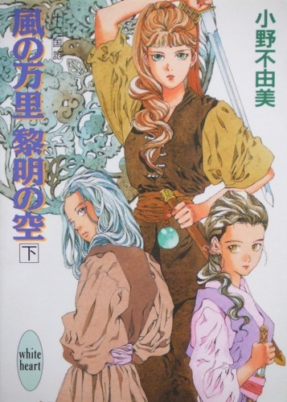
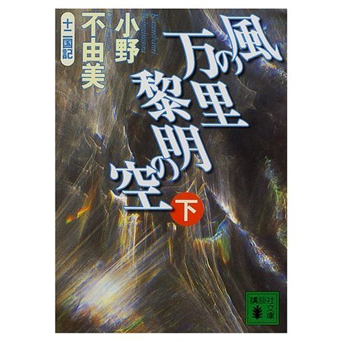

| [小野不由美] 十二国記シリーズ07 | |
| 小野不由美 | |
| (2015) | |
|
十二国記 風の万里 黎明の空（下）
小野 不由美
|



十 章（承前）
１
「──陽子、どうしたの、その血！」
褞袍を脱ぐなり蘭玉が声をあげて、陽子は首を振った。
「べつに怪我をしたわけじゃない。──拓峰で怪我人に会って」
「まあ......」
「子供が車に轢かれたんだけど、なんか妙な感じだったな」
なにしろ閉門も遠くないことだったので、陽子はあわてて拓峰を出てしまった。北韋の近くまで班渠に走らせ、ぎりぎりで閉門に間にあった。
「華軒が遠ざかっていくところだった。──どう考えてもあれが轢いたとしか思えないんだけど、華軒も停まらないし、誰も呼び止めない」
「......ああ、昇紘ね」
え、と陽子は首をかたむけた。蘭玉は起居の椅子に戻って、中断した縫い物を続ける。
「止水の郷長だわ。華軒に乗っていたんなら、たぶんそうだと思う。郷長ぐらいの人でなきゃ、乗れないもの」
「有名なのか？」
「とっても有名。人を人とも思わない豺虎よ」
言って蘭玉は顔をしかめてみせた。
「北韋にも止水から逃げてきた人がいたわ。最近では聞かないけど。──州境に郷兵を置いて、逃げ出す人を監視させてるんですって。それでも悪い噂ばかりが聞こえる」
蘭玉が言うと、陽子はなにか考えこむようにうつむいた。
「......そうか」
「ここは幸せだわ、台輔の御領だもの。......和州の州侯はずいぶんとひどい方だって聞いたわ。昔はここの領主さまだったんですって」
「遠甫に聞いた」
蘭玉はうなずく。
「その頃はね、ひどかったみたいよ。和州に行ってくれて助かったけど、和州の人はかわいそうだわ。......でも、そのあたしたちも、いつまで平穏な暮らしが続くか、分からない。今は黄領だけど、それがいつまで続くか知れたものじゃないもの。たとえこの先もずっと黄領だったとしても、あたしは二十歳になったら、別の土地へ行く。そこが和州でないとは限らないわけだし......」
「そうか──そうだな」
「あと二年の間に、漢子が見つけられればいいんだけど」
蘭玉が笑うと、陽子は首をかたむけた。
「北韋に漢子を見つけて、振り分けられると同時に結婚するの。相手の籍に入れば、同じ里に土地を移してもらえるわ。──空きがあれば、の話だけど」
陽子は何度か瞬いた。
「そういう理由で──結婚するのか？」
「どこに振り分けられるか、すごく重大なことだもの。許配って仕事があるのを知ってる？」
陽子は首を振った。
「──いや」
「結婚相手を紹介してくれるの。条件を言って、紹介してもらう。お金を払って籍に入れてもらって、土地を動かしてもらうのよ。そうしたら別れる。それが許配」
「それは......すごいな」
「そう？」
「蓬莱では、離婚は簡単なことじゃない。最近ではずいぶん簡単に別れる人もいるけど、やっぱりあまり褒められたことじゃないってことになってる。そうも簡単に、別れるなんて聞くと、ちょっと愕然とするな」
陽子が言うと、蘭玉はくすくす笑った。
「蓬莱は幸せな国なのね。そりゃあ、あたしだってちゃんとしたひとを見つけて一緒になって、子供を持って暮らしたいけど。でも、止水に振り分けられるぐらいならそうするわ。止水では税は七割なのよ、知ってる？」
「まさか」
税はおおむね収穫の一割、軍や官費をまかなうための特別税である賦がついても二割には達しない。それが決まりである。
「賦が二割、人ひとりあたりにかかる口賦があって、これが一割。橋を造ったり堤を造るために納める均賦が二割、妖魔から守ってもらったり、いざというときに里家で養ってもらうための安賦が二割。──合計で七割よ」
「ばかな──」
法には天網と地網がある。天網は太綱ともいい、天から与えられた定め、王といえどもこれに違反することはできない。王が発するのは地網、どんな州侯も領主もこの地網に違反することは同様にできなかった。税制は地綱によって定められるが、それは一割、州侯、領主が徴収できる賦は五分まで、それも当座、税を八分に軽減し、賦を徴収してはならないと発布してある。
「いま、賦は徴収できないはずだ。しかもそれ以外の税が民に課せられるなんて、聞いたことがない。第一、その安賦や均賦というのはなんだ？そんなことはいっさい、国庫からまかなわれることじゃないか」
蘭玉は困ったように微笑んだ。
「だから、昇紘は酷吏だっていうの。──本当に、どうして王は昇紘みたいな奴を許しておくのかしら......」
言って蘭玉は、縫い物をする糸を切って針を針山に戻した。
「夕餉の用意をしなきゃ。──着替えてきて。桂桂がその血を見たらびっくりするわ」
陽子はまっすぐ書房に向かった。遠甫に声をかけて中に入る。ちょうど帙を棚にしまっていた遠甫は、陽子を見るなり目を丸くした。
「どうしたんじゃ、陽子、その血は」
「事故に遭ったひとを抱えたので。──それより、遠甫。止水では税が七割だと聞きました」
遠甫は軽く息を吐く。
「なるほど、それを聞いたか。それで止水に行ったのかね」
「そういうわけじゃなかったんですが。──本当なんですか？」
「本当じゃな。まあ、落ちつきなさい」
「──わたしは、そんなことを許した覚えはない！」
声を荒げた陽子に、もういちど息を吐いて、遠甫は椅子を示す。
「憤っても始まらんのじゃよ。──陽子、北韋の税は三割じゃ」
陽子は愕然と目を見開いた。
「──でも、北韋は黄領で──」
「どんなに仁道篤い主がいても、目が行き届かなければ役には立たんということじゃな」
陽子は深く息を吐き、しおしおと遠甫の前に座った。
「気を落とすでないぞ。──君主ひとりでは政はたちゆかぬ。君主を支える有能な官吏がいなくては、国に政はゆきわたりはせんのじゃ」
「ですが......」
「慶はこのところ君主に恵まれておらん。北韋の民が嘆くのを聞いたことがあるかね？──ないじゃろう。昔、呀峰が治めておった頃には、税は五割じゃった。それが黄領になって三割に減った。民は感謝しておるよ」
そんな、と陽子は絶句する。
「昇紘が設けた七割の税のうち、一割が国、四割は呀峰のとりぶんじゃな。あとの二割が昇紘のとりぶんじゃ。昇紘は能吏での、税の取りさてがたいへん上手い。──呀峰はそう言って昇紘に目をかける。なにしろ呀峰のために四割の税をきっちり徴収できるのは、昇紘ぐらいなものらしいからの」
「どうして、そんな」
そんなことが許されている。不甲斐ない自分に陽子は泣きたい気分になる。
「実際、和州では均土が盛んじゃよ。あちこちの堤、あちこちの橋、呀峰は、徴収しておるのは税ではない、供託された金だと言い張る。実際に堤や橋が造られておれば、国はそれを咎めるのがむずかしい。──そのくせ、和州の橋はすぐ落ちる。雨が降らずとも落ちるからお笑いじゃ。それも、人夫が手を抜くせいじゃと言われれば、国は呀峰を咎めることができん」
「そういうことか......」
外朝を牛耳る冢宰──すでに陽子自身が左遷したから大宰と言うべきだが──の靖共など、蛇蝎のように呀峰を嫌っている。あれほど嫌われて、それでも決して処罰の隙を見せないのはさすがというべきだろうか。靖共にできないものなら、陽子自身の勅命でなければ呀峰を処罰することはできないだろう。官の中には勅命をもって呀峰を罰せよという声も大きかったが、確証ない勅命は国を乱すもとになりかねないと、反対する官吏も多い。その反対する官吏でさえ侮しげだったりするから、呀峰の疎まれようは大したものだといえる。
「だが、そうやって私腹を肥やす官吏はなにも呀峰や昇紘だけではない。国じゅうにあふれておる。呀峰や昇紘だけを取り締まっても意味がない。第二の呀峰が現れるだけじゃ」
陽子は顔を上げた。
「でも、しないよりはいいはずです」
「なにを理由にじゃね？」
「それは──」
「昇紘は豺彪じゃが、呀峰が庇うから捕縛がむずかしい。呀峰はおそろしくしたたかじゃから、やはり捕縛がむずかしい。簡単にできることなら、とっくに誰かがやっておるよ」
「だけど、わたしは今日、昇紘が子供を殺したのを見ました」
遠甫は目を丸くする。
「それは確かかね？ 確かに昇紘がやったことか？」
「おそらく」
陽子が事情を述べると、遠甫は溜め息をつく。
「なるほど、その姿はそのせいか。──じゃが、それで昇紘が捕らえられるものかの」
「ですが」
「おそらく、華軒に乗っていたのは昇紘ではなかった、という話になるじゃろうな。そうでなければ、子供を死なせたのは華軒ではない、という証言が山のように現れる。──それをできるだけの権があるから、昇紘は郷長でおれるのじゃということを忘れてはならん」
陽子は唇を噛んだ。
「酷吏を放置することは良くないが、法を歪めて処罰すれば法が意義を失う。それは放置よりももっと罪が重い。──焦るでないぞ」
陽子はうつむいて房間に戻り、堂の扉をぴったり閉ざした。
「......班渠、悪いが金波宮に戻ってきてくれないか」
「昇紘ですか」
「うん。なにもしないではいられない。景麒に言って、行状を調べさせてほしい。それと北韋の状況を報告してくれ」
「......かしこまりました」
それきりしんと物音の絶えた堂の中で、陽子は眉をひそめる。倒れた子供の姿が脳裏に甦った。ずいぶんと瘠せた子供だった。──確かに、昇紘が故意に殺したかどうか、陽子は知らない。
「かわいそうに......」
まだ小さな子供だった。本当に昇紘が殺したのなら、昇紘のような酷吏をのさばらせておいた陽子の責任にほかならない。今際のきわの言葉が耳に残っている。
「鈴が泣くから死にたくない、か──」
姉弟だろうか。それとも──。
陽子はふと視線を上げた。
「すず──？」
妙な名前だ。あまりこちらふうではない。むしろ──。
神籍に入ってしまうと、言葉が翻訳されてしまうから性質が悪い。思い返してみても、あの少女がどんな言葉を喋っていたのか、思い出せなかった。容姿も印象に残っていない。ただ、痛いような悲嘆を浮かべた双眸だけを覚えている。
しまった、と陽子は唇を噛む。なぜ、あの場で気がつかなかった。問いただしてみればよかった。生まれはどこだ、と。
陽子は血のなすりつけられた衣服を見下ろした。
──もういちど、止水に行ってみようか。
思って首を振る。会って陽子になにが言えるというのだろう。昇紘を放置している自分、そして。──慶には海客を隔てる法がある。それを陽子は撤廃できていない。その陽子が海客に会って、かける言葉があろうはずがない。
「......なんて不甲斐ない王なんだ、わたしは......」
２
──ひとの泣くには、ふたつあるんだな、って。
本当ね、と鈴は穴の中に下ろされていく棺を見つめた。
こんなに辛い悲しい涙を知らない。胸をかきむしるようにして号泣して、息も絶え絶えになって、自分の中がからっぽになったような気がしても、またふいに泣けてしまう。
拓峰の街の外に墓地はあって、寂しい冢堂がひとつぽつんと建っていた。そこに一晩置かれた甕によく似た丸い棺は、穴の中に消えてしまった。
やめて、と鈴は墓士に懇願した。埋めるのはやめて。かわいそうだ。
──意味のない願いだと、自分でも分かっている。
なだめるように背中を叩かれ、すがりつく手からもぎとるようにして棺は運ばれていった。また同じ虚しい懇願を繰り返さずにはおれない鈴の目の前で、棺に石が打ち下ろされ、穴が埋められていく。
棺が丸いのは、この国の人々が卵から生まれるからだ。殻の中から生まれて殼の中に戻る。子供のなる里木からもいできた卵果に、父母は軽く石で叩いてひびを入れる。早く生まれてこいという呪いだった。そのように死者の再生を願って、卵のように丸い素焼きの棺を使い、これに石でひびを入れて土に還すのだった。
穴が埋められ小さな塚が作られ、墓士たちが去ったあとにも、鈴はそこで呆然としていた。
──分かっていたわ。
清秀は死ぬんだと。なんとなく漠然と、そうどこかで分かっていた。ひどくなるばかりの症状。食も細って瘠せていくばかり。どこもかしこも悪くなって。
景王なら助けてくれただろうか。本当に王なら助けられただろうか。
きっと大丈夫だと、信じる反面、たぶん王にも王宮の医者にもどうにもできないのではないかと思っていた。
「でも、こんな死に方をするはずじゃなかった......」
どうして轢き殺す必要があった。そんなことをしなくても、清秀はきっともう長くは生きていられなかったのに。
「あたし......ばかだわ......」
鈴は土を握りしめる。
「景王なんて......信じて。──どうして呉渡で医者に連れていかなかったの！」
医者に連れていっても無駄かもしれない。その恐れと、景王なら助けてくれるかもしれないという愚かな期待。呉渡で医者に連れていけばよかったのだ。船を降りてすぐに。──こんな街になんか来なければ。
「清秀......ごめん......」
また嗚咽がこみあげてきた。まだ涙が涸れないのか。
「......ごめんね──」
陽が翳り始めた。鈴はじっと自分の影を見ていた。
「おねえさん、門が閉まるよ」
鈴はぼんやりと背後を振り返った。小柄な人影を見て、鈴は一瞬、ありもしない期待を抱いてしまう。
「いつまでそうしてるの？ さっきから歯の根が合ってないよ」
「......ほっといて」
清秀より三、四歳上だろうか。十四かそのくらい。漆黒の髪の小柄な姿。
「慶はね、夜に街の外にいてもいいほど、安全な国じゃないんだよ、まだ」
「......そう」
「そうやっていても、死んだひとは返ってこない」
鈴は少年をにらんだ。
「──ほっといて。あたしに構わないで」
「このまま妖魔に食われたい？ とても自暴自棄だね」
「......あんたには分からないわ。さっさと行って」
少年の返答はない。ほんの少し後ろで、じっと鈴を見ている。
「誰も分からないわ！ あたしの気持ちなんか！」
叫んだ鈴に、少年は静かに言う。
「自分を哀れんで泣いているのじゃ、死んだ子に失礼だよ」
はっと鈴は目を見開いた。
──自分がかわいそうで泣く涙──。
「......あなた、誰？」
「拓峰の者。......一緒に街に戻ろう？」
鈴は立ち上がり、もういちど足元の小さな塚を見た。
「あなた、この子が誰だか知ってるの......？」
「もう有名だからね。......奏から来たんだって？」
少年が手を伸ばすので、鈴はおとなしくその手につかまった。華奢な掌が温かかった。
「この子は慶の子よ。......国を逃げ出して巧へ行って、巧を逃げ出して奏から慶に帰ってきたの......」
そう、と少年はつぶやく。背後の塚を振り返った。
「......かわいそうに」
うん、とうなずいたら、涙がこぼれてとまらなかった。鈴は少年に手を引かれたまま泣きながら街へ戻った。
「あなた、拓峰のひとなのね？」
閉門にぎりぎりで間にあって、街に戻った。門の中、すぐ右手の環途から鈴は目を逸らし、手の中の掌を強く握ってやりすごした。やっと手を離したのは中央の広途をかなり行ってからのこと。
「そう。......おねえさんも慶のひと？」
「ううん。あたしは才から来たの」
「それは長旅だったね。......宿はあるの？」
ええ、と鈴はうなずいた。
「......ありがとう、声をかけてくれて」
うん、と言って少年は鈴を見つめる。
「少し元気が出たね。──前を向いて歩いていないと、穴の中に落ちてしまうよ」
「穴の中？」
「自分に対する哀れみの中」
そうね、と鈴はつぶやいた。それはとても清秀に対して失礼なことだ。──また叱られてしまう。
「本当にそうだわ......。ありがとう」
「うん」
「あなた、名前は？」
「──夕暉」
ねえ、と鈴は夕暉の顔をのぞきこむ。
「清秀を轢いたひとが捕まったかどうか、知らない？」
しっ、と夕暉は鈴に目配せをする。
「──それは大きな声で言わないほうがいい」
言って夕暉は近くの小路に鈴を招いた。
「......捕まらないよ、あいつは」
「あいつ？ ──あなたそいつを知ってるの？」
「知り合いか、って意味なら、違うと言うよ。ぼくはあんな下郎とは知り合いでいたくない」
あまりに強い言葉に鈴は目を見開いた。
「誰なの？」
「この街の人間はもう、みんな知ってる。──郷長が旅の男の子を殺した、って」
「郷長──」
「郷長昇紘。覚えておくんだね。これがこの止水郷でいちばん危険なやつだから」
「......殺した？ 清秀をそいつが？」
「昇紘の車の前にその子が飛び出して、車を停めてしまったんだ。それで」
「それでって──そんな、それくらいのことで」
「昇紘にはね、それで充分なんだよ」
「ひどいわ......」
鈴は壁に背中をあずけてずるずると座りこんだ。
「清秀はまっすぐに歩けなかったのよ......」
鈴は膝を抱えた。
「本当に背負って、連れていけばよかった......」
どうしてそれを惜しんだのだろう。もうあんなに軽かったのに。できないことではなかったのに。
「おねえさん、自分を責めてはだめだよ」
鈴は首を振る。責めずにいられるはずがない。
「──昇紘を恨んではだめだよ」
「──なぜ！」
夕暉の顔にはひどく強いものをうかがわせる色が浮かんでいた。
「昇紘を恨むということはね、昇紘に殺されるということだから」
言って顔をそむけ、ぽつりと添える。
「そんな事情があるのだったら、教えるんじゃなかった......」
３
柳の東部から、祥瓊は楽俊とともに高岫山を越えて雁へ入った。国境を越えたとたん、見事に整備された道に祥瓊は目を丸くする。
高岫山の尾根を伝い、谷をたどり、山肌を九十九折りに延びる道を登り、山腹の街で一泊、さらに登れば小高い峰の山頂には斜面を利用して街が広がっていた。細長い街の中央を高い隔壁が分断し、そこには巨きな門闕がある。この門の手前が柳、門の向こうが雁だった。その隔壁の手前と向こう、途の様子も街の様子も見事に違っているのが興味深い。
磨耗してくぼんだ石畳の途は、門を境に整然と敷き詰められた石畳に変わっていた。広途といえば、轍の跡が残る途の左右に小店が立ち並ぶのが当たり前の光景で、通りは人と馬車とで雑然としているものだった。それが門の向こう、雁に入れば小店が端正に並び、小店と道端の間を人波が流れている。
「すごい......」
道端に並ぶのは高い建物。そのうちのいくつかは石造りで、四階も五階もの高さがあり、どの窓にも玻璃が入っている。高い建物が多く玻璃の入っているのは柳の街もまた同様なのだが、柳の街はどことなく古びて陰欝な印象を与えた。それは建物がいかにも古いせいかもしれないし、建物の前の古びた石畳に残る凍った水たまりのせいなのかもしれない。あるいはせっかくの玻璃がすっかり曇って割れていたりするせいかも。いずれにしても柳の街は、雁の街を精いっぱい真似て、真似ることに疲れ果て、諦めきったように見えた。
──豊かだとは聞いていたけれど。
北方の国々で最も富んだ国。それでも想像以上の街に祥瓊は開いた口が塞がらない。
「雁だって寒い国なのに、どうしてこんなに違うのかしら」
気候のうえでは芳も雁も大差がない。雁のほうが芳よりも南に位置するが、大陸の北東から冬には凍るような条風が吹く。実際、歩いた感触では雁に近づくにつれ暖かくなるという気はしない。
「大きな鉱山があるの？」
楽俊を振り返ると、いや、と彼は笑う。
「芳や柳と違って、雁はなんにもねえからな。小麦を作って、牛を飼って、それで終わりだ」
都市は大きく、商業も盛んだが、国の富は地からの収穫が大半を占めるものだ、と楽俊は言う。
「でも、こんなに違うわ」
「そりゃあ、主上の格の違いだな」
「王の違い？ これが？」
「五百年国が傾いたことがない、というのはものすごく大きな違いなんだよ」
「でも......」
「玉座が空になることがなけりゃ、まず天災が少ない。戦災も天災もなけりゃ、人は増える。そいつらががんばって開墾するから農地が増える。その農地も手入れが行き届くから豊かだな。できた穀物は国がちゃんと監理して、値崩れしねえようにしてくれる。国は地を治めて、これがどんどん蓄積されていくから、国の端々まで整備が行き届いてる」
たとえば、と楽俊は言う。
「溝を掘って雨期に備える。溝に小橋を作る、崩れないよう、石組みにする。途を横切る溝には蓋をする。ちゃんとした方針があって、それに沿って街が治められてる。十年や二十年じゃ、国の端々まで行き渡らねえ。ひとつの方針が長く国を導いてるから、こんな辺境まで行き渡る」
祥瓊の父親は三十年、玉座にいた。その先王は在位五十年足らず、それに対して五百年という長い時間、一人の王が統治してきた結果がこれ。
「王が短命な国はかわいそうだ。せっかく店を持って大きくしても、洪水で押し流されちまえば、また一から始めなきゃならねえ」
「そうね......」
「峯王が厳しいのは有名だったからな。祥瓊にゃ悪いが、そういう王を持つと民は不幸だ」
祥瓊はちょっと楽俊の横顔をうかがう。
「そうかしら」
「王ってのは、民を助けてくれるもんだからな。民を虐げる王の在位が長く続いた例はねえ。いま現在辛いってことは、近い将来、王が斃れてもっと悪くなるってことだろ。実際、宰輔まで死ぬと、次の王が起つまでに五年や十年はかかる。二十年なんてこともざらだからな。二十年天災が続いちゃ、土地なんて荒れ放題だ。食うのにだって困る」
「どの王だって、民を助けるために一生懸命やってるわ。でも、それが必ず実ってすぐに結果に結びつくものじゃない。国が荒れれば人心だって荒れる。とりあえず刑罰を重くして無軌道になった民を道に戻す。それは必要なことだ、って思わない？」
少なくとも祥瓊の父はそう言っていた。新しい法を布告するたび、少し厳しすぎるのではと言う官吏が必ずいる。けれども国を立て直すためには必要なのだ、と口癖のように。
「ある程度は必要なのかもな。けど、物事には限度ってもんがあるからな。王が斃れたってことは、ゆきすぎたってことだろうなあ」
「芳の王が斃れたのは、天命が尽きたからじゃないわ。簒奪者が王を弑逆したからよ」
楽俊はうなずく。
「恵州侯が起って王を討ったんだな。──けどな、弑逆は大罪だけど、必ずしも悪いってわけでもねえ。王が国をどうしようもなく傾ける前に、あえて討ってそれを止めるってこともあるからさ。実際、そのほうがましなことがある」
祥瓊はうつむく。なぜ父仲韃があれほど憎まれていたのか、なぜ月渓のような簒奪者が人望を失わないでいられるのかは分かった気がした。民は仲韃がさらに国を傾けるだろうと思っていたのだ。ひどい荒廃が訪れる前に決断し、荒廃を止めた月渓を褒める。少なくとも、民はそう評価していたのだ。そしてその王を諫めなかった祥瓊にも、同じ憎しみが振り向けられた──。
行こう、と楽俊に促されて、祥瓊はどこか寂れたような柳の街から、華やかな空気の流れる雁の街へと足を踏み入れた。街の名は同じく北路。
さすがに雁に入るときに、旌券の改めを受けた。慣例として、国境を越えるには旌券の改めがある。犯罪者の通行を取り締まるため、持ちこまれる荷を監視するためだった。旌券がないからといって追い返されることはないが、そのかわりに官の尋問を受けなければならない。
事前にそう聞いていたので、祥瓊はやや緊張しながら門卒に旌券がない、と言った。門の脇の建物に行くよう指示されたが、別の門卒がそれをとめた。
「ああ、大丈夫だ。──こちらのお連れだ。お通ししろ」
言った門卒は丁寧な礼をして楽俊に旌券を返す。祥瓊は首をかしげ、門を通り抜けてから、あらためて楽俊に訊いた。
「あなたいったい、何者なの？」
「だから、学生だってば」
「考えてみると、楽俊って、すごく怪しげね」
「......ま、いろいろと事情があるってことさ。祥瓊にも事情があるみたいにな」
「なんだか、まるで柳を調べてるみたいだったわ」
「そういうことでは、あるな。──おいら、他の国を見てみたかったんだよ。巧で雁についていろいろ聞いてはいたけどさ、実際に行ってみると聞いただけとはえらく違う。学校はちょうど新年から春の休みだ。それでその間に他の国も見てみたかった。その話をしたら、柳へ行くんなら便宜を図ってやるって人がいてな、その代わりに柳がどんな案配だか知らせてくれ、ってんで乗ったってわけさ」
祥瓊はちらりと楽俊を見る。
「たとえば、柳が傾いているかどうか？」
うん、と楽俊はうなずく。
「これは重大なことだ。もしも柳が本当に傾いているのなら、国境はこれから危険になる。柳から荒民が流れてくる。それを受け入れる心の準備がいる。前もって知っておくのとおかないのとでは、大きな違いがあるからな」
「だから調べてくれって、雁のえらい人が？」
「そうだ。──雁は立派な国だ。本当に豊かで、地も民もよく治まってる。けど、実は問題がないわけじゃない」
楽俊は背後を振り返った。門を見て、その向こうを指さす。
「柳側の街はしょぼくれてる。どう考えたって、泊まるなら雁の宿のほうがよさそうだ。それでも夕方のこの時刻、柳に入っていくやつがいる。──なぜだと思う？」
祥瓊は振り返り、首をかしげた。
「言われてみると不思議ね。あんなに人が出ていくわ。いまからじゃ、次の街までたどり着けないのに」
「雁には最低の宿がねえんだ」
「......え？」
「雁の民は豊かだ。宿に泊まるにしても、見ず知らずの人間と雑居するような宿に泊まる必要なんかねえ。だからそもそも、そんな宿は流行らないし、あったって泊まるのは宿代を踏み倒しかねねえ貧乏人ばっかりだから、宿屋だって嫌がる。──けど、雁に住む人間の全部が豊かなわけじゃねえ。浮民、荒民、食うや食わずの連中がいる。こういう連中が泊まれる宿が、雁の街には少ない。旅自体もそうだ。雁には馳車しかねえんだ」
街道にはふつう、馳車と呼ばれる二頭立てから四頭立ての馬車が走っていた。街道沿いの街から街へ、早駆けして乗客を運ぶ。馬車とはふつう、近郊の農民が余暇を利用して行うものだが、馳車は専門の業者が行う。
「雁は豊かだから、農民は農閑期に馬車を走らせて小金を稼ぐ必要がねえ。ふつう馳車っていえば貴人でなきゃ乗せねえけど、雁の馳車には誰でも乗れる。しかも値段もおそろしく安い。けど、その代金は馬車の相場ほどは安くねえんだ。民は豊かだから気にせずに馳車を使う。だけど、貧乏な連中が使える馬車がないから、その連中が旅をしようと思ったら寒風の中を歩くしかねえ」
祥瓊はあらためて門を振り返った。なるほど、柳へと出ていく旅人は誰も疲労の色が濃く、身なりもいかにも貧しげだった。門の脇の建物へと流れていく者が圧倒的に多かったから、旌券を持たない浮民や荒民が多いのは一目瞭然である。
「雁は豊かだから、人が集まる。だけど、雁の民と流入した民の間には貧富の差が歴然とあるんだ。宿を取れねえ貧しい連中が街路の隅で寝て凍え死ぬ。それが嫌で追いつめられた連中は旅人から金を盗む。──雁が抱えてる最大の問題は荒民だ。大きな街じゃ雁の者より荒民や浮民のほうが数が多い。雁はここ何十年も、荒民の処遇に頭を痛めてる」
「それで柳の様子が気になるのね......」
「そういうことだな」
「──楽俊の旌券の裏書きをしてるのは誰？」
楽俊は尻尾を振っただけで、これには答えなかった。
「旌券を見せてもらってはいけない？」
祥瓊が言うと、楽俊は黙って懐から旌券を出した。その裏面、鮮やかな墨書は、「雁州国冢宰院白沢」と。
「......冢宰」
楽俊はひげをそよがせた。
「冢宰に面識があるわけじゃねえ。騶虞を貸してくれたひとが、冢宰に頼んでくれただけだ」
冢宰といえば、諸官の長だ。冢宰にものを頼める以上、その人物は国の中枢に近い。
「......すごいのね」
楽俊はかりこりと耳の下を掻く。
「べつにおいらが大人物ってわけじゃねえ。おいら、たまたま景王とは知り合いなんだ。それで」
「景王......」
口にしたとたん、胸が刺し貫かれたように痛んだ。
「どうして......あなたみたいな......」
「半獣と知り合いか？」
楽俊に問われ、祥瓊はあわてて詫びた。
「ごめんなさい」
「べつに謝ることじゃねえさ。おいらはご覧のとおりの半獣だ。けど、それを悪いとは思ってねえから。損をしたなあ、と思うことはあるけどな」
「そういう意味じゃなかったの」
「うん。......おいらは景王とは知り合いだ。友達なんだ。おいらもあいつを友達だと思ってるし、あいつもおいらを友達だと言ってくれる。そういうの、まわりから見りゃ、奇天烈なことだろうし、おいらも最初は、抵抗あったけどな。なにしろ王さまだからなあ。王さまを友達呼ばわりできねえじゃねえか。そう言ったら怒鳴られちまった」
「......景王に......？」
「うん。人と人の間には、立ってる場所の距離のぶんしか隔たりはねえんだ。──そう言われた」
楽俊は照れたように笑う。
「行き倒れてるのを拾ったんだ。それで雁まで連れていった」
祥瓊はぽかんと口を開ける。
「行き倒れる？ 景王が？」
「あいつ、海客だから。──胎果なんだ。こっちに流されたら巧国で、巧は海客は殺せって国だ。逃げ回って行き倒れちまったんだなあ」
祥瓊は胸を押さえた。王になった少女は、なにひとつ苦労なくその幸運を手に入れたのだと、そう思っていた。
「最初はおいら、景王を関弓へ連れていって、そのご褒美にちょっとした仕事がもらえるといいなあ、と思った。でもあいつといるうちに、そういう考えってのは、どうも卑屈なんじゃねえかって気がしたんだ。──ご褒美をくれるってんでさ、望みはなんだって訊かれて。少学に入りてえって言うつもりで、本番になったら、口がするっと大学に入りてえって言っちまった。おいら家でもちゃんと勉強してたから、大学にいったって絶対ついていけるはずだ、って大層な啖呵を切っちまったんだよなぁ」
祥瓊は複雑な気分で楽俊を見る。
「わたしを雁へ連れていっても、誰もご褒美をくれないと思うわ......」
「そんなんじゃねえ。あんた、苦しそうに見えたんだ。牢の中で」
「わたしが？」
「苦しくて苦しくて辛抱できないって顔してた」
言って楽俊は目を細める。
「──おいらが会ったころの景王もそうだった」
「......それでわたしも拾われたのね」
楽俊は笑う。
「だから、おいらはそういう巡り合わせなんだって言っただろ？」
十一章
１
雁は柳の南東に位置するが、冬の気候は柳と大差ない。馬車でなければ旅がしづらいのは柳国と同様だった。馬車はないので、馳車を使う。馳車は堅牢な客車を曳いて、整備された街道を南下していった。
貧しい旅人は肩を並べ、街道を旅していた。吹き渡る風は冷たく、歩いていても身体が凍えることだろう。旅人は胸に釿婆子を抱き、炭を入れた袋と薪を少し提げてうつむき加減に歩いている。街道のあちこちで持ち寄った薪で焚き火をして暖を取る。そういった人々を横目に見ながら、馳車は街道を駆け抜けていく。
「歩いて旅をするんじゃ、大変ね......」
祥瓊は向かいに座っている楽俊に声をかけた。客車の中には三人掛けの床几がふたつ、向き合うように並んでいるが、乗客は祥瓊と楽俊のふたりしかいない。
「祥瓊は、やっぱり戴に行くのか？」
祥瓊は息を吐いた。
「本当は慶へ行きたかったの」
「へえ？」
「慶へ行って下官になって、景王に近づいてみたかった。うまく取り入ってやろうと思ってた。あわよくば景王から玉座を簒奪してやろう、なんて。──半分は思ってるだけだったと自分でも思うけど、半分はきっと本気だった。......怒る？」
楽俊はひげをぴんと上げた。
「怒りゃしねえけど。......それが本当になってたら、おいらはあいつに顔向けができなかったなあ」
そうね、と祥瓊は笑う。
「それで戸籍がほしかったの。戴に行けば、慶へ連れていってくれる船があるって聞いたから。慶で土地と戸籍をくれるんですって」
へえ、と楽俊は目を見開く。
「そりゃあ、初耳だ」
「本当は吉量で戴まで行くつもりだったんだけど、とりあえず慶に行って、土地をくれるってところを探してもいいな、って」
言って祥瓊は膝の上に組んだ自分の手を見つめた。
「わたし、実はとても公主の自分にこだわってたわ......。王宮に住んで、贅沢をしてる自分をなくしたくなかった。畑で働くのも、粗末な服を着るのも、とても恥ずかしかった。......景王が同じ年頃の女の子だって聞いて、わたし、彼女が妬ましかった。わたしがなくしたものを全部持ってるなんて、許せないと思ったの」
「そうか......」
「本当を言うと、いまでもやっぱり貧しい宿に寝るのは抵抗があるわ。毛織りの着物は恥ずかしい。......けれど、これが罰なの」
組み合わせた指に力をこめた。荒れた指の先が白い。
「わたし、ただ王宮で遊ぶだけで、なにもしなかった。民から弑逆されるほどお父さまが恨まれてるなんて、知らなかった。......知ろうともしなかった。そのことに対する罰なの。だから月渓──恵州侯はわたしの仙籍を削除したんだってことが、やっと分かった......」
「......うん」
「公主でなかったら、わたしは里家の世話になるしかないわ。まだ未成年だし、官吏になる才覚もないもの。......だから里家に入れられた。わたし、そういうことのいっさいが、ぜんぜん分かってなかったの......」
「もう分かったんなら、いいじゃねえか」
そうね、と祥瓊は笑う。
「......景王はどんなひと？」
「年は確かに祥瓊ぐらいだな」
「わたしみたいに、愚かじゃないわね」
「あいつもそう言ってた。......自分は愚かだ。それで王になってもいいんだろうか、って」
祥瓊はさらに笑った。
「......わたし、似てるみたい」
「確かにな。──けど、祥瓊のほうが女らしい。なんかあいつ、どうもぶっきらぼうなとこがあるからなあ」
くすくすと笑って、祥瓊は窓の外を流れる風景を見やる。
「わたし、慶に行ってみたいわ......」
その王に会ってみたい。──会えなくてもいい、その王が造る国を見てみたい。
「雁のあちこちから慶へ送ってくれる旅団が出てるけど」
言われて、祥瓊は楽俊を見返した。
「ああ、景王が起ったから、みんな国に帰るのね」
「ずいぶんな数の連中が慶に戻ろうとしてたな。どんな王だが分かっちゃいないんだが、なにしろ、登極に延王が力を貸したぐらいだから、立派な人物なんだろうって慶の連中は躍り上がってる」
「ああ......そういう噂だったわね。でも、だからといって必ず賢帝だとは限らないのに」
「そうなんだけどな。......まあ、雁にいるよりは帰ったほうがましだろう。土地があって、細々とでも地に足のついた暮らしができるからな」
楽俊は苦笑する。
「慶に見切りをつけて、逃げ出してきたはいいが、肝心の雁じゃ荒民の暮らしは辛い。傾いた国に残ってるよりましだし、雁もよく面倒を見てくれるけど、雁の民が豊かに暮らしてるのを見てればどうしたってせつない。雁の国民になるには雁で官府から土地を買うか、官吏になるしかねえが、どっちも簡単なことじゃねえ。雁で生きていこうと思えば、浮民のまんま豪農に雇われて土地を耕すか、店に雇われて働くしかねえから、民は国を懐かしむ」
「分かるわ......」
「おいらは恵まれてる。たまたま運が良くて、大学に入れた。慶の民だって恵まれてる。他の荒民に比べりゃな」
「そうなの？」
「景王は延王と親交があるからな。景王が慶の民をよろしく、と延王に言う。延王が分かった、と言う。それだけのことがずいぶんと恵みになるんだ。少なくとも慶の連中は国まで送ってもらえる。雁の国費と慶の国費だ。ちゃんとそのへんの折り合いが慶と雁の間でついてるんだ。──けど、それ以外の連中は大変だ」
「そうね......」
「景王は恵まれてる。なんといっても、雁ってえ強い後ろ盾がある。──がんばってくれるといいんだがなあ......」
慶はどんな国だろう。芳よりはるかに南の国。
「その旅団は慶の民でなければ送ってくれないのかしら」
「慶の民でなきゃだめだ、ってことはねえよ。旌券でもなけりゃ調べる方法がねえし、家が焼けて旌券も持てずに逃げた連中もいるからな。──でも、どうしても慶に行くんなら、おいらが高岫まで送ってやるよ」
「──楽俊」
「次の街でたまが待ってる。──あの騶虞だ。あいつなら二日あれば高岫山まで行って関弓に戻れるし」
祥瓊は南東の方角を見やった。
「わたしが、慶に行っても心配じゃない？」
「行くといい。慶を見てこいよ」
「......そうする」
「気が済んだら、関弓へ来て、どんな案配だか知らせてくれないか？」
祥瓊は、うなずいた。
２
──昇紘。
清秀を殺した。
宿でうずくまる鈴の頭の中にはそのふたつの言葉しかない。
「......許さない」
何度目かにつぶやいたとき、扉を叩く音がした。宿の下男だ。
「お客さん、もう門が開きましたがね。まだいらっしゃるんで？」
鈴は懐から、財嚢を取り出す。
「しばらくいるわ。──これは前金よ」
五日分の旅費がそこには入っている。──堯天までわずかに五日しかなかった。
「ええと──はいっ」
中を改めた下男があわてて戻っていく。それを見やって、鈴は宙に目を据えた。
「......許さないわ、昇紘......」
鈴は以来、街を徘徊するようになった。物見遊山のふりで、誰かれとなく声をかけ、昇紘について訊く。
人々の口は重い。それは蓋するものがあるからにほかならない。
最初は、昇紘の罪を問おうと思った。
五日街を歩いて、それが不可能であることを悟った。昇紘は絶大な力を持つ郷長だった。止水郷に君臨する王。税は国の定めよりもはるかに重く、差額は昇紘の懐に消えている。税の取り立ては過酷そのもの。法を弄び、気まぐれに民を処罰する。
それほどの無軌道にもかかわらず、昇紘はこれまでその責を問われたことがなかった。これからもないだろう、と街の人々は言う。懐に入れた多額の税を上位の官にばらまいて、昇紘は安全を買っている。
──次に考えたのは、このまま堯天に行って、景王に直訴することだった。王に面会することはたやすいことではないが、采王の裏書きした旌券があれば。
だが、それもさらに五日、街を歩いて諦めた。
昇紘の無軌道は、五日街を歩いて知ったよりも、いっそう甚だしかった。郷下には怨嵯の声が密かに満ちていたが、それを誰も言いたがらないほど昇紘の圧政はすさまじかった。
七割一身なんだ、と教えてくれた者があった。
税は土地から得る収穫の七割。これがわずかでも欠ければ、一身をもって支払わなくてはならない。自分が出頭して殺されるか、あるいは家族の首をひとつ持っていくか。
昇紘は廬で狩りをする、という。気が向けば近郊の廬に行き、女子供を攫っていく。数日を経て、襤褸のようになった者たちが放り出される。
──あるいは。巧の国境のほうから、時折商人が来るという。あるいは戴から船が着く。馬車の中、船の中に積まれた荷は人だった。己が殺したぶん、荒れた国から浮民や荒民を集め、甘言を哢して止水に招く。傾いた国に赴いて大量の食料を運び、家を土地をなくした人々にこれを配れば、久々の食料にありついた人々は止水をどんな豊かな土地だろうと思う。この馬車を船を遣わした郷長は、どれほど情け深い人柄だろうか、と。食料をおろした替わりに人々を乗せ、馬車も船も帰ってくる。土地に戸籍につられて旅してきた人々は、後になって己の浅はかさを呪うという図式。
なぜ、と鈴は怒りを禁じ得ない。
──なぜ、景王は昇紘のような豺虎を官吏にしておく。
街で囁かれる噂がある。昇紘がこれほど民を虐げて、それで罰されることがないのは、よほどの後ろ盾があるから。......ひょっとしたら、その人物は堯天にいるかもしれない。堯天の金波宮、その最も高い場所に。
予王がそうだった、と噂を聞かせてくれる者は言う。
先王は全く治世に興味がなかったのだ。どんな官吏がどこでなにをしていようと、少しも気にはしなかった。臆面もなく媚びへつらい、玉や絹を贈った者はそれだけで罪を許された、と。
──女王だから、と拓峰の民は言う。
慶に女王は折り合いが悪い。平穏な治世が行われたためしがない、と。
鈴は己を笑ってしまった。
蓬莱の王、この世で唯一、鈴を理解してくれるひと。優しく哀れみに満ちた王。
──とんでもない。
景王は鈴の希望だった。憧れの全てであり、鈴の支えそのものだった。会いたい、と何度つぶやいたろう。──その己の愚かさ。
「許さないわ。──昇紘も......景王も」
鈴は拓峰を出て堯天へ向かった。予定どおり五日目には堯天に着き、そこで烙款を使って界身からあるだけの金を引き出した。采王がこれを聞いて眉をひそめるかもしれなかったが、そんなことは気にならない。
最初に鈴が探したのは、官許の架戟だった。
妖魔は通常の武器では傷つけられない。やわな刀では刀のほうが折れてしまう。妖魔を狩るためには特殊な呪を施した武器が必要で、これは国府、冬官府でしか作ることができないことから、特に冬器と呼んだ。冬官が官許の商人に冬器を卸すのである。この冬器商を特に架戟という。目印として店の入り口に官許の札と戟を架けておくからだった。
架戟で扱うのは甲兵、妖魔妖獣を縛める綱も鎖もここでしか扱わない。思い起こせばはるか南西、才国杷山麓の架戟へ何度足を運んだろう。洞主梨耀の乗る赤虎、これを世話する厩舎の下男のため、鈴は何度も甲冑を買いに通った。
ごく普通の戚幟と違い、架戟の商う武器にはあまり表立っては言われない別の特質がある。──仙を斬ることができるのだ。
郷長ともなれば、身分は下大夫、れっきとした仙だった。これを傷つけるには特殊な太刀が必要になる。
鈴は店の中を物色し、短剣を選んだ。使い方など知らないが、とにかくそれが必要だった。架戟は滅多な客には冬器を売らない。采王が裏書きしてくれた旌券がはじめて役に立った。
次いで向かったのは騎商だった。騎獣を扱う特殊な商人。馬や牛には用がない。鈴が用のあるのは、馬以上に脚が速く、どんな障壁も乗り越えられる騎獣だった。
騎獣にする妖獣は黄海で生け捕る。妖魔の跋扈する黄海で妖獣を捕らえる狩人たちは、猟戸師と呼ばれる。妖獣を猟って帰るより、仲間の死体を猟って帰ることのほうが圧倒的に多いからだった。猟戸師が捕らえた妖獣を調教し、騎獣にしたてる騎商もまた死と隣り合わせの商売だった。だから、騎獣はおおむね高価だ。最高と呼ばれる騎獣騶虞は、捕らえることができ、馴らすことができれば、それで一生生活できるという。
鈴は店の中に入る。小さな店の中では中年の男がひとり、帳面を繰っていた。
「──いらっしゃい」
男は目線を上げただけで言う。顔の右頬から頭頂にかけてひどい疵がある。右目も無惨に潰れていた。
「騎獣がほしいのだけど」
「──いくら？」
いくら出せるか、と男は訊いてくる。鈴は卓の上に為替を置いた。
「これで買えるものがほしいの」
男は為替を見て、軽く鼻を鳴らす。
「飛べるほうがいい？ 速いほうがいい？」
「飛べるほうがいいわ。よく言うことをきく騎獣がほしいの」
「鳥は乗れるのかい」
妖鳥に騎乗するのは、たやすいことではない。
「いいえ。──できれば馬がいいんだけど」
「じゃあ、三騅だね。それ以上は無理だ」
「それは、どういう獣？」
「青毛の馬だよ。飛空するというほど飛びゃあしないが、脚力だけはある。そこそこの河を越えるぐらいなら役に立つ。脚はたいして速くない。まあ、馬の三倍ってとこだが、息切れするのも早い。それで良けりゃあ、よく馴れたのがいる」
鈴はうなずいた。
「それでいいわ」
「どこにいるんだ？」
男がそう訊いたのは、騎獣は街にはいないからだ。鈴は自分の名と、宿泊している宿の名を教えた。
「──連れていく。七日ってとこだな。三日でほしけりゃ三騅に走らせるから、一日は使えないよ。主を換えたばかりだと、休ませてやらにゃあならないからな」
「七日でいいわ」
「半金だけ貰うよ。残金は荷と引き換えだ」
鈴はうなずいた。
「それでいい。待ってるわ」
待っている、という言葉どおり、鈴は残金で食いつなぎながら宿で騎獣を待っていた。あこがれたはずの堯天。凌雲山の麓にひろがる階段状の街。
感銘は受けなかった。清秀がいないことがひたすら悲しかった。
──ここが堯天よ、清秀。
見上げる凌雲山の山頂に、王宮はある。そこに景王がいる。──昇紘を許している愚劣の王が。
鈴は懐短剣を握りしめた。昇紘を切りつけ、返す刀で騎獣で堯天にとってかえし、采王の裏書きした旌券を利用して景王に面会する。
どんな罵声を吐きかけてやろう。昇紘は──畢竟景王は、不幸な慶の子供を殺した。
店の者の予告どおり、七日後には三騅が届いた。使いの男は鈴に香毬を渡す。
香毬は中に香を入れて焚き、それを帯につけるための小さな丸い飾りだった。中には騎商たちが調合した香が入っている。これを強く焚いて、騎商たちは妖獣を手懐けるのだ。他人に売り渡されても、妖獣は香の匂いに惹かれてさして疑問を浮かべない。それから徐々に香の量を減らして、主人の匂いを覚えさせる。
だが、鈴には興味のないことだ。鈴を覚えてくれなくてもいい。堯天にとってかえしたあとなら、乗り潰れてしまってもいい。
鈴は三日堯天に留まって三騅を馴らし、止水郷は拓峰へ向けて帰途についた。
──清秀、じきに仇を討ってあげる。
昇紘にも景王にも、清秀の苦しみを分からせてやるのだ。
３
朝仕事を終えた陽子は、遠甫らを送り出す。こちらの学校は何歳までと決められてはいなかったから、蘭玉もまた桂桂と一緒に小学に通っていた。小学では主に読み書きと算数を教える。数えの七歳、満の五歳から通うことになっているが、卒業などというものはないので、大人も行くし、大人に抱かれて乳飲み子も行く。要は人が集まって世間話の代わりにもう少し実のある話をしようという、それだけのいたって暢気な場所だった。だから小学に通うのも里人が廬から里に帰ってきている間だけ、小学自体が、春から秋にかけては閉まってしまう。それ以上の学校へ行くには小学の長である閭胥の選挙を受けなくてはならなかった。
人気の絶えた里家でぐずぐずと陽子は思い悩む。鈴という少女。探しに拓峰へ行ってみようか、どうしようか。堯天に走らせた班渠もまだ戻っていない。それも躊躇う理由のひとつで、昼餉の準備をしながら、どうしたものかと考えを巡らせていたのだが。
「──陽子！」
遠甫はいつも、桂桂と蘭玉と一緒に出て一緒に戻ってくる。戻ってくる三人のうち、真っ先に正房に駆けこんできたのは桂桂だった。
「お帰り」
「あのね、お客さんだよ」
「──わたしに？」
うん、と桂桂はうなずいて、背後を振り返る。蘭玉が遠甫と共に入ってきて、陽子を見てなんともいえない笑みを浮かべた。
「......辰門の近くの栄可館っていう宿で待ってます、って」
「──宿で？」
くすくすと蘭玉は笑って、厨房に入ってくる。壁の陰に陽子を招くようにした。
「男のひと」
陽子は眉をひそめた。脳裏に浮かんだのは拓峰の不審な宿屋で会った男のことだった。
「ひょっとして、厳つい男か？ ずいぶんと背の高い」
蘭玉は声をひそめて笑う。
「すらりとした人だったわよ」
「ひょっとして十四、五の？」
大男のほうでなければ、男をとめた少年のほうだろうか、と思ったのだが、蘭玉は軽く陽子をねめつけるようにした。
「やあね。いい人忘れるなんて、陽子ってとんでもないわ。──下僕が来たと言ってもらえれば分かるはずだ、って」
陽子は目を見開いた。
「下僕、だなんてすごいわねえ」
陽子はあわてて手を振る。
「と、とんでもない。そんなんじゃない」
「あら、照れちゃって。わりと素敵なひとだったわよ？身なりも立派だったし」
「違うって。──なんてことを言うんだ、あいつは」
「あいつ？ 本当に親密なのねえ」
蘭玉は声をあげて笑い、袖をまくって水場に向かった。
「なんだったら、すぐに行ってらっしゃいよ。今夜は帰れないんだったら、連絡してね」
「......やっぱりお前だったんだな」
陽子は言って、宿の客房に入る。堂に座った澄ました顔をねめつけた。
相手は少し不審そうに目を見開いて首をかたむける。すぐに丁寧に頭を下げた。巻いて垂らした布が肩先から前に落ちる。
「お呼びたてして申しわけありません」
確かに身なりは良い。いつもに比べれば、これでも質素なくらいだが。まさか官服で出てくるわけにもいかないだろうから、当たり前なのだが。
「とんだお呼びたての仕方だぞ、あれは」
「──は？」
案内してきた宿の者が、意味ありげな視線を投げて出ていく。言われもしないのに堂の扉を閉めていったので、陽子は深く溜め息をついた。
「もう、いい」
溜め息交じりに言って、陽子は椅子に腰をおろす。その足元からくつくつと笑い声が聞こえた。
「班渠だな。──班渠を遣わしてくれればよかったのに」
「里家がどんなところだか、見てみたかったものですから。──いけませんでしたか？」
「いいけどね。──それより、どうした。景麒がわざわざ来るとは」
景麒は膝の上の文箱から紙の束を取り出して卓の上にそろえた。
「御璽をお持ちですか」
「なんだ、そういうことか」
陽子は苦笑しながら、首を振る。
「それなら言ってくれなきゃ。──持ってきてない」
「では、書面を預けますから、明日、班渠にでも持たせてください」
「分かった」
陽子は書面を文箱ごと受け取る。全てを景顔に任せたといっても、高官に下す政令には王の御名御璽がいる。ざっと紙面を繰り、目を通していく。──なにしろ陽子は漢文が読めないので、本当に眺めるだけでしかない。内容を理解するためには景麒に読んでもらわなくてはならなかった。
「里家はいかがです？」
「──うん？ いいところだ。遠甫もいい方だし、里家の子供もいい子だから」
「そのようでしたね。よろしゅうございました」
「気になることもないわけじゃないが......」
陽子がつぶやくと、景麒はそれですが、と声を低めた。
「お尋ねのあった昇紘のことですが。とりあえず官籍をあたって官に訊いてみましたが、和州止水郷、郷長。悪評の高い人物のようですね」
「和州はくせがあるな。州侯の呀峰といい、昇紘といい」
「分を越えたことも多いので、処罰しようと諸官は躍起ですが。なにしろ呀峰の保護があって事あるごとに呀峰が庇うので、それができません」
「遠甫は呀峰を尾のない豺虎だと呼んでいた」
「そのとおりだと」
「幸い、止水は近い。郷長の昇紘については少し様子を見てみる。一度和州の首都にも行ってみるかな......」
「あまり危険なことは──」
「しない。充分気をつける」
景麒はちらりと陽子を見た。
「本当ですか？ ──生臭いにおいがいたしますよ」
「──え？」
陽子はあわてて袍を嗅いでみる。
「血の臭いでしょう。......主上がなにかなさったわけではなさそうですが」
「......ああ。──事故に行き合っただけだ。昨日のことなのに、まだ臭うか？」
「怨詛ある血というわけではないようですから、ごく薄くではございますが。本当に気をつけていただかなくては困ります」
怨詛ある血か、と陽子は苦笑した。偽王と戦っている間、よく景麒にそう言われたことを思い出した。たとえどんな大義があろうとも、人を殺し、あるいは殺すように命じれば、流された血は怨詛を含んで陽子にまとわりつく。麒麟は実際、血に弱いが、怨詛の気もまた麒麟を苦しめる。
「......気をつける」
景麒は──麒麟は生臭なものが食べられない。受けつけないわけではないが、脂で煎ったもの、脂で揚げたものでさえ身体に障る。蓬莱に流された麒麟が長く生きることができないのは、そのせいだろうと、延麒六太などは言う。王のいない麒麟の寿命は三十年前後と短い。蓬莱に流された麒麟のそれはさらにその三分の一程度らしかった。
──そういう生き物なのだ、麒麟たちは。
「本当に、気をつけるから......」
「そのようにお願いします」
「──堯天の様子はどうだ？」
強いて明るく陽子が問うと、景麒は渋い顔をした。
「やはり主上がおられませんと」
景麒は軽く息を吐く。
相変わらず権を争う官は朝廷を二分する。その筆頭、もと冢宰の靖共が実権を失い、反対派の首長である大宰が死んだといえど、その状況には変わりがない。なまじ権力がないだけ、彼らの興味は統治よりも勢力を争うことに向いてしまった感があった。
まことしやかにある者は言う。王は弑逆に怖じ気づき、蓬莱に帰ったと。ある者は雁に保護を願っているのだと言い、またある者は実は内宮の奥深くに隠れていると言い、果ては逃げ出した元麦州侯浩瀚が王を攫ったのではと言う者もいる始末。いずれにしても共通しているのは、玉座を放り出した王への非難と、二度と王が玉座に戻ってくることはないのではないか、と漠然と疑っていることだった。
景麒がそう言えば、陽子もまた息を吐く。
「そうか......」
「朝廷が自分の思うままにならないのに業を煮やし、延王に請うて雁国より官僚を招く気だと言う者も」
なに、と陽子は目を見開く。軽く唇を噛んで、すぐに苦く笑った。
「......なるほど、わたしは延王の援助がなければ、なにひとつできないと思われてるわけだ......」
それは事実だが、依存していると思われるのは悔しい。
「まさかとは思いますが。そのようなことはお考えではありませんね？」
ぴくりと肩を震わせて、陽子は景麒を見る。
「......なぜ、わざわざそれを訊く？」
その眸の翠に勁い色が浮かんだ。
「それは、確認する必要があることなのか？」
勘気を知って景麒は思わず目を逸らす。妖魔の視線でさえ受けとめられるはずが、主の視線を受けとめることができなかった。
「景麒だけは、わたしを信じなくてはいけない」
「......申しわけありません」
「わたしを信じない第一の者は、わたしなんだから。誰が疑わなくてもわたしだけは、わたしの王たるべき資質を疑っている。猜疑が過ぎて道を失った王だってあっただろう。──だから、たとえ世界じゅうの誰もがわたしを疑っても、お前だけはわたしを信じていなければならない」
はい、とうなずいた下僕を見やって、陽子は手の中の書面を広げた。
「景麒は急いで戻らなければならないのか？」
「あまり急いで戻ってはいろいろと障りがあるでしょう。なにしろわたしは雁へ行ったことになっておりますので」
陽子はくすりと笑う。
「なるほどな。じゃあ、一度、景麒も拓峰へ行ってみないか？」
「拓峰というと、止水郷の」
うん、と陽子はうなずく。
「和州の首都──なんと言ったかな」
「明郭、ですか？」
「うん。明郭へ行ってみたいと思ってた。明郭へ行って拓峰をのぞく。和州の状況を知りたいんだ。なんだったら、道案内をしないか？」
「ですが──」
景麒が言い淀むと、陽子はその鮮やかな色の目を上げる。
「景麒にも見ておいてもらいたい。王宮からは決して見えない慶の姿を」
「──はい」
「じゃあ、これを片づけてしまおう。──悪いが読んでもらえるか？」
４
「──遠甫」
声をかけて、陽子が書房の衝立の外で立ち止まると、中から鷹揚な返答があった。
「陽子か。どうしたね？」
失礼します、と声をかけて、陽子は書房の中に入る。遠甫は窓際の書卓についてこちらを振り向いていた。
「申しわけありませんが、二、三日、お暇をいただきたいのですが」
「構わんよ。──今度はどこじゃね？」
おっとりと見すかされて、陽子は苦笑する。
「和州の都まで行ってみようかと思っています」
「明郭か。和州が気になるかね」
はい、と正直に陽子はうなずいた。
「蘭玉は和州に振り分けられるぐらいなら、いったん誰かと結婚する、と言っていました。結婚して別れたほうがましだって。それほど疎まれる和州のありさまが気になります。......できれば、そんなことをしてほしくない。蘭玉だって好きでするわけじゃないでしょう。そうさせる事情がこの国にはあって──」
唐突に遠甫が笑い出して、陽子はきょとんと目を見開いた。
「遠甫？」
「なるほど倭は、頑固な婚姻をするのだったか」
遠甫は陽子を手招きする。いつものように、陽子は遠甫の脇の椅子に座った。
「そういう哀れみかたはやめなさい。こちらでは婚姻はあまり重要なことではないのじゃよ。──倭ではなぜ婚姻するのだね？」
「......一人では寂しいから」
「だったら婚姻する必要はあるまい。確かに生きるに、連れ合いがなければ寂しかろう。だから人は寄り添うな。こちらでは野合というが」
「ええと、子供が産まれると困るから......」
「こちらでは里木に願わん限り、子供は生まれんな。里木に願うためには婚姻している必要があるが──そうでなければ、里祠が許可せんからな──、単に伴侶がほしいだけなら婚姻の必要はないことになるな」
「ああ、そうか......」
「子供がほしければ婚姻する。必要でなければ野合でいい。ただ、子供を願うためには夫婦が共に同じ里祠のもとに──つまりは同じ里におらねばならん。そういう決まりになっておるからな。それで婚姻すれば、里が動く。どちらかがおる里に片方が移動するのじゃな。別れたからといって、元の里に戻されることはない。それで自分のいる里が苦しければ人は別の豊かな里に縁を求める」
「そうやって国を移動することもできますか？」
「できるが、そのためにはまず同じ国に戸籍を取得せねばならんな。他国の者とは婚姻できんからの。こればかりは太綱に決められておるから仕方ない。子を願う者は同じ里の婚姻した夫婦でなければならぬ、婚姻する者は必ずその国の男女でなければならぬ、とな」
「どうしてなんだろう......？」
はて、と遠甫は苦笑する。
「それは里木か天帝に訊いてみるしかなかろう。ひょっとしたら、王がその国出自の者でなければならん、という理屈と関係があるのかもしれん。かつて他国の者との婚姻を認めた王もあったようじゃが、その夫婦が里木の枝に帯を巻こうとしても決して結べず、子を授かることもなかったために結局廃止せざるをえなかったというな。──世の理なのかもしれん」
「不思議ですね」
陽子がつぶやくと、遠甫はふわりと笑う。
「倭には神がおらなんだろう。じゃが、ここには天帝がおられる。天帝が世の理を決めたのじゃな。太綱の一を知っておるかね？」
「天下は仁道をもって治めること？」
「そうじゃ。これに背いて民を虐げることはできる。じゃが、必ずこれに背いた報いがある。──そのように、太綱に背いて法を設けることはできるが、それは決してうまくは働かんものじゃ。世の理があるから、それに従って太綱が編み出されたのか、伝説に言うように天帝が太綱を授けたのかは定かでないが」
「......なるほど......」
不思議な世界だ、と陽子はあらためて思う。
「陽子から聞いた話からすれば、倭の婚姻は家を守るための──畢竟、血筋を明らかにするための制度じゃな。だが、こちらには家などというものはない。こちらでは子は二十歳になれば家を離れてしまう。どんなに富んだ者も、その家財を子供に受け継がせることはできん。本人が六十になれば、土地も家も国に返さねばならん。望めば終生持っていることもできるが、死後これを誰かに残すことはできん。蓄えた財だけは伴侶に残すことができるが、これは夫婦が作った財だからじゃ。夫が死ねば妻に残るが、妻が死ねばこれも国に返す。反対にどんなに貧しい者も、食えなくなれば国が食わせてくれることになっておる」
「......じゃあ、なぜ子供を持つんだろう」
遠甫は笑う。
「天は親の人柄を見て子供を授けるとか。つまり、親になるということは、天に人柄を認められるということじゃな。──夜に子供の魂が抜け出て五山に飛び、天帝に親の報告をするそうな。死後、それに従って人は裁かれるとか」
「......ひょっとして、すごく宗教的なことなんですか？」
「修道的と言ったほうがよかろうな。──子を与えられ、その子を立派に育てることが、人にとって道を修めるということじゃな。実際、子を持ってもいいことはあまりありゃせん。育てるには手がかかり、金がかかる」
「そのくせ二十歳になれば、家を出ていってしまうわけですね」
「そういうことじゃの。だから親は子につくす。子に蔑まれることは天に蔑まれることじゃ。子を通して天に仕えておるのじゃな」
「そうか......」
「陽子には珍しかろう。──血統などということを言う者もおらんな。陽子の言う血統にあたるのは同姓かの。婚姻すればどちらかがどちらかの籍に入る。本人たちの姓は変わらんが、戸籍がどちらかの下に統合されるのじゃ。子供は必ずその統合された戸籍にある姓を継ぐ。これには意義がある。天が天命を革めるにあたって、同姓の者が天命を受けることはないからじゃ」
「へえ......」
「先の景王──予王は本姓が舒じゃな。したがって、陽子の親は舒姓ではない。巧でいうなら先だって斃れた王は張じゃ。だから次王に張姓の者はない。芳の王も斃れたが、この本姓は孫。芳の次王が孫姓でないことだけは確実じゃ」
「そうか......じゃあ、わたしの友達が塙王になることはないんだ......」
「張姓ならば過去の事例からみて、ありえんな。これはやむをえぬ理じゃ。──姓は生まれたときについて、以後変わることがない。親が離縁したからといって、変わったりはせんし、自分が婚姻しても変わらんな。じゃから、人は固有の氏を持つ。姓にはそれだけの意味しかないからじゃ」
「それはぜんぜん倭とは常識が違う......」
だろうな、と遠甫は笑う。
「倭ではどうやらいったん婚姻すれば頑固にそれを貫くようじゃが、こちらの者は頻繁に離縁しては婚姻するな。他人の子供でも嫌がらずに育てる。子連れの再婚は歓迎されるな。それも子が多いほど喜ばれる。親の資格があったのだから、できた人物じゃろうというわけだの」
「......なるほど」
「あえて子をほしいと思わぬ者もおる。そういう者は婚姻する必要がないから野合で済ます。婚姻するとなればいろいろと煩雑な手続きがつきまとうから、子を諦めた者は野合で納得する。家が離れたままということも多いから、下手に遠方の者と野合すると、冬でなければ伴侶に会えなかったりする」
「なるほど」
「官吏同士の夫婦はもっと深刻じゃの。官吏になると当然のことながら移動がある。婚姻すると夫婦が離されることがないから、当然昇進の道が制限される。これを嫌ってあえて婚姻しない者も多いのじゃよ」
「そうか......」
そういえば確かに、官吏の中には独り者が多い。結婚している者は、たいがい伴侶は官吏ではないものだ。
「こちらの者にとって、婚姻とはその程度のことじゃ。子を願えば意義があるが、子を願うつもりがなければほとんど意味がない」
そうか、と陽子は息を吐く。そしていま、蘭玉にとっては子を得ることよりも、どこに振り分けられるか、そのことのほうが問題なのだ。
「......本当に変わってる......」
つぶやいて、陽子はふと首を傾けた。
「わたしは結婚できるんだろうか？」
遠甫は苦笑する。
「王は人ではないからの」
「そうか......」
「すでに婚姻していればともかく、いったん玉座に就いてしまえば、以後は婚姻できないことになる。王といえども野合になるな。したがって子も持てん。伴侶に王后、大公の位を授けることは可能じゃが。──しかし、陽子には慶の民という子がおるからの。子を通して天に仕えるという意味では変わりがない」
「そうですね」
うなずいた陽子に遠甫は笑う。
「どこへなりとも行ってきなされ。わが子のことじゃ、ようく見ておかれるのが宜しかろう」
陽子はうなずく。
「では、明日から少し出かけさせていただきます」
陽子は臥牀に寝転がって、ぼんやりと宙を見上げる。
──民が子。その子を通して天に仕える。
陽子は故国で特に神を持たなかった。天帝という神を戴く心は、自分のものとして理解できない。神に仕える、という言葉が遠い。
深く息を吐いたとき、ふいにどこからか硬い声がした。
「主上──人が」
「......なに？」
失礼を、と言って消えた班渠の気配は、いくらも経たずに戻ってきた。
「里家の周囲を五人ほどの男が取り巻いておりますが」
陽子は身を起こす。
「──何者だ？」
「分かりません。──ああ、消える」
「つけろ」
御意、と声を残して駆け去った班渠は、翌日の早朝になって戻ってきた。
「北韋で一夜を明かし、門を出ました。拓峰への馬車を探していましたが」
陽子は行李の革帯を結ぶ。
「どうあってももう一度、拓峰に行ってみないわけにいかないな」
十二章
１
「──おねえさん」
鈴は宿を物色していて、突然背後から声をかけられた。
三騅がいるから厩舎のある宿でなければならない。騎獣を盗むことは大罪だが、高価なゆえに盗人は後をたたない。そう、騎商の者に教えられた。あまり高くはなさそうで厩舎のある宿が確かあったはずだと、拓峰の街の、かつて泊まっていた界隈を歩いているところだった。
振り返ると、以前墓地で会った少年が雑踏の中にいた。
「あなた──」
彼は閉門前の人波をすりぬけ、鈴の側に駆け寄ってくる。
「戻ってきたの？ なぜ？」
鈴は首をかしげた。
「なぜって？」
「どこかに行っていたでしょう。宿を引き払ったようだから、拓峰を出たんだと思ったのに」
確か、夕暉といったはずだ、と鈴は思い起こした。
「どうして宿を知ってるの」
夕暉と会った日、鈴はべつだん夕暉に宿まで送ってもらったわけではない。広途で別れてそれきりだった。
ああ、と夕暉は少しきまり悪げに首をすくめる。
「ごめんね。おねえさんの後をつけたから」
「どうして」
「気になったから。──おねえさんが昇紘になにかするんじゃないかと思って」
鈴はぎくりとした。
「......まさか」
「だったら、いいけど。──騎獣？買ってきたの？」
「そう。馬車の旅に飽きたから。もう乗せていかなきゃいけない病人もいないし」
鈴は苦く笑う。そう、と夕暉は目を伏せた。
「──ちょうどいいわ。あなた、厩舎のある安い宿を知らない？」
もう鈴の懐は寂しい。厩舎のある宿ならどこでも、というわけにはいかなかった。
夕暉はぱっと目を上げる。
「うち、宿だよ。汚いけど。厩舎はないけど、裏にこの騎獣ぐらいならおける。──大丈夫、うちにあるものを盗っていくような奴はいないから」
夕暉は鈴の手を引く。
「泊まっていってよ。宿代はいいから」
夕暉の家はずいぶんとうらびれた一郭にあった。通りにたむろした男たちが鈴と三騅をずいぶんと含みありげな目つきで見送る。
「......大丈夫なの？ なんだか物騒なところみたい」
鈴が三騅を引きながら言うと、夕暉はにこりと笑む。
「心配ないよ。──ああ、あそこ」
鈴は夕暉の示した先を見る。小さく古いけれども、きちんと掃除がされた宿だった。夕暉は小走りに入り口の脇に向かい、木戸を開けて鈴を手招く。
「──こっち。ここから入れて」
入ったところは樽や桶が置かれた串風路のような通路で、それを抜けると小さな庭と菜園があった。夕暉は菜園の垣根をさす。
「そこにつないでおいて。──そいつはなにを食べるの？」
「ふつうの藁や飼い葉でいいそうよ」
「どこかで調達してくるから。とにかく水をあげるね」
夕暉は井戸に駆け寄って釣瓶を落としこむ。ちょうどそのとき、裏の戸口が開いて、見上げるような大男が姿を現した。
「どうしたんだ、夕暉、そのたいそうな騎獣は」
言って男は鈴に目をとめ、怪訝そうな顔をする。夕暉は釣瓶を上げながら、男に向かって笑ってみせた。
「このひとの。──泊まってもらうからね。ほら、前に言ったでしょう。墓地で会ったひと」
ああ、と男はうなずいた。にっと口元をほころばせて、人好きのする笑みを浮かべた。
「そうか、大変だったみたいだな。──まあ、入んなよ。とんでもねえ草堂だけどさ」
「あなたもこの宿のひと？」
鈴は厨房に通され、座るよう勧められた。おとなしく座れば、男は大鍋から柄杓で湯をすくって湯呑みを鈴の前に置いてくれる。ずいぶんとおおざっぱな給仕の仕方だった。
「俺が主人だってことになってる。実際は夕暉が切り盛りしてるんだがな」
「弟さん？」
「そうだ。──出来のいい弟にこきつかわれてる、ってのが本当だ」
言って男は声をあげて笑う。
「俺は虎嘯って者だ。あんたは？」
「大木鈴」
「変わった名前だな」
「海客だから」
へえ、と男は目を丸くした。鈴も内心、驚いていた。我ながら、海客だと訴えることになんの感情も動かなかった。振り返ってみれば、海客だと言うたびに鈴はなにかを期待しつづけていた気がする。
「そりゃあ、難儀だったなあ」
鈴はただ首を振った。流浪の苦しみなど、小さいことだ。鈴はいま健康で、親をなくしたわけでも、故郷を追われたわけでもない。少なくとも、まだ命がある。──そう思えた。
「兄さん、だめでしょう。こんなところにお客さんを座らせて」
厨房に入ってきた夕暉が軽く虎嘯をねめつけた。
「まあ、いいじゃねえか」
「よくないよ。──いいから兄さん、どこかで藁か飼い葉をもらってきて」
あいよ、と気のいい返事をして、虎嘯は鈴に笑って厨房を出ていく。それを見送って、夕暉は軽く息を吐いた。
「ごめんね。兄さんは本当におおざっぱだから」
「いいの。──それより、ごめんなさいね。飼い葉を探すの、たいへんじゃない？」
「大丈夫だよ」
夕暉は笑う。
「客房に案内するね。汚いところだけど、勘弁してよね」
こんな場所にある宿なのに、客はないわけではなかった。客房は四つ程度だが、鈴がいた三日ほどの間、入れ代わり立ち替わり客が入っている。一階の飯堂にたむろする男たちはさらに多かった。あまり風体の良くない男が──たまには女が──四六時中いて、ぼそぼそと話しこんでいる。裏庭に続く串風路をはさんだ家のほうにも客が出入りしているようだった。
──変な宿だわ。
思いながら、鈴は荷物をまとめ、考えた末に残金の少ない財嚢を行李の上に置いた。細長い袋包みだけを肩にかけて、夜陰の降りた裏庭で三騅に鞍を置く。
「──出かけるのかい、こんな時間から」
家のほうから裏庭に出てきた虎嘯に訊かれ、鈴はうなずいた。
「ええ。ちょっと歩いてくるだけ」
「もう門は閉まってるぜ。どこに行くんだ？」
これには鈴は答えなかった。虎嘯は首をかたむけて鈴をじっと見てから、気をつけて、と言う。軽く挙げた手に厨房の灯火の光をうけて鈍く指環が光った。うなずいて鈴は手綱をとり、串風路を表へと向かった。
──ああ、鎖なんだわ。
三騅にまたがりながら、鈴は思う。虎嘯がしている細い指環、あれは丸い鎖の環だ。細い鉄をちょうど指環ほどの大きさに丸く巻いて、それを連ねて鎖状の帯にする。あまり豊かではない階層の人々が革帯に下げて飾りにしているのを見かけることがあった。それをばらばらにして、その環を指にはめているのだ。そういえばそんな短い鎖が、厨房の隅になにかの呪いのように下げてあった。
──夕暉もしていた。
夕暉だけではない。ときどき客房の廊下で出会う男も、飯堂にたむろする男も──ひょっとしたら、宿に出入りする者のほとんどかあるいは全てが。
なにか奇妙なものを発見してしまったような気分がして、鈴は少しもやもやとしながら広途に出た。すでに夜、通りを歩く酔漢の数さえ減る時間になっていた。
街の中央には郷城がある。郷などの府第が城壁の中に広がっている。その城壁の周囲を一局する内環途、東に面して広大な屋敷があった。
──昇紘。止水郷の郷長、拓峰の豺虎。
郷長なら郷城の内城に官邸が与えられる。昇紘はその他に、拓峰の二か所に大きな家を持っていた。さらに拓峰の外、閑地の一郭には巨大な邸宅がある。
鈴はこのところ街を歩いて、昇紘がここしばらくその三つの家のうち、内環途ぞいの家にいることをつきとめていた。閑地にある邸宅はもっぱら客を招いて遊興に耽るためのもの、内環途ぞいの家は郷城に出仕するためのもの、もうひとつの家がどちらでもない場合に使われているようだった。昇紘がいま内環途ぞいの家にいるということは、あの豺虎が郷城でなにか悪巧みをしていることを意味する。どんな恥知らずな企らみかはしらないが、それが止水の人々を苦しめるだろうことだけは確実だった。
鈴はその家に冷たい一瞥をくれて、三騅に乗って街の隅に向かう。人気のない道観や寺の続くあたりで三騅を降り、門の閉ざされた道観の前の目立たないあたりに腰をおろした。
──待ってて、清秀。
鈴は懐に手をやる。襦裙の帯にはさんだ短剣にそっと手を触れた。
妖魔を切り裂く刃、これが仙の身体をも切り裂いてくれる。すでに三騅が街を取り巻く隔壁を跳び越えられることを確認していた。隔壁を越えられるものなら、家の墻壁を越えるのはたやすい。家の主人なら、休むのは家の奥だろう。実際、内環途に面するあの家の奥には、贅沢な楼閣があった。
──あたしたちの恨みを思い知らせてやるわ。
鈴は膝を固く抱いた。
２
深夜、鈴は三騅を引いて内環途へ向かう。昇紘の家の側の小途を曲がって裏手へ出て墻壁の奥の楼閣を見上げた。
墻壁を越え、楼閣に駆けこみ、昇紘を襲って街を飛び出す。まっすぐ堯天に向かって景王に面会する。
──許さない。昇紘も景王も。
自分に言い聞かせるようにして、三騅に乗ろうと手綱を取り直したときだった。その手を掴む手があった。
「......だめだ」
鈴は飛び上がり、とっさに退って三騅に突き当たる。三騅が不満そうに低く鳴いた。振り返った背後の人影、上背と巌のような肩の線。
「──虎嘯」
さらに鈴の背後に現れ、鈴の手から手綱をもぎ取る者がいる。宿で時折見かける男だった。
「──なぜ」
虎嘯とその男だけではない。広くはない途の、夜陰のそこここに男たちが潜んでいた。
虎嘯は軽く鈴の手を叩く。
「中にいるのは昇紘だけじゃねえぜ、当然な。小臣がごろごろしてる。それを全部斬り捨てられるのか？」
虎嘯は低く言って鈴の手を引いた。
「帰ろう」
「......いや。放っておいて」
虎嘘は鈴を見つめる。
「お前さんがうちに泊まっていたことが昇紘に知れると、俺たちもな、昇紘に殺されることになる」
鈴ははっと虎嘯を見返した。
「みすみす殺されはしねえが、それじゃあ困るんだよ。──いろいろとな」
「あたし......」
鈴は墻壁の向こうの楼閣と虎嘯を見比べた。夕暉や虎嘯に迷惑をかけることは本意ではないが、それでも目の前に仇の家があって。
虎嘯は鈴の肩を軽く揺らした。
「鈴の気持ちは分かった。──だから一緒に戻ってくれ」
宿の前には人がたむろしていた。鈴が虎嘯たちと共に戻ると、人垣の中から灯火を挙げた夕暉が駆け寄ってくる。
「──おねえさん、......よかった」
同じようによかった、という声が人垣に満ちて、鈴はうつむく。虎嘯がその肩をもういちど叩いた。
「みんな、すまなかったな。客人は連れて戻った」
集まった人々が安堵するようなどよめきをあげて、ひとりふたりと去っていく。去り際に鈴を軽く叩く手がいくつもあった。
「無事でよかった」
「早まるんじゃねえぞ」
「ひやひやしたぜ、まったく」
鈴の短慮が虎嘯ら兄弟に迷惑をかける。それを責めているわけではなさそうな声に、鈴はひどく困惑して三々五々去っていく人々を見送った。
さあ、と虎嘯が促し、鈴は宿の飯堂に押しこまれる。男の一人が三騅を裏のほうへ引いていった。
中には数人の男がいて、さらに十人ばかりの男たちが、鈴と一緒に飯堂に入ってきた。椅子のひとつに座らされ、厨房に駆けこんだ老人が鈴の前に暖かな湯気をあげた湯呑みを持ってきた。気がつくと身体が芯まで冷えて歯が鳴っている。鈴は両手で湯呑みをくるんでかじかんだ手を温めた。
なあ、と虎嘯が卓の上に手を置いて鈴を見下ろした。その指に鉄の環。
「昇紘が憎いかい」
鈴は目を指環から離す。虎嘯を見上げた。
「......憎いわ」
「昇紘を憎んでいる奴はあんただけじゃない。奴だって、自分が憎まれてることぐらい知ってる。──あんた、武器を持ってるようだが、使い方は知ってるのか？本当に自分が昇紘をどうにかできると思っているのか？」
「それは──」
「あの家に小臣が何人いるか知っているか？昇紘の房室にいくまでにどれだけの連中とやりあわなきゃいけないか」
鈴はうつむいた。
「鈴じゃ、無理だ。──誰かがカッとなって殴りこんで、どうにかなる相手じゃねえんだ」
「......でも！」
虎嘯は目元を和らげる。
「確かにあの子はかわいそうだったなあ......」
鈴は虎嘯を見上げる。その姿が歪んだ。あっという間にせりあがったものが、あふれて頬に零れ落ちた。
「清秀......は......具合が......悪かったのよ」
鈴はしゃくりあげる。
「殺すこと、ないじゃない。慶を追われて巧に逃げて、その巧の廬もなくなって逃げるしかなくて。お父さんが目の前で妖魔に食い殺されて、お母さんも死んでしまって。妖魔に襲われたときの傷のせいだと思うの。具合が悪かったの。......あんなに小さいのにとても苦しそうだった」
「そうか......」
虎嘯は鈴の固く指を組んだ手を叩く。
「病気を治してもらおうね、って......堯天に行く途中だったの。毎朝とっても苦しそうで、悪くなるばっかりで、滋養のあるもの食べさせても全部吐いてしまうし......すっかり瘠せて、まっすぐに歩けなくて......目だって不自由で......」
熱い涙が凍った頬を灼いていく。
「置いていかなきゃよかった。宿を探すのに、背負って連れていけばよかった。そうしたら殺されずに済んだのに......」
あんなに瘠せて、きっともう軽かったのに。
「......こんな街になんか、来なければよかった。もっと早く、別の街でお医者に診せて......」
「おねえさんは、自分が憎いんだね」
突然言われて、鈴は夕暉を振り返った。鈴の横の椅子に座って、夕暉は鈴を見つめている。
「昇紘が憎いというより、自分が憎いんだ。昇紘を罰したいというより、自分を罰してしまいたいんだね」
鈴は瞬いた。
「......そうよ」
瞬きの数だけ涙が零れて落ちていく。
「置いていかなきゃよかった。こんな街に連れてこなきゃよかった。──あたしのせいなの。あたしが清秀を連れてきたばっかりに......！」
甘い夢に巻きこんで清秀を死なせた。
「死にたくないって言ってたわ。あんな生意気ばっかり言ってた子が、死ぬのは怖いって泣いてたわ。でも、死んでしまったの。あたしのせい。......もう取り返しがつかない。謝ることも許してもらうこともできない......」
鈴は泣き伏す。
「清秀は許してくれるわ、そういう子だもの。でもあたしには許せない！」
「おねえさんがいくらじたばたしてもね、死んだひとは生き返らない。......残念なことにね」
「でも......！」
「おねえさんがしようとしたことは、ぜんぜん意味のないことだよ。むしろ、悪い。その恨みはおねえさんだけのもので、私憤によって人を襲えば、昇紘と同じ単なる人殺しになってしまう」
「──じゃあ、昇紘を許しておくの？ どんな奴だか聞いたわ。たくさんの人を苦しめて清秀みたいに殺したのよ。これからだって殺していく。それをそのまま許しておくの！？」
ぽん、と肩を叩かれた。虎嘯だった。
「許したりしねえよ」
見上げる鈴に、虎嘯は笑う。
「昇紘を怨めば、手ひどい報復を喰らう。それが怖くて誰もが口を閉ざす。見なかったふり、聞かなかったふり、──止水にいるのがそんな腑抜けばかりだと思わんでくれ」
「......虎嘯、あなた」
鈴は虎嘯を見上げ、目を転じて夕暉を見る。次いで飯堂の中で黙って鈴を見守っている男たちを見渡した。
「あなた、たち......」
──鉄の指環。全員が揃いの。
「昇紘は必ず倒す。俺たちは時機を待ってる。鈴に先走られちゃあ困るんだ」
言って虎嘯は懐から鎖を出す。環をひとつもぎ取って鈴に示した。
「昇紘を忘れてどこか暢気なところに行け。──そうでなければ、これを受け取れ」
ただし、と虎嘯はどこか凄みのある目つきをした。
「これを受け取れば、抜けることはできん。裏切ったときには制裁を覚悟してもらう」
「......ください」
鈴は手を伸べた。
「裏切ったりしない。なんでもするわ、清秀の──あたしの恨みを晴らせるんなら！」
３
慶との国境、高岫山に登り、祥瓊は慶に入った。街道を塞ぐ街の名は巌頭、楽俊のおかげで、国境を越えることは造作がなかった。
「気をつけてな」
祥瓊を慶の街に残し、楽俊は雁に戻っていく。祥瓊はそれを見送ってたまらず頭を下げた。
──ありがとう。
楽俊が自分の懐から──旌券を与えてくれた人物から預かったものではなく──かなりの路銀を祥瓊にくれた。多くのものを与えられた。祥瓊を憎まずこんなところまで連れてきてくれた。感謝することなら数え上げればきりがない。
ああ、そうか、と祥瓊は尻尾を振って消えていく半獣を見送りながら思う。
人に感謝したことがなかった。誰かに本心から詫びたこともなかった。芳の田舎町、閭胥の沍姆に頭を下げ、恭国の王宮、供王に頭を下げて暮らしたが、本心から頭を下げたことが祥瓊にはなかった。頭を下げたいだけ、人に感謝したことがなかった。すまないと思ったことがなかった。
もういちど頭を下げて顔を上げると、整備された雁の街、広途に楽俊の姿はない。騶虞を駆って大急ぎで関弓に戻るのだろうか。そろそろ休暇も終わるというのに、妙な寄り道をさせてしまった。
ひとつ息をついて、祥瓊は背後の広途を見渡す。ちょうど柳と雁の国境で見たような差異が雁と慶の間にはあった。
──これが、慶。
街は高岫山の山頂を越えたところにあった。雁と慶を隔てる中門から、階段状に斜面を下って街が延びる。中門前の広途からは街が俯瞰でき、同時に街の外、高岫山の麓に広がる国土が見渡せた。
祥瓊と同じように広途にたたずみ、あたりを見渡す幾人かが落胆の溜め息をついた。雁に比べ、それはあまりに寒々とした光景だった。冬枯れた山野、雪がないだけ、それは不毛な寂しさを露呈している。
国境の街なら大きい。なのに、街に入っても活気というものがおよそなかった。途は土を突き固めただけ、街はさほど広くなく、そこに小さな建物が低く密集していた。北の街に比べれば確実に暖かいのに、どの窓もぴったりと閉ざされている。玻璃の入った窓も見あたらなかったので、この街は頑強になにかを拒んでいるように見えた。街の随処に半壊した建物が残り、あるいは建物の残骸が残っていた。途には雑然と小店が並び、狭い建物からあふれた甕や壊れた家具がさらに途を混沌とさせている。街の外周をとりまく環途には、板切れや布でかろうじて風をしのぐ小屋がいくつも建って、そこで疲れ果てた表情をした人々がむっつりと焚き火を囲んでいた。
慶は波乱の国、ここ長く長命の王が起ったためしがない。ひとりの王が長く治世を布く雁との、この残酷なまでの差異。
多くの人が流れて慶の街に入ってくる。そのほとんどが荒民の群れだった。
「少しはましになったかと思ったのに」
広途に立った男の憮然としたつぶやきは、流れこんでくる人々の心を代弁しているかのようだった。
「ああ、やっぱり帰ってくるんじゃなかった」
広途を流れる人々の溜め息が祥瓊の耳に入る。
「こんなに寂れた国だったかしら。なんだかひどくなってる気がするわ」
「わたしが国を出たのは、王が斃れた後だったけど、ここまでひどくなかった気がする」
大変だわ、と祥瓊は同じく広途を歩きながら思う。
──この国を立て直すのじゃ、大変だわ。
荒民は雁にとって頭痛の種だったろうが、慶にとっても同様だろう。雁で豊かな国を見てきた民はどうしても雁と慶を比べる。実際、祥瓊の生まれた芳に比べれば、慶の状態は溜め息をつくほどひどいわけではない。だが、雁の街と比べるとその差はあまりに歴然としていた。雁の街の賑わい、活気に比べれば、この街は廃墟のように思える。
それらの人々と一緒に街を歩き、安そうな宿に入っていく。三軒目でようやく空きのある宿を見つけた。広い部屋に雑居する宿だった。
同じ宿に宿泊した荒民の表情はさまざまだった。故国に戻れることが嬉しく、ひたすら明るい者、国が荒れたことを幸いに豊かな国へ移って穏やかに暮らそうという夢やぶれて悄然とする者。
「女王だって話を聞いたか？」
客房の一隅に集まった人々が話す声が聞こえた。
「女王なの？ ──また？」
「それを先に聞いてりゃ、雁に残ったのになあ」
「女王はだめだ。無能なうえに、すぐに国を荒らす」
「また、同じ道を通って雁に逃げ出すことになるのかしらねえ」
「今度逃げる羽目になったら、おれはもう二度と慶へは帰らない」
──本当に大変だわ。
祥瓊は溜め息を落とした。なんだか景王が他人のような気がしない。彼女の苦労を思うと、しぜん、溜め息になった。
──今頃、王宮で同じように溜め息をついているだろうか。
「今からでも引き返すかなあ」
「およしよ。雁にいたってろくなことはありゃしない。どうせあたしたちは雁に生まれたわけじゃないんだから」
「でもなあ。生まれた里へ帰るのもなあ」
「里が残ってりゃいいがな」
そういや、と中の一人が身を乗り出した。
「呉渡から出る船の話を知ってるか？」
「──なに、それ」
「戴へ行く武装船だ。和州のどっかの郷長が出してる船だとさ。戴で暮らしに困ってる荒民を乗せて戻ってくるらしいぜ」
「なんだい、そりゃ。まさかこれから戴へ行こうってえのかい。そりゃあ、よしたほうがいい」
「そうじゃない。──ええと、どこだったか。そうそう、止水だ。止水郷の郷長が荒民を哀れんで船を出してる。それに乗って止水に行けば、止水で土地と戸籍をくれるらしい」
「止水──和州の、瑛州との境だったか」
「そうやって荒民を引き受けようってぐらいだ、止水は豊かなんじゃないのかい。頼めばおれたちだって迎えてくれるかもしれないじゃないか」
まさか、と女が手を振った。
「そんなおいしい話があるもんか。どっから聞いた話だい。かつがれたんだろ」
「違うって。──他にも聞いた奴ぐらい、いるだろ？」
しん、と会話が途切れる。
「誰もいないじゃないのさ。かつがれたんだよ」
「そんなはずない。誰もいないのか？ 本当に？」
祥瓊は迷った末に声をあげた。
「聞いたことがあるわ」
ぱっと人垣が崩れて祥瓊に視線が集まる。男がひとり、近寄ってきた。
「ある？ ──やっぱりな。本当だよな？」
「ええ。柳で聞いたの。柳から戴に行っていた船乗りが、そういう船があったって言っていたわ」
人々はざわめく。口々に豊かかもしれない止水に行くことと、もうないかもしれない里に戻ることを比べる声をあげた。
「行ってみようかなあ」
「あたしの里ももうないしね。河が溢れて呑まれちまったから」
「でもなあ。生まれた里のほうがなあ」
人々の反応は半分半分、今にも止水に走っていきそうな者から、とんでもない、なにか良くないことがあるに決まっていると力説する者までさまざまだった。
「あんたは、どうするんだい。どこから来たんだ？」
祥瓊は訊かれて、首をかたむけた。
「芳よ。──そうね、土地はほしいけど、わたしはまだ成人じゃないから」
年齢を偽ることは可能だが、それをするふんぎりはつかない。
「でも、止水がそんなに豊かなら行ってみるのは悪くないわね」
祥瓊は口に出して、自分で自分にうなずいた。
「そう、どこかで職を探したいし、とりあえず止水に行ってみようとは思ってる」
祥瓊は翌日、止水へ向けて旅立った。柳で馴染んだ乗り合いの馬車がその手段だった。柳や雁と違って街道を歩いて旅する者も多い。実際、歩いていても寒さのあまりどうにかなるということはなさそうだった。歩けば身体が温まるので、手先、足先が凍えることを除けばさほどの苦はない。
街道を南下して和州首都明郭に向かう。首都堯天へ向かう大街道が明郭を東西に抜けて止水郷を貫いていた。
山野は確かに荒廃がひどい。街道の途中には建物をなくした廬も多かった。耕作されないまま荒れ果てた農地、炎に炙られて炭の色になったまま立ち枯れる山林。ほとんど雪がないために、それらの様子が目の当たりだった。
たまに人がいる小さな里の閑地には、小さな塚がびっしりと並んでいることがあった。
──あんなに多くの死者。
祥瓊は慄然とする。荒廃した山河、失われた生命。これがすべて王のせい、王が玉座にいなかったせい。
「娘さん──どこから来たね」
馬車の隣に座っていた老婆に訊かれ、祥瓊は馬車の後尾から見る風景から目を離した。慶の馬車は蔽の後尾に覆いのないことが多かった。
「芳です」
「芳の王さまは死んだって、小説で言ってたが本当かねえ」
「──ええ」
そう、と老婆は釿婆子を抱く。
「芳もこうなるんだろうねえ......」
ぽつりと言った声に祥瓊は目を見開いた。
きっとこうなる。たくさんの人が死んで、その肉親が加害者を憎む。祥瓊が恵侯月渓を憎んだように。沍姆が祥瓊を憎んだように。
──ああ、本当に憎まれるはずだ。
これほど国土が荒むのでは。
「......慶はいいですね、新王が起って」
祥瓊が言うと、老婆は低く笑った。
「良くなるといいけどねえ。前の王が起ったときにも、そう思ったけど......」
それきり老婆は口を閉ざした。
４
慶国和州は首都州瑛州の東、瑛州の東端から虚海へと細長く延びる。陽子が景麒を伴ってめざしたその都、明郭はちょうど和州の中央に位置した。虚海からまっすぐに青海へ向かう大街道が貫き、高岫から南下する街道が明郭で交わる。
「明郭は陸路の要所です」
使令の足を借りて二日の旅、明郭にほど近いところで使令を降りた。残る道のりを歩きながら、景麒は言う。
「この街道は慶の北部の生命線、特に虚海側の終着点呉渡は、慶でほとんど唯一の虚海側の港です。南から運ばれる米と塩、舜から運ばれる薬泉の水、北から運ばれる毛織物と小麦、これらのものが農地からの収穫では足りない北部の民の生活を支えている」
「──北部は貧しい？」
陽子が問うと景麒はうなずく。
「山地が多くて、良い耕作地が少ない。気候も夏に乾いて秋の初めに長雨が降ることが多いから、収穫は天候次第、しかも他に見るべき産業がない」
「ふうん......」
「特にいまは南方から青海まわりで着く船がほとんど途絶えましたから、呉渡の意義は大きい。そのうえ、雁との高岫には鳥羽口がひとつしかありません。北方陸路の要所巌頭、海路の要所呉渡、ここから入った荷はいったんこの街道を通っていく。特に明郭は必ず通らざるをえない」
「ひょっとして、北部の中でも和州は豊かなんだ」
陽子が言えば、景麒は薄く苦笑する。
「和州の街道ではしばしば草寇が出るそうですよ。これから荷を守るため、和州は州師を派遣し、城塞を築いて荷の護衛をしている。そのぶん荷に通行税をかけるから、和州を通った物資の値は一気にそこで跳ね上がる」
「......なるほど」
だが実際、巌頭から呉渡から荷を受け取るためには、和州を通さないわけにはいかない。
「呀峰は能吏だな」
陽子が言うと、景麒はさも嫌そうに眉をひそめた。
「おやめください。──明郭の北と東には隣接して、荷を蓄え、旅人を泊めおく大きな街があります。北郭、東郭とも呼ぶようですが、明郭の一部でありながらこれが明郭よりも大きい。農地を潰して土地を均し、高い隔壁を築いて物資と旅人を守るための街を無から作った。それが全て街を利用する旅人の負担です。実際に働くのは和州の民、民はいっかな絶えない夫役に喘いでいる」
「よくも呀峰のような奴を、和州のような要所の州侯に任じたな」
溜め息交じりに言われ、景麒は軽く目を伏せた。
呀峰を和州に任じたのは先代の王、予王だった。呀峰は予王に堯天郊外の園林を献じた。それは園林というよりも村に近かった。門を入れば野趣のあふれるのどかな園林、六軒ほどの小さな民家が立ち並び、鹿を飼う老人がいて雉を飼う子供がいる。
呀峰は予王に美しい小さな村を献じた。彼女が夢みた穏やかな暮らしが営まれる夢のような村を。予王はこれを喜んで足繁く通い、呀峰に感謝してその望みを叶えた。──和州を与えてしまったのだった。
その小さな村の村人に話しかけ、彼らに囲まれて園林の草を摘み、一郭に設けられた小さな家で子供たちに刺繍を教えている予王は、心底幸福そうに見えた。その園林が彼女を溺れさせることがなければどんなによかっただろうかと思う。王宮には戻りたくないと泣く彼女に請い願って連れ戻すたび、景麒は彼女の命運が尽きてゆくことを確認せざるをえなかった。
──玉座に就けるべきではなかった。
彼女のためには良くなかった。だが、天啓は彼女を示した。彼女以外の誰も、景王ではありえなかった。
「......景麒？」
小さな声で呼ばれて、景麒はあわてて我に返る。首をかしげて見上げてくる新しい主の姿を見返した。
「どうした？」
いえ、と景麒は首を振る。顔を上げて山野を見渡した。渓流に沿って延びる街道の向こうにそびえる凌雲山、その麓に隔壁が見えていた。
「──あれが明郭のようですね」
雲海を貫く明郭山、その麓に集うなだらかな山々、それらの稜線が作る谷間に街は蛇行するように延びていた。
「どこが都だ......」
陽子はその明郭の門に立って、広途を見渡した。その閑散と人気のない広大な通り。
首都、州都ならば門は十一門、郡から県城までなら十二門ある。首都および州都では十二門のうち北中央にある子門が欠けているものだった。その代わりに街の北には凌雲山が接し、国府または州府が広がる。
陽子は景麒を伴って、西に位置する酉門から明郭に入った。酉門からまっすぐ東へ七百歩、街の中央に位置する府城に突き当たるその広途は、その幅が百歩近くある。どこの街でもその両側には小店が並び、道幅を大きくせばめているものだった。そこに行き交う車と、人々の群れ。──だが、この街には小店ひとつ見えない。
周囲の閑地にも荒民の姿が見えなかった。景麒の使令を借りて三日の旅、その途中通ったどの里、街にも当然のように見えた困窮した人々のたむろする姿がなかった。その代わりに活気もない。小店も露店もなく、通りを賑わす人波もない。
陽子とともに門をくぐった人々のうち、幾人かが驚いたように広途を見渡していた。
陽子は左右を見渡し、むっつりと門をくぐり、慣れた足どりで外環途に向かって歩いていく男に声をかけた。
「あの......すみません」
男は足を止め、どこか茫洋とした視線を陽子に向ける。
「今日は、なにかあったんですか？」
重そうな籠を背負った男は、興味もなさそうに広途を見渡し、陽子にとろりとした目を向けた。
「......いや。べつに」
「けれど。もう日が暮れるというのに」
「ここはこれが当たり前だ。宿を探すんなら、北郭か束郭へ行きな。北郭なら亥門の向こう、東郭なら卯門を出たところだ」
短く低く言って、男は背中に背負った籠の位置を直すように揺する。さっさと踵を返して黙々と歩いていった。
街に第二、第三の街が付随して肥大することはよくあることだ。少なくとも雁ではしばしば見かけた。全部をひっくるめてひとつの名で呼ぶこともあるが、付属した市街に別名をつけることも多い。
「......どう思う」
陽子は低く、傍らに立った景麒に声をかける。さあ、と髪に布を巻いた景麒が首をかたむけた。
「あまりにも閑散としているように思いますが......」
「うん。人気がないのはもちろん、小店もないとはどういうわけだ？」
左右の外環途を見渡してみても、一軒の露店さえない。人の姿はまばらなばかり、ぽつぽつと行き交う馬車が立てる車の音が空虚に谺していた。
「──なんかあったのか？」
たったいま門をくぐってきたばかりの旅人にいきなり声をかけられて、陽子は思わず苦笑した。
「さあ。......なんなんでしょうね」
旅人は男ばかりの三人連れ、彼らも困惑したように広途を見渡していた。
「ここは明郭だったよな？」
「の、はずですが」
「こんな寂れた都は初めて見た......。おふたりさんはこの街の人かい」
いや、と陽子が首を振ると、男たちはさらに困惑したようにしてもういちど広途を見渡した。
「店もなけりゃ、人もいねえ」
「なんか悪いことでもあったのか？」
「凶事があったにしちゃ白旗が見えんぞ」
街に凶事があれば、街のあちこちに白い旗が掲がり、角々に白一色の幢がさげられる。それさえないところを見ると、なにか起こってこれほど閑散としているわけではないようだった。
不審そうに広途を歩いていく男たちを見送っていると、陽子の脇でぽつんと低い声がした。
「......死臭がする......」
「──景麒？」
見上げた白い面は、わずかに不快な色を呈していた。
「まるで街に怨詛が淀んでいるようです」
陽子は踵を返した。
「──戻ろう」
主上、と小さく返す下僕を陽子は振り返る。
「閑地に道があった。北と東に街があるんだな？外からでも行けるだろう。あえて街を抜けてお前に無理をさせたくない」
十三章
１
「──俺たちに名はない」
虎嘯は井戸から水を汲み上げながら言う。鈴は井戸端で桶や甕を洗っていた。
「総勢で千、その程度だ。ほとんどが止水郷にいる」
「......ふうん」
「もしも街でなにかあれば、この指環をつけている者を探せ。声をかけて、どこから来たか訊く。必ず拱手するんだな」
「拱手？」
鈴は両手を示した。拱手は身分の高い人々の礼だった。軽く握った左手を包むように右手を添え、重ねた手を上げるようにして一礼する。拱手するためには長い袖が必要だった。鈴がいま着ているような手首までしかない袖では拱手できない。
「気持ちの問題だ」
虎嘯は笑う。
「要はさりげなく相手に指環が示せればいい。──どこから来たか訊いて、麦州産県支錦から来た、と答えれば、それは仲間だ。自分は老松から来た乙悦だ、と名乗る」
「それは、なに？」
首をかしげた鈴に虎嘯は軽く笑う。
「支錦は古い地名だ。もう何百年も前、達王という王の時代に、支錦という土地があって、そこから老松という飛仙が現れた」
「支錦に洞府を構えてたの？」
「いや。老松は洞府を構えてない。自力で昇仙した飛仙だな。だから老松とか松老とか言う。老、とつく飛仙はそういう仙だ。松伯とも呼ぶけどな」
「ああ、仙伯なのね」
伯位の飛仙は、五山に仕える女仙男仙、自力昇仙の仙だけだった。特にこれを仙伯と呼ぶこともある。
「巷間で道を施してたのを、達王に招かれて朝廷に仕えた。しばらく仕えてある日姿を消した偉い飛仙だそうだ。氏名が乙悦というらしい。──まあ、本当にいたのかどうだか知らん。講史なんかでよく出てくる」
「へえ......」
「他人事みたいに聞いている奴があるか。鈴も指環をつけた者に声をかけられたら、同じように答えるんだぞ」
「あ、そうか」
「仲間ならば、どんな奴でも頼っていい。必ず鈴を助けてくれる。俺たちの結束は固い、これは自慢できる」
「......あいつを倒すため？」
もちろんそうだ、と虎嘯はうなずく。
「拓峰の閑地はほとんどが墓地だ。あいつが殺した民の死体が敷き詰められている。誰かが倒さねばならん。──誰も奴を裁いてくれんのだからな」
鈴はぴくりと手を止めた。あいつ──止水郷郷長、昇紘。
「どうしてあんな奴が野放しになってるの？」
「あいつを許している大物がいるってことだ」
「たとえば、堯天に？」
鈴が見上げると、虎嘯は驚いたように目を見開く。釣瓶を置いて井戸の縁に腰をおろした。
「なぜ堯天なんだ？」
「そういう噂を聞いたもの。......堯天のいちばん偉い人が昇紘を保護してるって」
なるほどな、と虎嘯はつぶやく。
「そういう噂が確かにある。他ならぬ王が昇紘を許してるんだってな。──だが、それはどうだろうな」
「違うの？」
「知らん、俺は。昇紘がのさばっていられるのは、呀峰が昇紘を保護してるからだ」
「呀峰──？」
「この和州の州侯だよ。和州侯の保護がある、それで昇紘はのさばっていられる。和州侯の呀峰も昇紘に負けず劣らずの豺虎だ。昇紘ほど形振り構わない悪党じゃねえ、それだけが違う」
「そう......」
「呀峰が州侯になったのは、先の王、予王が任じたからだ。無能の女王に媚びへつらって、呀峰は和州を予王から買った。不満の声をあげて直訴する連中や、戈剣を掲げて抗議する連中もいたが、予王は呀峰に甘かった」
「ひどい話ね......」
「その呀峰が新王の時代になってもまだ罷免されずにのさばっている。確かに新王の保護があるんだと疑う連中がいても無理はねえ。おまけに麦侯は罷免されたからな」
「麦侯？」
虎嘯は裏庭の狭い空を見上げた。
「瑛州の西にある麦州の州侯だ。麦侯は民の敬愛が高かった。なかなかものの分かったお人だという噂で、この夏、新王が起つ前に偽王が起って国じゅうが混乱したとき、最後まで偽王に抵抗しとおした」
「なのに、罷免されたの？ ──呀峰や昇紘が許されてて？」
虎嘯はうなずいた。
「それで新王を不安に思う民も多い。俺たちにしちゃ、なんで麦侯が罷免されて呀峰がのさばったままなのか分からん。──もっとも、新王はまだ登極して日が浅い。仕方ねえって話もあるんだが」
鈴は荒っぽく甕をすすいでいた水をこぼした。
「景王も前の王さまと大差ないのよ、きっと」
「おまえ──ひょっとして」
虎嘯はまじまじと鈴を見る。
「景王までどうにかしようなんて、思ってたんじゃないだろうな？」
鈴は視線を逸らす。虎嘯は呆れたように息を吐いた。
「無茶苦茶を考える奴だな、お前は。......よりによって金波宮に乗りこむ気だったのか？そんなことがお前にできるわけ、なかろうが」
「......やってみないと分からないわ」
虎嘯はひょいと井戸の縁を降りて、鈴の前に屈みこんだ。
「......そんなにあの子が死んだのが辛かったか」
鈴は虎嘯を見返して、手元に視線を落とす。
「だが、こう言っちゃあなんだが、ああいう不運な子はいくらでもいる。この国じゃ珍しくねえ。──荒れた国じゃあな。国が荒れれば、どんな悲惨なことだって起こるもんなんだよ」
「うん。......分かってる......」
鈴は息を吐いた。
「あたし、......海客なの」
うん、と言うように、虎嘯は目線でうなずく。
「二度と家には帰れなくなって、言葉も分からない、なにがなんだか分からない所に放りこまれて、自分のことがとても可哀想だった」
「そうか......」
「でもあたし、ぜんぜん可哀想なんかじゃなかったわ。清秀に比べたらとても恵まれてた。そんな自分を分かってなくて、自分を哀れむので精いっぱいで、清秀をここまで連れてきたの」
「そういうふうに自分を責めるのは良くない」
鈴は首を振る。
「あたし、本当に恵まれてたの。いろいろ辛いことはあったけど、ただ我慢だけしてればよかったもの。その程度のことだった。昇紘みたいな奴がいて、たくさんのひとが苦しんでいるなんて、想像したこともなかった。......いま、自分がとても嫌い」
言って鈴は小さく笑う。
「実は八つ当たり。自分を憎む代わりに、昇紘を憎んでいたいのかもしれない。夕暉に言われたとおりなの。それで、自分がもっと嫌いになった......」
でも、と鈴は視線を上げた。
「昇紘をこのままにしておいたら、いけないわ。......違う？」
「......そう思う」
「この国は──他の土地を知らないけど、少なくとも止水は、可哀想なひとたちを苦しめる土地だと思う。だから、誰も苦しまなくていいようにしたい。誰も清秀みたいに死んでほしくないの......」
「それも、分かる」
「本当を言うと、あたし自分を信用しない。あたしの苦しみとか恨みなんて、少しも信用できないから。......けど、虎嘯や夕暉が昇紘を倒したいと願うほど憎んでいるなら、あたしも昇紘を憎んでていいんだよね？」
「うーん......」
大きな男が小さく肩をすぼめて、うずくまって、水端に息を吐く。苦笑が浮かんでいた。
「実を言うと、俺にもよく分からん」
「──え？」
「辛いことなんてのは、忘れてしまえば終いだ。生きてりゃそんなこと、際限なくある。いちいち気に病んでも始まらんだろう。そのかわり、いいこともあるな。悪いことは忘れる、いいことは喜ぶ、そうやって生きてくしかねえんじゃないか？」
鈴は首をかしげて虎嘯を見る。
「実を言えば、俺は国とか政とか、そういう難しいことはよく分からん。昇紘が国のために値打ちのある郷長なのかどうか、よく分からねえんだ。呀峰にしてもそうだし、麦侯にしてもそうだ。ひょっとしたら、昇紘は政のために意義がある奴なのかもしれん。ああいう奴でもなにかの役に立っているのかもな。──だが、俺はあいつがいる限り、しんどいんだよ」
「しんどい？」
「俺は根が単純だから、罪もねえ子供が轢き殺されたと聞きゃあ腹が立つ。腹を立ててるのはしんどいが、むかついて忘れられねえ。夕暉は出来がいい。小学からするすると庠学、序学と進んで、上庠へも入った。少学への選挙も受けた。官吏へ向けてまっしぐらだ。俺が言うのもなんだが、あいつは有望な奴だと思う。──けど、俺はそれが嬉しくない。本心から喜べねえ。官吏になってどうする？郷府に入って昇紘に使われんのか。呀峰に荷担すんのか。俺は自分の弟が、ああいう連中の仲間になるのが嬉しくねえ」
「......虎嘯」
「実際、夕暉も嫌なんだろう、目をかけられてたのに、辞めちまった。忘れたいのに忘れられねえ嫌なことがある。喜びたいのに喜べねえことがある。俺はそういう状態がしんどくて嫌なんだ。生まれてきた以上は、なんとか気持ちよく生きたいだろ？生まれてきて良かったなあ、と思いたいじゃねえか。けど、昇紘のような連中がいる限り、俺はどうやらそうは思えねえ。──だからなんとかしたいだけなんだよ」
鈴は息を吐く。
「......それだけ？」
「それだけだ。郷城に殴りこんで、昇紘を一発殴って気が済むことならそうする。だが、それじゃあ溜飲が下がらねえし、そもそもそんなことはできねえ。昇紘をなんとかしようと思や、大勢で寄ってたかって郷長から引きずりおろすしかねえ。死んでも嫌だって奴が言うなら、殺してでも引きずりおろす。......ひょっとしたら、俺のやろうとしてることは、とんでもねえことかもしれん。けど、俺は自分のために辛抱できねえんだ」
「......そっか」
「餓鬼の癇癪みたいだな。夕暉ならもっといろんなことを考えてるんだろうが」
鈴は笑った。
「あたしには、虎嘯の言うことのほうが、よく分かる」
そうか、と大きな男が小さくうずくまったまま笑う。
「──あたし、なにをすればいい？」
「三騅を貸してもらいたい。俺たちはいま武器を集めてるところだ。なにしろ昇紘や小臣相手だ、鋤や鍬じゃ太刀打ちできん」
「荷を運べばいいのね？」
「俺の古い馴染みで蕃生という男がいる。労蕃生というんだ。こいつが荷を用意してくれている。そこまでの往復を頼んでもいいか？」
鈴は強くうなずいた。
「──やるわ」
２
「ここが明郭だ」
馭者に街の門前で降ろされ、祥瓊は驚いて隔壁を見上げた。その形状のでたらめなことは祥瓊を驚かせるに充分だった。
「......変な街ね」
小銭を渡しながら馭者に言うと、取者の若者は笑う。
「だろう。旅のひとはみんなそう言う」
「あたし、街の隔壁はまっすぐなものだと思っていたわ」
うん、と若者は隔壁を見上げる。州都ほど大きな街の隔壁なら、ふつうは相当の厚みがあり、上は歩墻になっているものだった。矢を放つ凹凸のある女墻を巡らせ、あちこちに馬面と呼ばれる突出部が作られる。多少の変形はあってもおおむね方形、高さは特に理由のない限り一定なのがふつうだった。それがここ明郭では通常どおりの部分を探すほうが難しい。呆れるほど高い隔壁がほんのわずか続いているかと思えば、唐突に低くなって向こう側が見える場所がある。女墻どころか、歩墻でさえ満足にない部分があり、これがおそろしく無駄な起伏を描いて奔放に続いていた。
「ここは、正確には北郭っていうんだ」
若者に言われて、祥瓊は彼を振り返った。彼は苦笑するように笑ってみせる。
「ま、宿は北郭か東郭にしかないからね。──もともと亥門の外にくっついた、ほんのちょっとした倉の集まりでさ。その周りにご大層な隔壁が作ってあったんだ。それを季節ごとに広げてこうなった。無茶苦茶だろ？でも、中はもっとひどいよ。古い隔壁が残ったままだから。途に迷わないようにね」
ありがとう、と声をかけると、彼は複雑な顔でその隔壁を見上げて馬車に戻っていく。祥瓊はあらためて門闕の中をのぞきこんだ。
隔壁を大きな隧道状にくりぬいた門道に大きな門扉があるだけの無骨な門、扁額にはただ「明郭」とだけある。その向こうには馭者の若者が言ったとおり、粗末な石組みの隔壁が立ちふさがっていた。その下には板を寄せ集め、布を張ってかろうじて横になれるだけの大きさに作った天幕小屋がひしめきあっている。どんよりと疲れ果てた顔をした人々の群れが門の周囲にまであふれ、閑地では荒民が風のひと吹きでさらわれそうな集落を作っていた。
街の中に一歩入ってみれば、さらにひどいありさまなのがよく分かった。無計画に作られた隔壁の名残り、いったいどれだけの役夫がこの無駄な隔壁のために苦役を強いられたのだろう。はたしてこれで用を足したのかと思われるほど低い隔壁、薄い隔壁も残っている。かと思えば呆れるほど高く厚い隔壁が残っていたりした。
街は雑然とし、途は曲がりくねり、袋小路だらけだった。これほど分かりにくい街を祥瓊は他に知らない。無秩序に作られた建物、人の流れを無視した馬車溜まり、さらにそれを雑然とさせる荒民の群れ。
「いったい、なんなの、この街......」
つぶやいた祥瓊は、街の一方に向かって人々が不安げな視線を投げていくのに気がついた。多くの者が、街の中央部に向かうとおぼしき途にひどく不安な一瞥を投げて通り過ぎていく。ある者は硬い表情のまま中央部に向かって歩いていき、ある者はその流れに逆らい、背後を振り返りながら怯えた顔をして反対方向へと急ぐ。
「──？」
祥瓊は首をかしげて、そちらへ向かって歩いていった。ひとつ角を曲がるたびに、中央部へと歩く人が俄然増え、やがては引き返そうにも人の流れでままならなくなる。
「......やめたほうがいい」
突然、声をかけられて、祥瓊は人波に押されながら振り返った。雑踏の中から老人が祥瓊に向かって手を挙げている。
「行かないほうがいい。嫌なものを見る羽目になる」
どういうことだ、と問い返したかったが、人の流れが祥瓊を追い立てていく。周囲をうかがっている間に流されて、いつの間にか祥瓊は街の中央にある広途まで来ていた。
それは広途というより、広場といったほうがいいような、唐突に開けた場所だった。半壊した隔壁に囲まれた開けた通り。その周囲に並んだ兵士たちと、中央につながれた数人の人間。
──嫌なもの。
広場の中央に引き立てられた人々の腰に打たれた綱、それを持った屈強な男たちを見れば、なにが起こるのか分かる。広場の土に敷かれた厚い板がさらに確信を強めさせた。
「磔刑......」
あの板に人を釘で打ちつける。
「芳以外にも、こんな刑罰をやっているところがあったの......？」
死刑のない国はない。──そう、楽俊は教えてくれた。だが、ふつうは斬首、よほど重い刑罰でも梟首、それ以上の刑罰はどこも行わないようになったと法に詳しい半獣は教えてくれた。ならば当然、慶にもないはずではないか。
「見ないほうがいい」
裘を引く者があって、振り返ると疲れ果てた顔をした中年の小男がいた。
「娘さんには酷だ。戻りなさい」
「......どうして、あんな」
男は首を振った。
「和州でいちばん重いのは、税を納めないこと、夫役を休むことだ。おおかたそのどちらかだろうよ」
「でも......磔刑なんて......」
「知らんということは旅人だろう。悪いことは言わんから、このまま和州を出るんだな。ここにいたら、いつかああなる」
「そんな──」
祥瓊の声に、悲鳴が被った。ごつ、と釘に石を振り下ろす音が悲鳴の合間に続く。祥瓊は思わず振り返り、板の上に片手を打ちつけられた男がのたうつのを見た。
「......やめて」
さらに重い音がして、祥瓊は思わず目を閉じ、首をすくめた。
──芳でもよくあったことだ。他ならぬ祥瓊の父親が容赦なく人々を刑場に引き出した。
とっさに脳裏をよぎったのは、危うく自分が車裂きにされそうになったときの恐怖だった。祥瓊を里祠の前の広途に引き出した里人、その恨みの声、怨詛の叫び。祥瓊を憎んで棒を振り上げた閭胥。
もういちど悲鳴が聞こえて、広場を取り巻いた人々の間からも悲鳴があがる。そのどよめきが、釘を打つ嫌な音を消してくれた。祥瓊は耐えきれず一歩下がり、その踵に当たった石に、転びそうになる。
──石。
人の拳大の石だった。それくらいの大きさの石が、途には無数に転がっている。ひょっとしたら隔壁から壊れ落ちたものかもしれない。
また悲鳴がひびいた。
芳の閭胥、沍姆の息子は刑吏に石を投げて殺されたのだったか。税が夫役がどれほどのことだ。大の男が泣き叫ぶほどの苦しみに匹敵するとは思えない。
「──やめて！」
祥瓊はとっさに足元の石を掴んでいた。
なぜ、誰も止めない。これほどの人間がこの場にいて。
考えるより先に手が動いて、それを人垣の間から投げつけていた。力なく飛んだ石は、人垣を押し止める兵の一人に当たって、黒々とした土の上に落ち、いかにも重たげに転がっていった。
しん、と人垣の声が途絶えた。
「──誰だ！」
誰何する声があって、祥瓊はとっさにその場を退る。
「いま、石を投げた者、出てこい！！」
すぐ側の人々の視線が刺さる。祥瓊を突き出したものかどうか、思い悩む顔をしていた。
「引きずり出せ！！」
命じる声が聞こえて、すぐ前の人垣が割れる。さらに一歩を退った祥瓊の腕を掴む者があった。弾かれたように祥瓊はその手を振りほどいて踵を返し、人混みを掻き分ける。その腕を、追ってきた手がさらに強く掴んで引き倒すようにする。
「......こっち」
祥瓊は膝をつき、その腕の主を見た。同じ年頃の少女だと思った。思ったすぐ後に着ている褞袍が目に入って少年だろうかと思う。
「──こっちだ。急げ」
強く言われて、深く考える間もなく、腕を引かれるまま人混みの足元を掻き分けた。ほとんど這うようにして何歩か、掴まれた腕を引かれて立ち上がり、腕を取った人物が掻き分けるようにして人の間に拓いた道をやみくもに突っ切っていく。
「──どこだ！ 出てこい！！」
背後の怒声にちらりと目をやり、祥瓊はその場を抜け出した。
人混みを抜け出し、祥瓊は手を引かれるまま走る。いかにも迷いやすそうな街路を駆け抜け、街のはずれの隔壁の、裂けたように壊れた場所から街の外に転がり出た。
「......無茶をする」
言われて祥瓊は肩で息をしながら、ようやく腕を放した相手を見た。紅の髪が目に鮮やかだった。
「......ありがとう......」
背後の街では騒然とした声が起こっている。
「気持ちは分かる」
相手の声は苦笑するふうだった。
「深く考える前に手が動いてたの」
「そういう感じだったな」
歩き出した相手──どうやら少女だ──の後に従いながら、祥瓊は背後を振り返る。まさかとは思うが、自分の周囲にいた者に迷惑はかからなかっただろうか。罪人たちはどうなったろう。
祥瓊の心中を察したように、少女は祥瓊をちらりと振り返る。
「大丈夫だ」
妙に自信ありげな声に、わけもなくうなずいたとき、横合い遠くから鋭い声が飛んできた。
「──いたぞ！ あの娘だ！！」
見れば、遠くの隔壁の角を十人を超えるほどの兵士が曲がってくる。ぎくりと身をこわばらせた祥瓊の腕を、少女が掴んで体を入れ替える。
「行け。逃げろ」
「──でも」
「わたしのことは気にしなくていい」
妙に不敵な笑みを見せて、腰に手をかける。すらりと剣が抜かれて祥瓊は目を丸くした。佩刀していたのか、と問いかける間もなく、少女の手が祥瓊を押し出す。押されるままによろめき走ってなおも振り返れば、行け、と強く促された。
「大丈夫ね？」
「心配いらない」
祥瓊はうなずいて、その場を駆け出す。街の周囲は閑地、横切れば確実に目立つ。とにかく複雑な起伏を繰り返す隔壁に沿って疾走した。
角を曲がる刹那、目をやれば、閑地に飛び出し太刀を構える赤い髪の姿が見えた。囮になってくれたのだ。二手に分かれようというのか、手を挙げて指図する兵の姿が見えた。ほとんどの兵が閑地に向かって駆け出していく。
──ありがとう。
心の中で言って、祥瓊はひたすら走り始めた。隔壁に沿ってとにかく駆け、潜りこめる場所を探す。隔壁の低い場所はないか、出てきた場所のように切れ目はないか。
さらに角をひとつ曲がったところで、頭上から声がした。
「──おい」
追っ手かと身をすくめて見上げた祥瓊に差し出される手がある。やや低くなった隔壁の歩墻の上から手を伸べている男がいた。
「こっちだ。手を貸せ」
祥瓊はわずかの間迷い、ちらりと背後に目をやる。たったいま曲がってきたばかりの角の向こうから、駆けつけてくる足音が聞こえた。
「急げ」
押し殺した声に促されて、祥瓊はその手を掴んだ。年の頃は二十五、六か。がっしりしているものの特に大きくも見えない男が、信じがたい力で祥瓊を隔壁の上に引き上げる。ちらりと目をやった角から姿を現した兵は三人ほど。
「逃がすな！」
抜けそうになった肩の痛みにあがる声をかろうじて呑みこみ、爪先のかかった隔壁を蹴って、祥瓊は歩墻に這いあがる。その足を捕まえそこねた手が、祥瓊の足首を掻く。男に手を引かれるまま歩墻に転がり出た。
肩で息をしながら、地に両手をついて振り返ると、歩墻の上によじのぼってくる兵の姿がある。男はそれを頓着なげに蹴り落とした。兵の叫びと怒声、次いできらりとかざされた槍。
「──逃げて！」
突き出された槍の穂先の根本を男は掴む。そのまま引き比べるように幾刹那、兵がたまりかねたように槍を放した。すかさずそのまま槍の握りを兵の喉元に突き入れる。
「飛び降りろ」
男は槍を空を切って取り構えながらつぶやく。妙に飄々とした横顔に、祥瓊はうなずいた。歩墻の端から下の途までは二丈ほど、隔壁と隔壁の間に挟まれたごみの散乱する袋小路だった。背後に兵の怒声と悲鳴を聞きながら、祥瓊は転がるようにして飛び降りる。足元から衝撃が突き抜けて、思わずその場に倒れこんだ。
肩で息をしながら身を起こし、頭上を振り仰ぐと、男が胸ぐらを掴んだ兵を隔壁の外に放り投げたところだった。男は手にした槍を隔壁の向こうに放り出し、身を翻して飛び降りてくる。
「......大丈夫か？」
祥瓊はとにかくうなずいた。彼は苦笑するようにやんわりと笑って、隔壁を見上げた。
「もう一人の娘は上手く逃げたかな。──仲間か？」
祥瓊は首を振った。荒い呼気が喉を灼いて、声を出すことができなかった。
細い袋小路に人気はない。とりあえず近づいてくる人の足音も聞こえなかった。
「動けるか？」
男に訊かれて、祥瓊はもういちど首を振る。ほんの短い間に一日分動いた気がする。とてももう動けそうな気がしなかった。そうか、と鷹揚な顔で笑って、男は背を向けて屈みこむ。
「負ぶされ」
戸惑った祥瓊を彼は振り返る。ほら、と急かされて、祥瓊はおとなしくその背にすがりついた。男は揺るぎのない動きで立ち上がる。
「しばらく眠ったふりでもしていろ。休める場所に連れていくから」
３
「──主上」
夕暮れの中、冬枯れた林の中を近づいてくる影に、陽子は軽く手を挙げた。
「すまない」
「どうなさったのです、急に街を出ろ、などと」
下生えを掻き分けて斜面を登ってきた景麒は、突然足を止めて眉をひそめた。
「嫌な臭いがしますね、──主上ではありませんが」
「......分かったか？ 悪い。班渠に怪我人を運ばせた」
景麒は息を吐く。宿に急に班渠が駆けてきて、街を出るように、と言う。案内されてここまでやってきたが、血の臭いに辟易した。
「北郭の街に妖魔が出たとか」
ちらりとねめつけた主人は苦笑をこぼした。
「怪我人を助けただけだ。そう難しい顔をしないでくれ」
「それは事情をうかがってからにしましょう」
陽子は座りこんだままさらに深い苦笑をこぼした。
北郭に宿をとって三日──ここも死臭がすると景麒は言ったが、さすがに近隣に里がないために、北郭に留まらざるをえなかった──、陽子はその奇妙な街を歩きまわった。人々の苦役によって築かれた隔壁、これは和州の州侯、呀峰が我欲のために設けたものだった。はなから大きく隔壁を築けばいいものを、わざと小さく街を作って、季節ごとに大きくしていく。大義名分は人が増えたから、草寇を防ぐから。だが、実際には要りもしない隔壁を築いて、その分を通行税に上乗せしていく。
街に人が多いのは、呀峰が明郭から閉め出しているからだった。明郭の地所には莫大な税を課し、高官しか住めない街にしてしまった。人も店も追い出され、北郭と東郭は異常なまでに肥大している。集まる旅人とその荷、流れこむ荒民、街が手狭になったと言っては、呀峰はろくでもない隔壁を築かせていくのだ。明郭の近郊に住む農民は、地を耕す暇もない、と言った。
「その夫役をさぼった者が四人、広途で処刑されるところだった。それで班渠に助けさせた」
「......そうでしたか」
景麒がつぶやくと、陽子はくすくすと笑う。
「刑吏に石を投げた女の子がいたな。彼女を連れて逃げ出したのはいいけど、兵に追われた。なにしろこの髪だから目立つだろう？どうも北郭に戻るのは大変そうだったんで景麒に出てもらった。すまないな」
景麒は息を吐く。
「少しも自重してはくださらない」
「悪い......」
言って陽子は膝の上に肘をついた。斜面からは明郭の街が遠くに見えている。
「......わたしは、慶に釘を打って人を殺す刑罰があるなんて知らなかった」
「──まさか」
「和州では、死刑といえば磔刑だそうだ」
絶句した景麒を陽子は見やる。
「──そんなふうに、わたしや景麒の知らないことが、たくさん行われている国だ、ここは」
黄領でさえ三割の税、残虐な刑罰、呀峰や昇紘のような酷吏。登極のあとふた月にも及んで、各位の地仙が拝謁に肪れた。呀峰がその中にいたのはもちろん、昇紘もまたその中にいたはずだった。
「誰もが平伏して叩頭するけれど、それは実は嘲笑を隠すためかもしれない。......なんと愚かな王だ、と」
「主上──」
「......官僚がほしいな」
いまこそ、真実、味方がほしい。偽王を倒すときには思わなかった。雁という強大な味方があったからだ。延王の助力と王師六軍、一糸乱れぬ幕僚と将軍たち。陽子自身が兵を采配する必要もなかった。偽王にとらわれた景麒を助けてのち、偽王に与した諸侯、諸官は次々に陽子のもとに下った。玉座の威光と雁の威圧の前に下っただけだといまでは分かる。
「──遠甫はどういう人なんだ？」
「遠甫、ですか」
景麒はやや困惑したように見えた。
「──道を知る方です。多くの者が遠甫に教えられている」
「あの方を朝廷に招けないだろうか......」
景麒は黙して、肯定も否定もしなかった。
「まず官を動かすに、同じく官の奏上によらず、主上ご自身の判断でなさいませ。それが先決でしょう」
「そうしているつもりだが」
景麒は息を吐く。
「朝廷には権を争う者たちがいるのですよ。他派を引きずりおろすためには罪の捏造も辞さない輩が」
陽子はふと顔を上げた。
「......それは誰のことを言っているんだ？」
景麒はこれにも答えない。
「なにを隠している」
「......なにも。主上はご自身で確かめたことでなければ、納得なさらないでしょう。言うべきことはこれまでに申しあげた。あとは主上がお考えになられませ」
「──浩瀚か？」
もと麦州侯、浩瀚。罷免にあたって、景麒は頑強にこれに反対した。
景麒は軽く眉を上げる。
「わたしは誰とも申しあげておりませんが。浩瀚のことを真っ先に思い出されるのでしたら、主上になにか負い目があるからでしょう」
陽子は小さく溜め息を落とした。
「景麒は麟麟とは思えないぐらいいやみだな」
「主がとにかく頑固ですから、これくらいでいいんです」
くつくつと陽子は笑って立ち上がった。
「......急がないと門が閉まる。行こうか」
「──どちらへ」
陽子は枯れ草を払いながら、もういちど明郭を見やった。
「明郭の様子は分かった。拓峰に寄って固継へ帰る。お前もそんなに堯天を留守にできないだろう？」
うなずいた景麒は気遣わしげな表情で陽子を見上げた。
「主上は──」
「うん。分かってる。......できるだけ早く戻らなくちゃならない。街で暮らしてみて、よく分かった。わたしはこちらのことを知らない」
「主上」
眉をひそめた景麒に陽子は笑ってみせる。
「知らないことを知りつくしてから、なんてことを言っていたら、堯天に戻れるのはいつになるか分からない。......そのくらいものを知らないことが分かった」
さようですか、と景麒は苦笑した。
「きっと区切りを見つけたいだけなんだと自分でも思う。──でも、後悔はしていない。わたしには街に降りてみることが必要だった」
「......はい」
「なにかが決着のつくまで待ってくれ。そんなに長くはかけないから」
景麒の返答はない。ただ深く頭を下げた。
十四章
１
「......具合はどうだ？」
房間に入ってきた姿を見て、祥瓊はこわばった笑みを浮かべた。
「ひねっただけみたい。ありがとう」
男に負ぶわれて、北郭の傾いた家に連れて来られた。そこで降ろされて、祥瓊は初めて自分が歩けないことに気づいた。歩墻に駆け上がるときだか飛び降りたときだかに、どうやら足首をひねってしまったらしい。見るとこの家に着くまでのわずかの間に腫れあがってしまっていた。
榻に足を投げ出して座っている祥瓊の脇に、男は椅子を引っ張ってくる。
「勇敢な娘さんが大事にならなくてよかった。──閑地のほうに逃げた娘、あれは誰だい？」
「知らないわ。わたしを逃がしてくれただけ」
「単に親切な人間にしちゃ、思い切りが良すぎた気がするがなあ......」
男はぼんやりとひとりごちるようにつぶやく。祥瓊は首をかしげた。
「それ、あなたにも言えるのじゃない？」
ああ、そうか、と男は破顔する。人の良さそうな笑みとでも言えばいいだろうか。
「俺は桓魋という。北郭に住み着いてる、まあ、傭兵のようなもんだ」
「傭兵？ あなたが？」
男の雰囲気はどうも兵、という殺伐とした言葉にそぐわない。
「腕力だけはあるからな。このへんは草寇が出るんだそうだ。それで傭われて荷を守る。......ま、あまり腕っぶしは必要ない。要は武器をちらつかせた男の頭数があればいいってことらしくてな」
「なのに助けてくれたの？」
桓はやんわりと笑った。
「石を投げる気持ちは分かる」
そう、と祥瓊は肩の力を抜いた。
「わたしは、祥瓊」
「祥瓊さんか。──今夜の宿はあるのかい？ もう門は閉まったが」
祥瓊は首を振った。
「なんだったら、ここにいるといい。ここは俺と傭兵仲間の連中で借りてる家だ。がらの悪そうな連中がうろちょろするが、悪い奴らじゃないから」
「ありがとう。......でも、悪いわ」
なんの、と桓魋は笑う。
「殺伐とした顔ばっかり見てたんで、あんたのような別嬪が顔を見せてくれると安らぐ。それに第一、いまから宿を探すんじゃ大変だろう。──いろいろと」
祥瓊はうなずいた。ひょっとしたらまだ追われている可能性がある。
「でも、あなたこそ大丈夫？ きっとあなたの顔も覚えられたと思うわ」
言うと、男は本当に困ったようにする。
「まったくな。......しばらく仕事には行けないか。ま、とりあえず食うに困るわけじゃないからいいが」
「......ごめんなさい」
「べつにあんたが謝ることじゃない。俺が勝手に助けたんだからな。......まあ、俺もいろいろとここの流儀に思うところがあるってことさ」
祥瓊は首をかたむけて桓魋を見る。桓魋は照れくさそうに笑った。
「七割も税を取れば、そりゃあ取り損ねることもあるだろう。それで殺されたんじゃ堪らない」
「──七割」
「和州じゃ基本的に七割だ。本当に七割徴収する豺虎は止水の郷長だけだが。せいぜいが五割から六割ってとこか。だが、それだけ取られりゃ、生活が成り立たん。和州じゃ誰もが荒民同様の生活をしてる」
「ひどいのね......」
租税はふつう一割のものだ。よほどひどくても賦を含めて三割、七割も取られれば本当に生活は食べるだけでもかつかつだろう。
「それが払えなければ、あのありさまだ。しかもここには重い夫役がある。隔壁を作れ、道を作れ、橋を作れとさ。そうやって農地を放り出して作った隔壁があのざまだ」
「なぜみんな我慢してるの？」
「誰も自分や自分の家族が、磔刑なんかになってほしくないから、だろうな」
「......そうね」
桓魋は軽く祥瓊の肩を叩く。
「ま、ほとぼりが冷めるまでゆっくりしていけばいい」
言って少し照れくさそうに笑った。
「出てく前にちょいと厨房の掃除なんかをしてってくれると助かるけどさ」
「......分かったわ。ありがとう」
その家はちょうど里家ほどの大きさの、民居としてはわりあいに大きな家だった。院子を囲んで四つの堂屋が並び、院子の南東角に大門がある。家の主人はいちおう桓魋のようだった。彼が正房に住んでいて、祥瓊は堂をはさんだ反対側の臥室を借り受けていた。臥室といっても臥牀はない。榻で代用、という状態だった。
院子を囲む三つの堂屋には、二十数人の兵士じみた男たちがたむろしていた。女の数も二、三ある。どの女も見事な体格をしていた。
翌日にはとりあえず歩くぶんには痛まなくなったので、祥瓊は宿代がわりに厨房へ行ってみた。竃にかけた釜の中まで埃が積もっていて、ろくに使われていないことが歴然としている。
「......呆れた」
「──なにがだい？」
独り言に応答があって、祥瓊は文字どおり跳び上がった。
「......びっくりした」
「そりゃ、すまん。──大丈夫かい、歩いて？」
「もうそんなには痛くないから。......でも、この厨房、本当に使ってるの？」
桓魋は軽く笑った。
「だいたいみんな飯は外で食ってくるからな。本当を言えば茶ぐらい沸かしたいんだが、なにしろご覧のとおりだから」
「じゃあ、お茶ぐらい沸かせるようにするわ」
「手伝おうか？」
ここで手伝うくらいなら自分ですればいいのに、と祥瓊は桓魋を見上げ、それが聞こえたかのように、桓魋は照れくさそうに笑った。
「......いや。掃除ぐらいしたほうがいいのは分かるんだが、どこをどういじっていいのか、分からないんだ、実は」
「呆れた。よほどのお家に生まれたのね」
男だろうと女だろうと、二十歳になれば独立する。自分の身の回りのことぐらいはできるものだ。できない人間はよほどの家に生まれて、使用人がいた証拠、それも独立してからもなお、誰かが面倒を見てくれるほど豊かだった証拠だ。
「うーん。そうかな」
「じゃあ、とにかく釜を洗うわ。水を汲むのを手伝って」
「はい」
妙に折り目正しい返答がおかしかった。大小の釜を二人で抱えて厨房から裏に出ると、井戸端に水瓶が置いてある。柄杓が突っこんであったので、どうやら水の飲みたい者はここから勝手にすくえということらしかった。
「本当に誰も世話をしてないのね......」
「みんなこういうことが念頭にない連中ばかりなんだ」
「この水瓶、いつ洗ったの？ 信じられない」
「そうか......？」
「まあ、いいけど。──桓魋は慶のひと？」
「そうだ。──祥瓊は？」
「......生まれは芳よ」
「そりゃまた、ずいぶん遠くから来たもんだな」
祥瓊は水をこぼした瓶を手で洗いながら笑う。
「そうね。......本当に遠くだわ。この季節に雪がない国があるなんて思わなかった」
へえ、と桓魋は釣瓶を投げこみながら相づちを打つ。
「芳以外にも磔刑なんて、ひどいことが行われてる国があるとも思わなかった」
うん、と桓魋は水を汲んで瓶にかける。
「和州は特別だ。州侯は手段を選ばない奴だからな」
「慶全部というわけじゃないの？」
「さあ。慶の全部を知るわけじゃないが。......まあ、こんな無茶苦茶をするのは呀峰だけだろうな」
「──呀峰？ 和州侯？」
「そうだ。和州には豺虎が二匹いる。和州侯呀峰、止水郷郷長昇紘」
「止水郷......それ、あたしが行こうと思ってたところだわ」
「──なに？」
険しい顔で問い返されて、祥瓊は少し肩をすぼめた。
「止水に行けば、土地と戸籍をくれるって。戴から荒民を集めてるのよ。──知らない？」
桓魋は首を振った。
「それは知らない。初めて聞いた。ずいぶんな人を乗せた馬車が止水へ向けて通ることがあるが、それか」
「ああ、やっぱりそうなのね。......それで止水に行けば職ぐらい見つかるんじゃないかと思って」
「やめたほうがいい」
「──どうして？」
「言ったろう。和州には獣がいる。昇紘はその筆頭だ」
「でも、荒民を助けてくれるぐらいだから......」
「昇紘は人を助けるような奴じゃない。行けば必ず後悔することになる」
「そんな......」
桓魋は厳しい顔をした。
「止水が人を集めるのは、人が減るからだ。土地には限りがある。どんなに豊かでも、どんどん荒民を集められるはずがない。集められるからには、集められただけの人間が死んでるってことだ」
そうか、と祥瓊は唇を噛む。
「......そういうこと......」
分かっていないから、これまでにみすみす、止水に行くことを勧めるような言動を取ってしまった。あれらの人々の中に、本当に止水に行く者がいればどう詫びればいい。
「──景王はなにをしてるの」
なぜそんな豺虎を官吏のままのさばらせておく。慶には新しい時代が来たのではなかったのだろうか。
「王はだめだ......」
桓魋が息を吐いて、祥瓊は彼をまじまじと見る。
「だめ？」
「朝廷は官吏に牛耳られているという噂だな。前の王もそうだった。国がどうなろうと構わないんだろう。だからどんな官吏がいようと気にしない」
「なぜ誰も、王にそれを言わないの？」
桓魋は呆れたように目を丸くする。
「王に言う？」
「諫めないといけないわ、それが本当なら。それともそれは、王が傀儡として使われてるってこと？だとしても誰かが景王の目を覚まさせないといけないわ」
「あんた──」
「たとえ国がどういう状態なのか景王が知らないのだとしても、その報いは必ず景王に返るのよ。知らなかったじゃ許されない。力が足りなかったじゃ、許されないわ。誰かがそれを教えないと」
祥瓊のようになるだけだ。あるいは祥瓊の父親のように。
桓魋は軽く瞬いた。
「あんた、芳のひとだろう？」
祥瓊は、はたと我に返って赤面した。
「そう......だけど。......景王が他人のような気がしないの。同じ年頃の女王だって聞いたから......」
祥瓊は目を伏せる。
「誰かが教えないといけないわ。きっと分かってないの、玉座がどういうものだか」
「どうやって伝える？ 相手は堯天の金波宮の奥だ」
「......そうね」
「それとも、和州に火がつけば気がつくかな」
祥瓊は顔を上げた。桓魋のやんわりとした笑みをまじまじと見る。
「九州のあちこちで火がつけば、足元の火種に気づくかな。──どう思う？」
「......分からない」
この男は祥瓊を助けてくれた。兵に追われた娘をかばって当の兵と一戦交えてしまえば、この男も同様に追われる。──なぜそこまでしてくれる。
初めから追われているのだ。そうでなければ追われる気がある。つまりは、この男は和州州侯に叛旗を揚げる心づもりがあるのだ。
「分からないけど、和州はなんとかしなくちゃいけないわ。このありさまはひどすぎる......」
桓魋はいっそ無邪気なふうに笑った。
「俺もそう思う。──さあ、こいつを片づけちまおう。仲間連中に引き合わせるから」
２
鈴に任せられた仕事のほとんどは宿の雑用を手伝うこと、頼まれた折に三騅を駆って荷を運び、伝令を運ぶことだった。
すでに三騅は鈴でなければ乗せたがらない。いちど虎嘯が乗ってみたが、振り落とされてしまい、危うく街の隔壁さえ跳び越えるその脚で蹴り上げられるところだった。妖獣を御するには妖獣を組み伏せる覇気が必要、誰でも乗せる騎獣を作るには、数十年単位で人に馴らし、妖獣の矜持を叩き折っていかねばならない。そうして、そうやって馴らされた騎獣は、馴らされたぶんだけその能力を著しく萎えさせてしまうのだった。
「鈴がもう少し立派な主になるとなあ......」
虎嘯は恨めしげに三騅をにらんだ。
「あたし？」
菜園の菜を摘む手を止めて、鈴は井戸端に座った虎嘯を振り返る。
「本当に主によく馴れた騎獣は、主が言い含めれば言うことを聴くらしいぜ。早く鈴もそのくらいの主になって、こいつに言い聞かせてくれ。──虎嘯を乗せろってな」
くすくす鈴は笑う。
「がんばってみるけど。うんと時間がかかりそう」
「まったくな。──なるほど、騎獣を持つと、馬には乗る気になれねえはずだ」
「虎嘯も騎獣がほしい？」
「俺じゃどうあっても手が出ねえよ。言うだけ無駄だ。......まあ、兵士にでもなりゃあなあ」
「兵隊さんは騎獣をもらえるの？」
「うんと出世すりゃあな。それも運次第だが、俺には縁がねえな」
「どうして？」
「軍で出世するためにゃ、よっぽど腕が立つか、少学ぐらい出てねえとな。王師の将軍なら大学を出てて当たり前だ。そのうえ、軍功次第だからな。......いまの慶で軍功を立てるってことは、昇紘のような連中に使われて農民を殴るってことだ。......気が進まねえ」
「そっか......」
「そういうことに、ふんぎりがつけられりゃあいいんだがな......」
「うん？」
虎嘯は三騅から目を離して苦笑する。
「兵士なら学もいらねえ、出自も関係ねえ。どっかの兵士になって、夕暉を和州がら出してやれればな。せっかく出来がいいんだから、出世させてやりたいじゃねえか。奴が和州を出ようと思うと、奴が二十歳になる前に俺がどっかに動くしかねえ。女房を探しても、夕暉は連れて行けねえしなあ......」
虎嘯と夕暉の兄弟には親がない。里家の世話になっていたのを、虎嘯が二十歳になって独立すると同時に、夕暉を手元に引き取った。あいにく虎嘯は拓峰の生まれで、拓峰には土地が余っている。増えるよりも激しい勢いで人が減っていくからだ。土地を放棄して逃げ出す者、もっと運悪く土地を残して死んでいく者。夕暉の戸籍も拓峰にあるから、二十歳になれば間違いなく拓峰に振り分けられる。その土地を売って街に店を買おうにも、余所の土地は高い。これはその土地の者が優先的に割安で購入できるからだった。
「がんばって少学に行こうにも、和州の人間は和州の少学にしか行けねえ。よほど出来がよくて大学へ行ければともかく、少学を出て官吏になるなら、どうしたって和州の中だ。女房を探して俺が土地を移っても、夕暉は連れて行けねえ。そういう決まりだからな。奴をなんとかしてやるためには、俺が他州の兵士になるか夕暉が他州に女房を見つけるか......」
言って虎嘯は手を叩く。
「そうだ。鈴、お前、どうだ？」
「やめてよ」
鈴は蔬菜を入れた籠で軽く虎嘯をつついた。
「そういう考え方は虎嘯らしくない。夕暉が二十歳になるまでに、和州がまっとうになってればいいんでしょ？」
虎嘯はにんまりと笑う。
「そりゃそうだ」
「──人の心配より、自分の心配をすれば？」
夕暉の声がして、鈴も虎嘯もあわてて正房を振り返る。
「たとえ他州に出ていけても、兄さんが心配で置いていけやしない。短気で考えなしだから」
お前な、とねめつけた虎嘯を無視して、夕暉は鈴に笑う。
「そろそろ午だよ」
宿に泊まる客はおおむね訳ありの客だから、収入のほとんどは食事時の実入りが支えている。厨房番の老人は腕が確かで、店もとりあえずこざっぱりしているから、この寂れた界隈の中では流行っていると言ってもいい。ただし客層があまり立派とは言えなかったが。
酒も出すから、酔ったあげくの喧嘩も多い。虎嘯がいなければたちまち店は荒れてしまうところだ。
「鈴のおかげで、客が増えたな」
夕暉は午の食器を片づけながら、そう言って笑う。
「まさか」
「女の人が珍しいんだよ。ずいぶん戻ってはきたけど、慶には女が少ないんだ。先王が追い出したからね」
「そっか......」
「こういう貧しい土地柄の女はこれ幸いと逃げ出したから、帰ってこない。腕に職があったり、そこそこ有能な女も帰ってこない。......まだまだかかるね、きっと」
午が過ぎれば、夕飯時まで、たむろするのは身内の男たちばかりだった。確かに女の姿は少ない。決して皆無ではないが、珍しかった。
その女が店に入ってきて、鈴は卓を拭く手を止めた。貧しげな褞袍、身なりは男だが女だとすぐに分かったのは、かつて一度会ったことがあるからだ。
「......あなた......」
忘れようのない緋色の髪。
彼女は鈴に目を留め、すぐに目を見開いた。
「......たしか、鈴......」
そう、と鈴はうなずいた。
「以前は......ありがとう......」
彼女が清秀を看取ってくれたのだった。なにしろあんな時だったから、礼のひとつも言えなかった。いや、と相手は複雑そうに首を振る。鈴は椅子のひとつを引いた。
「座って。......なにか食べる？ 今、お茶を持ってくるわ」
鈴は言い残して厨房に駆けこむ。駆けこんだところに、夕暉が立っていた。
「鈴、あのひと、知り合い？」
「知り合いってほどじゃないけど。前にいちど会ったことがあるの」
そう、とだけ夕暉は言う。ほんの少し、険しい顔に見えた。
「......どうかした？」
「いや。──鈴に任せていい？ いつもの連中が来るまでに、ここを片づけてしまうから」
どうぞ、と笑って、鈴はとりあえず湯呑みに湯を汲んで飯堂に駆け戻った。
そこでも、少女がほんの少し険しい顔をして飯堂の中を見渡している。
「どうぞ」
湯呑みを置くと、彼女は少し頭を下げる。
「今日は鈴だけ？ 前に来たときには背の高い男と、十五くらいの男の子がいたけど」
「虎嘯と夕暉？ 虎嘯はいまちょっと出てるわ。夕暉は厨房にいるけど。──ひょっとして二人を訪ねてきたの？」
「いや、そういうわけじゃない」
「あたし、大木鈴、というの」
「大木......鈴」
少女はやや目を見開くようにした。
「あのときはありがとう。......こういう言い方は嫌だけど、言葉を伝えてもらって嬉しかった......」
「あの子は？」
「清秀？ 拓峰の墓地。もともとは慶の子なの。慶が荒れて巧に逃げて、新しい王さまが起ったからって戻ってきたのに死んじゃった。それで、拓峰に葬られるんじゃ、浮かばれないわね......」
「そうか......」
少女は苦い顔をする。
「清秀とは奏で会ったの。あたしと一緒の船に乗って慶に帰ってきた。同じ船にやっぱり慶の人が何人かいたわ。みんな新王が起ったから良くなるはずだって言ってたけど、きっと今頃がっかりしてる。新王が起ったって関係ないもの。州侯も郷長も変わらないんじゃ。──あなたは？」
彼女は陽子、と短く答えた。
「固継に住んでる」
「固継──ああ、北韋ね。隣の瑛州の。──瑛州はいいところ？」
さあ、と陽子は口ごもる。
「どこでも同じかな、慶は。......でもきっと、拓峰よりはまし......」
陽子の返答はない。
「生きていくのって、どこでも同じように辛いものかもしれないけど、やっぱり恵まれた国とそうじゃない国があると思う。そういう場所ってあるから。あたしは才から来たの。才の王さまはいい人だった。......いい王さまに恵まれない国はかわいそう......」
うん、と陽子はうなずく。
「本当に景王はなにをしているのかと思うわ。自分の国がどんな状態だか知らないのかしら......」
「傀儡なんだ」
陽子がぽつりと言って、鈴は首をかたむけた。
「──え？」
「無能で、官吏の信頼もないから、なにもできないし、させてもらえない。黙って言いなりになっているしかない......」
「そう、なの？ 陽子は堯天に詳しいの？」
いや、と陽子は首を振る。
「そういう、噂」
「しょせんは噂だわ。きっと前の王さまのように、政なんてどうでもいいのよ。それで少しも民の声が聞こえないのね。だから麦州侯だって追い出しちゃうんだわ」
「──え？」
目を見開いた陽子に鈴は軽く顔をしかめてみせる。
「麦州侯って、とってもいい方だったのに、景王が辞めさせてしまったんですって。とても麦州の人には慕われてたのに。それで和州侯を見逃すんだから、呆れちゃう」
「そう......」
言って、陽子は立ち上がる。
「やっぱり、食事は止めておく。悪いけど」
「──どうかした？」
「いや。......前を通ったから寄ってみただけで、あまり食べる気じゃなかったんだ、実は」
「そう？ また来る？」
陽子は軽く苦笑するようにしてうなずいた。
店を出ていく陽子を見送り、鈴は首をかしげて湯呑みを下げる。その段になって、陽子がその湯呑みにさえ手を触れないままだったのを思い出した。
「おしゃべりが過ぎて、呆れちゃったのかしら......」
確かに慶には女が少ない。同じ年頃の娘に会うことはもっと少ないので、つい口が軽くなった気がする。
首をひねりながら厨房に入ると、戸口に夕暉と虎嘯がたたずんでいた。
「あら、おかえりなさい──」
「鈴、いまの娘は誰だ？」
虎嘯の顔が厳しい。鈴は首をかしげた。
「前にちょっとだけ会ったひと。北韋に住んでるって言ってたわ」
「北韋......」
夕暉が虎嘯を見上げた。
「労の家......」
虎嘯がうなずく。さらに険しい顔で鈴の腕を掴んだ。
「......なにを話してた？」
「べつに......」
特に変わったことを話したわけではない。あの程度の愚痴は、拓峰の人間の挨拶みたいなものだ。
「あいつ、なにか言ってなかったか」
「特には......。ああ、堯天の王さまのことを聞いたわ」
「堯天に詳しい様子だったか」
「分からないけど。......噂だ、って言ってたけど、確かになんだか詳しそうな雰囲気はしたかな......」
虎嘯は夕暉を見る。夕暉がうなずいた。
「移動したほうがいいね」
え、と鈴は夕暉を見つめる。
「前にも来てた。なにか探ろうとしているみたいだった。堯天の様子に詳しいんだったら、本当に堯天の人間かもしれない」
「それ、どういう......？」
「昇紘や呀峰が許されてるのは景王の保護があるからだって噂もあるでしょう。もしもこちらの事情を探りに堯天の人間が来たんなら、その噂は本当かもしれないってこと」
目を見開く鈴に、夕暉は軽くうなずく。
「荷物をまとめて。少しでも不安があれば、見逃さないほうがいい。ここは捨てて仲間のところに移る」
「でも」
「あのひとは只者じゃない」
３
蘭玉にとっては、いつもの昼間だった。陽子がここ十日ほどいないことをのぞけば。
「陽子、いつ帰ってくるのかな」
桂桂がつまらなさそうに言うのを聞いて、蘭玉は軽く笑った。桂桂は寂しいのだ。子供たちが死んだ里家の中は本当に閑散としてしまった。
「もうじきじゃない？ 出るときにそう言ってたから」
「ね、陽子、お嫁にいくのかな」
「あの人のところに？ さあ、どうかなあ......」
婚姻は成人になってからでなければできないが、野合であるぶんには問題がない。親がいれば、親の許しを求めるものだが、陽子には親もいない。
「たとえそうだとしても、成人まではここにいるわよ。動けないもの」
言いながら、蘭玉は自分でも不思議にそれを信じてなかった。里家の者、と言うには、遠甫の扱いが気になる。まるで客分のようだ。──そして客なら、必ず遠からずいなくなる。
桂桂に手伝わせて食器を洗い、布巾でふきあげて棚にしまう。厨房を綺麗に片づけたところで、蘭玉は桂桂を振り返った。
「おつかれさま。お茶にしましょうか。──遠甫を呼んできて」
うん、と大きくうなずいて桂桂は書房のほうに走っていく。堂に入りながらそれを目を細めて蘭玉は見送った。──自慢の弟だ。利発で、優しくて、働き者で。誰に会わせても褒めてくれる。遠甫も桂桂を小学の上の庠学に推挙してやろうと言っていた。
嬉しく誇らしく、蘭玉はひとり笑いながら茶器をそろえる。正房の扉が開く音がした。
「遠甫、お茶はなにがいい？」
声をかけたが、返答はない。蘭玉は顔を上げ、戸口のほうを見やって身を硬くした。入ってきたのは見ず知らずの男たちだったのだ。
「──あの？」
その数は六人ばかり。一見して当たり前の男たちのようだが、剣呑な気配が漂っていて、蘭玉は思わず一歩退る。
中の一人が扉を閉め、その前に立ちはだかった。
「あなたたち、誰？ なんの用があって──」
蘭玉は誰何する声を途中でとぎらせた。中のひとりが懐から短刀を出したのだ。
蘭玉は悲鳴をあげて踵を返す。重い足音が駆け寄ってきて、背後から羽外い締めにされる。
「なんなの、あな──」
口を塞がれ、その先は声にならなかった。蘭玉を抱えた男は、他の男たちに顎をしゃくる。男たちは扉の脇に身体を寄せた。
──なんなの、これは。......このひとたちは。
ぱたぱたと軽い足音が走廊をやってくる。──桂桂だ。
蘭玉は目を見開く。扉が軽く動いて、とっさに死にものぐるいで身をよじって悲鳴をあげていた。
「桂桂、──逃げて──！！」
足元をすくわれ、床に突き倒される。蘭玉は倒れこみ、顔を上げ、扉が開かれているのを見る。そこに立ちすくんだ、小さな弟。
「逃げて、桂桂！ 逃げて──！！」
目を丸くした桂桂が身を翻すより、男たちが駆け寄るほうが早かった。男のひとりが軽々と桂桂を引き寄せ、拳を突き出す。──いや、その手に握った短刀を。
「──どうした！？」
遠甫の声と、駆け寄ってくる足音。同時にべたりと座りこんだ桂桂の姿。小さな身体の帯の上に、突き出した短刀の柄。
「桂桂！！」
叫んだ蘭玉の背中を激しい衝撃が襲った。蘭玉は悲鳴をあげ、とっさに床の上で身を丸め、その瞬間走った痛みに再度悲鳴をあげた。
顔を上げれば、床に額をつけるようにしてうずくまった桂桂に駆け寄る遠甫の姿が見えた。
「──蘭玉、──桂桂」
駆け寄る前に、駆け寄った男たちが遠甫の腕を掴む。遠甫はそれを振りほどき、うずくまった桂桂の身体に手をかけた。信じられない力で小さな身体を抱えあげ、蘭玉のほうに物言いたげな視線を一瞬投げて、踵を返して院子に駆け下りた。
「遠甫......逃げて......」
遠甫の行く手を男たちのひとりが遮るのが見えた。遠甫は桂桂を抱えたまま、書房のほうへと逃げていく。男たちがそれを追う。
──なぜ。......なぜ、こんな。
──桂桂。
蘭玉は両手をついて立ち上がる。よろめきながら扉に向かった。
──遠甫。
入り乱れて走る足音が奥から聞こえる。壁に爪を立てて、蘭玉は走廊に出、たたらを踏んで走廊の手摺にすがる。助けを求めて外に飛び出そうか、わずかに迷い、手摺を掴んで走廊を奥へと向かった。
......桂桂。
灼けつくような背筋の痛みに耐え、蘭玉は走廊をよろめくようにして走る。客堂と書房の分かれ道まできて、床に転がった桂桂と、捕らえられた遠甫を見つけた。
「......遠甫！」
「蘭玉、逃げなさい！！」
でも、と蘭玉は床に倒れた弟を見る。床には小さく血溜まりができていた。桂桂は動かない。悲鳴をあげるでも、泣くでもない。
......うそだ。
「──蘭玉！」
蘭玉は我に返り、駆け寄ってくる男たちと手に携えた凶器を見て、本能的に身を翻した。泳ぐようにして走廊を走る。その背に斬撃が襲いかかってきた。
衝撃で膝をつき、床に転がり、さらに床を転がって逃げる。その足を掻ききられ、うなじをしたたか叩かれて、蘭玉はとっさに手近の扉の中に転がりこんだ。
──どこか、安全なところ。
客堂だった。臥室の扉を目にとめ、蘭玉は手を突いて泳ぎ寄る。
──鍵がかかるところ。
扉を開け、逃げこもうとした背をもう一度、鋭い痛みが襲った。
ああ、と蘭玉は嘆息した。温かなものが首筋を流れて胸に伝いこんでくるのが分かった。逃げこんだ臥室の棚に手をつき、自分を支えきれずに倒れこむ。棚の上の小さな箱が転がり落ちて蓋を開けた。
......陽子のだわ......。
蘭玉はぼんやりと思う。
......不思議な子。......彼女が今日、いなくて良かった......。
でも、これで里家は無人になってしまう。......遠甫はさぞ悲しむだろう。
──ああ、遠甫！
置いて逃げてきてしまった。遠甫はあれからどうなったのだろう。
......ひどいわ。あたしたちがなにをしたっていうの？
血溜まりができていくことよりも、血溜まりの中に倒れた弟の姿の残像のほうが蘭玉を苦しめた。
まだ小さいのに。あんなにいい子だったのに。──たったひとりの家族。親をなくして手を繋いで生きてきた。
悲しい国だ。慶に生まれたことが悲しい。親を亡くし、国を追われそうになり、やっとささやかな暮らしを営んでいた里家までが襲われる。暴漢や盗人の横行を許すほど、この国は荒れているのだ。
陽子、と蘭玉は手元にあった布の包みを無意識のうちに握りしめた。
......桂桂の仇を討って。......あんな連中を許さないで。
布の中に硬い塊があった。蘭玉はぼんやりと手の中に目をやる。金色をしたものが指の間からのぞいていた。
......これ......。
金の印章。彫られた印影。
──なぜ、こんなものが。
重い足音が近づいてきて、蘭玉はとっさにそれを固く握りしめる。殺戮者から隠すために。
また二度三度と鋭い痛みが背中を襲った。
──景王御璽。
......ああ。
涙が零れ落ちた。
......お願い、陽子、助けて。
窮奇から助けてくれたみたいに。
あたしたちを、──慶国の民を、助けて......。
４
「退っていい」
景麒は使令に軽く声をかける。無言で二頭の妖魔が姿を消した。間近に固継の──北韋の街が見えていた。とりあえず街道からは離れた林の中。
隣に立つ主はむっつりと押し黙っている。
──麦侯はどういう人間だ？
拓峰の街でなにがあったのか。なにを聞いたか知らないが、街の外で待つ景麒のもとに戻ってくるなり、そう訊いた。景麒は街に入れなかった。街に漂う死臭がひどくて。
戻ってきた陽子は激昂していた。その本人の前でついていった使令に事情は訊けない。それでなぜ主がいきなりそんなことを訊いたのか、分からなかった。
それで本音を言うしかなかった。
「主上のほうがご存じでしょう」
「分からないから訊いている」
「為人もご存じでなく、浩瀚を罷免なさったのか？」
陽子は短く詰まった。
「よくよく調べてから主上がご判断ください、と申しあげた。官吏の声にお任せにならず、と。──なのにいまさら主上がそれをおっしゃるのですか」
「調べさせた。──浩瀚は玉座を狙ってあえて偽王に与しなかった。わたしを怨んで弑逆を企て、それが露見して逃げた」
「では、そういうことなのでしょう」
「だが、浩瀚は麦州の民に慕われていた、という話を聞いた」
「そういう噂も聞いておりますが」
「だったら、なぜ、そう言わない！」
「では、お訊きしますが。わたしが浩瀚を庇えば、主上はお聞き届けくださったのか」
陽子はさらに詰まった。
「庇うというなら、わたしは何度も浩瀚の罷免についてはお考えくださいとお願い申しあげた。わたしの言より官の言を信じられたのではなかったのですか。わたしは、浩瀚はそういった人物ではないと思う、と申しあげた。なぜそれを浩瀚を罷免なさったいまになってお訊きになるのか」
陽子はその冴え冴えとした翠の目を上げる。
「......浩瀚をどう思う」
「よく出来た人物に見えましたが。会ったことは二度ばかり、それだけの印象では」
「景麒......お前っ」
「──そういえば、主上は考え直してくださいましたか。官の言がある、証人がある、とわたしの言など、はなからお聞きくださらなかったのに？」
「もう......いい」
吐き出すように言ったきり、陽子は押し黙ったまま、拓峰から固継にたどり着くまで、一言もない。
そしていまも、むっつりと固継をにらむようにしている。
「主上......門が閉まります」
分かっている、と低い声は吐き出す調子だった。
「......それほどわたしにお怒りか」
いや、と陽子は背中を向けたまま首を振る。
「自分に腹が立っているだけだ......」
景麒は軽く息を吐く。自分は言葉が足りないのだ。とくに言葉を惜しむわけではないが、常に気がまわらない。足りなかったことに後から気づく。
「申しわけございません」
「景麒のせいじゃない」
振り返った顔は複雑な色の笑いを浮かべている。
「怒って悪かった。......八つ当たりだ」
「わたしの言葉が足りませんでした」
「いや、わたしがちゃんと訊けばよかった。......すまない」
行こう、と促す主の顔を見やって、景麒はわずかに目を細めた。責めない主の強い心根がうれしく、同時に懐かしい気がする。
──いいえ。
懐かしい幼い声がする。
──ぼくが早とちりしないで、ちゃんとお訊きしていればよかったんです。
景麒は藍の漂い始めた空を見やる。
かの国は──あちらだろうか。
いたらないことがたくさんある、と陽子は固継の里に戻りながら思う。ひょっとしたらその筆頭は麒麟を信じ足りないことじゃないか、と思ったりする。
「もう帰るか？」
門をくぐりながら訊くと、景麒は空を見上げた。
「遠甫に挨拶をさしあげる時間ぐらいはございましょう。お会いしてから戻ります」
「遠甫はどういう人なんだ？」
「わたしもよくは」
言って景麒はわずかに困った顔をする。
「もともとは麦州の方とか。道を知り、理を知る方だと、実は麦侯からうかがいました。遠甫の人望厚く慕われるを妬んだ者が遠甫を害そうとして、それで瑛州のどこかに移せないかと、麦侯から相談を受けたことがございました」
「浩瀚が......そうか」
要は陽子が浩瀚に対し、悪感情を持っていたから言えなかったということか。陽子はそれを思って、自嘲の笑みを漏らす。
──本当に、いたらない......。
思いながら里家のそば、角を曲がれぱあと少しのところで、ふいに景麒が足を止めた。
「──どうした？」
景麒はその眉間に深い皺を刻んだ。
「血の......臭いが」
陽子は周囲を見渡す。冬の里、通りには閑散と人気がない。
「まさか」
とっさに胸騒ぎを感じた。陽子は駆け出し、里家の門の中に駆けこむ。正房に走りこんで、そこで立ちすくんだ。
......点々と落ちた赤いもの。
堂には誰の姿もなく、里家の中からは誰の気配も感じられない。
「──蘭玉！ 桂桂！！」
零れた血は、走廊を奥へと続いている。
「──遠甫！」
奥へ走る陽子の足元に一頭の獣が姿を現した。
「敵は、いません」
その声にうなずいて、陽子は奥に走る。角をひとつ曲がって、走廊に倒れた桂桂を見つけた。
「──桂桂！！」
走り寄り、膝をつく。小さな身体には深々と短刀が刺さったまま、その身体に手をかければぐったりと力がない。
「桂桂──！」
「動かしてはいけません」
振り返ると、露骨に顔をしかめた景麒の姿がある。
「まだ息がある。──驃騎、この子を金波宮へ」
「間に合わないやも」
低い答えがあったが、景麒はそれに、分かっているとうなずいてみせる。
「いざとなればわたしが運ぶ。──とにかく連れて先に行け」
御意、と短い返答とともに、桂桂の身体の下に赤い犬が姿を現す。背中に子供を担ぎ上げ、同時に現れた白い羽毛の鳥女がそれを支えた。
「驃騎、芥瑚、頼む」
陽子は言って、周囲を見渡す。血糊が客堂へと続いていた。それをたどれば、行き着いたのは陽子自身の房間、床に撒かれた血糊の惨状に、景麒は及び腰に足を止める。
「景麒、無理をしなくていい。離れていろ」
「ですが──」
「それより、桂桂を頼む。一刻も早く瘍医に診せてくれ」
「はい、ですが」
構わず陽子は堂に入り、臥室の扉が開いているのに目をとめてそちらに向かった。見つけたのは、倒れた少女。
「──蘭玉......！」
駆け寄り、肩に手をかけたが、陽子はすぐに手を引いた。代わりに顔を覆う。
「......なぜ」
──すでに息が、ない。
「なぜ、なんだ......」
蘭玉や桂桂が誰かの恨みをかうとはとても思えない。蘭玉の背中についた傷を数えれば片手では足りない。これほど憎まれる所以が分からない。
「どうして......」
前髪をかきむしって、陽子ははたと顔を上げた。
「──遠甫」
「おりません」
班渠の声がした。
「──いない？」
「里家の中にはどこにも。隅々まで確かめましたが、遠甫も遠甫の骸も」
「──なぜ」
「血の臭いは三つ。お怪我があるようではございます。すると、拉致されたとしか」
陽子は唇を噛んだ。
──いつかの夜、里家を取り巻いていた男たち。あるいは遠甫を訪ねてきては暗い顔をさせていた男、ひょっとしたら拓峰のあの大男。
思い当たるふしなら、ないわけではない。にもかかわらず、守ってやれなかった自分が愉しい。
「蘭玉......すまない......」
陽子は蘭玉の背をそっとなで、乱れた髪をなでてやる。片手が胸に抱きこむようにして身体の下になっている。なんとなくその無理な姿勢を哀れに思って、陽子は蘭玉の手を引き抜く。右の拳が固く握られていた。
──中に何か握っている。
拳の形でそれが分かる。まだほんのりと暖かい手に触れ、そっとそれを開いてみた。金色の重い印章が転がり落ちた。
「──蘭玉」
陽子は目を見開く。──果たして、蘭玉はこの印章がどういうものだか、気づいただろうか。
ひょっとしたら、もう自分がなにをしているのか分からない状態だったのかもしれない。印影を見る余裕などなかっただろう。あったとしてもこの傷、しかも印影は鏡文字になっているから当然読みにくい。読みとることは不可能だったろう。
──そう思うさきで、蘭玉の拳の意義を問う。
まるで身体の下に抱きこんで、なにかから隠そうとでもするような。隠す相手がいるとすれば、殺戮者に対してだったとしか思えない。
なぜ隠してくれた。それが陽子のもので、金でできているからか。それとも。
「蘭玉......ありがとう......」
泣きたくはないが、怺えられない。
「本当に、すまなかった......」
出かけたりしなければ。陽子がいれば、守ってやれたのに。
「──班渠、景麒は」
「宮城へおいでになりました」
そうか、と陽子はうなずく。なんとかせめて桂桂だけでも。そうでなければ、あまりにすまない。
──拓峰でも子供が死んだ。
唇を噛んで陽子は、蘭玉を見る。深く深く頭を下げた。
「いたらない王で、本当にすまない......」
十五章
１
月のない夜、外では風が吼えている。
里家には明かりもなく、陽子は誰もいなくなった堂にぼんやりと座っていた。
景麒が転変し、桂桂を王宮に連れ戻った。まだ息はあるが、瘍医の話によれば、果たして助かるものかどうか分からないという。
「台輔も御不調で」
驃騎の声に、陽子はうなずく。
──なんてことだ。
里府の役人は蘭玉を見てそう、顔を覆った。
──遠甫と桂桂は。
いない、と答えるしか、陽子にはなかった。桂桂まで死ねばどうすればいい。もしも生き延びたところで、蘭玉のいないことをなんと言って説明すればいい。そして、遠甫は？
──あんたがいればよかったのに。
里宰にそう言われるまでもなく、陽子自身がそう思う。自分がいれば、決して三人をあんな目に遭わせずに済んだのに。
「......景麒に礼を言っていた、と伝えてくれ。よく桂桂を運んでくれた」
「はい。──ですが、これからどうなさいます」
「遠甫を捜す」
「──主上」
「心当たりがないわけじゃない。どうあってもわたしは遠甫を捜し、犯人を捕らえなくてはならない」
「台輔が心配しておいででした」
「無茶はしないから、しばらく見逃してくれ、と言っておいてくれ。とてもこのままにはできない」
ほんの少しの間をおいて、驃騎が、はい、と答える。
「そのようにお伝えします」
「うん。......頼む」
それきり驃騎の声は途絶える。しんとした沈黙と、風の音が堂に満ちた。
明かりを灯す手はもうない。くるくると働いて、火を灯し、炭を埋け、竃に温かな湯気を漂わせていた少女はいない。もう二度と帰って来ない。
陽子は椅子の上に放り出したままの太刀を手に取る。
──慶国秘蔵の水禺刀。
妖力甚大な魔を封じ、剣になさしめ、鞘になさしめた。うまく支配することが叶えば、剣は過去未来、千里の彼方のことでも映し、鞘は人の胸中を読む。
陽子は軽く太刀を抜いてその白刃を見つめた。この太刀は本来は水、主によって形を変える。水禺刀を作ったのは達王、初めにはまだ鞘がなく、当初これは長い柄のある偃月刀だったらしい。これを名づけて水鑑刀という。これが主を惑わすことが分かり、達王は、後に鞘を作ってこれを封じた。水禺刀と名づけられて以来、主が替わるたびにその姿を変え、いまでは剣として陽子の手の中にある。たとえ斧であっても混紡であっても、必ずその姿に応じて鞘がつく。鞘がなければ、主に仇なす魔刀になる。──だが、その鞘を陽子は失ってしまった。
──水鑑刀と呼ぶべきか。
冬官に命じて、鞘を作らせたものの、どれも剣を抑えられなかった。それどころか鞘という箍の外れた剣は日に日に暴走する。もはや陽子には御しきれず、白刃に浮かぶ幻影も意味不明の悪夢ばかり。せっかくのこの世で無二の宝重を、と官は鞘を失った陽子を無言で責める。
じっと白刃をのぞきこみ、陽子はやがて息を吐いた。
「......だめか......」
白刃を通りすぎる幻のどこにも遠甫の姿はなかった。
「......班渠」
はい、と闇の中から答えがある。
「少し寝る。門が開く前に起こしてくれ。朝いちばんに拓峰へ行く」
御意、とただ声だけの返答があった。
早朝、陽子は北韋の街に出る。まっすぐにいつぞや行った、労とかいう男の住まいへ向かった。奇妙な覆面の男を案内してきた男。そこであの拓峰の宿の大男を見かけた。いつぞや里家を取り巻いていた男たちが戻ろうとしていたのも拓峰、全てが絡みあっているように思える。
寒気の厳しい中を歩いて、労の家にたどり着き、ほんの少し迷ってから、陽子は大門を叩いた。家の中はしんと物音がない。むきになって叩いているところで、道を通りがかる老婆があった。
「──朝っぱらから、なんの騒ぎだね。労ならいないよ」
陽子は振り返って、その陰鬱な顔をした老婆を見る。
「いない？」
「消えちまったのさ。夜逃げじゃないのかい。なにをやってたのか知らないけど、ずいぶん胡乱な風体の連中が出入りしてたから、なにかあったのかもねえ」
「それは、いつ」
「さあ。もうずいぶんになるんじゃないかい。半月かそこらかね」
半月ならば、陽子が最初にここに来た頃のことだ。
──逃げられたか──。
「労さんのところに出入りしていた人を知りませんか。なんとか行方を知りたいんだけれど」
「さあねえ。なにしろ人相のよくない連中ばかりだったからね」
ああ、と老婆はつぶやく。
「なんだか気味の悪い男がときどき来てたね。偉そうに馬車を乗りつけてさ。人目をはばかるふうでねえ」
「ひょっとして面布の」
「ああ、そういう格好のこともあったかね。四十近くの男さ」
「四十近く......」
思い当たる人物が、陽子にはない。
「ねえ、労はなにかやらかしたのかい」
「べつに、そういうわけじゃ......」
ふん、と老婆は鼻を鳴らした。
「いつかなにかやらかすだろうと思っていたさ。まあ、しょせんは流れ者だからね」
「もともと北韋の人じゃないんですか？」
「とんでもない。去年の秋だったかに、ふらっとやってきて住み着いたのさ。それきり近所の人間には挨拶もなけりゃ口もききゃしない。なんでもないんなら、係わらないほうがいいよ。どうせろくな人間じゃないからね」
「そうですか......」
どうも、と陽子は軽く頭を下げた。
北韋の街を出て、班渠を呼ぶ。班渠の脚は最速の騎獣に匹敵する。遁甲すればさらに速いが、それでは陽子を運ぶことができない。
街のそば、目立たないあたりから班渠に騎乗し、一気に拓峰までを駆け抜ける。拓峰のそばで班渠から降り、門をくぐって二度訪ねた宿に三度向かった。
──なにか関係があるはずだ。
里家の様子をうかがうふうだった男たちは拓峰に戻った。最初に来たときの剣呑な風情、妙に威圧感のあったあの男──。
──実は、あの男を疑うしか他に術がないのだと、自分でも分かっていた。
面布の男、労という男、すでに行方を探す術がない。陽子にはもう、宿にいたあの男──労の家に出入りしていたあの男を疑うしかないのだ。
空気の淀んだような小途を小走りに抜け、陽子は足を止める。もう見覚えた宿の構え、駆け寄るようにして戸口に近寄り、軽く戸に手をあてた。
「──？」
戸が、動かない。見れば、通りに面した窓の木戸はぴったり閉ざされている。軽く戸を叩いても、まるで労の家の再現のように、人の応答がない。
「──なぜ......」
拳で扉を叩き、陽子は身を翻す。向かいの家に駆けつけ、同じように閉ざされた戸を叩いた。これにはすぐに応答があった。
「──誰だ？」
顔を出したのは五十歳ほどの男だった。
「......すみません。向かいの宿は」
ああ、と男は向かいに目をやる。
「閉めたようだな」
「閉めたって、......わたしは昨日来ました。確かに開いて......」
「だから、昨日。夜遅くに荷物を運び出してたぜ」
「昨夜──」
陽子は拳を握った。
「......あの大きい人はなんて人ですか」
「あ？ 虎嘯のことか？ やたらでかい男だろう」
「ええ。......十四くらいの男の子もいましたけど、あれは」
「夕暉だな。虎嘯の弟だ。──どうした、虎嘯を訪ねてきたのか？」
「いえ、鈴という女の子を訪ねてきて......」
ああ、と男は生欠伸を噛み殺しながら首筋を掻いた。
「あの三騅を連れた娘な。......みんなどっかに行っちまったぜ。悪いけど行き先は聞いてねえ。──で、あんたは何者だい」
陽子は軽く会釈だけして踵を返した。背後で男が怒鳴る声が聞こえたが、振り返る気はおきなかった。
──昨日、虎嘯はいない、と鈴は言わなかったか。鈴は、また来るか、と言わなかったか。
虎嘯はどこへ行っていた。なぜ急に宿を閉めて姿を消した。里家が襲われたのはおそらく昨日のあの頃合い。
「......虎嘯」
関係がないとは思えない。里家を襲撃し、それで行方をくらましたか。それにしては鈴が、また来るかと訊いたのが解せない。
「......いったい......どうなってるんだ」
遠甫に思い悩む顔をさせていた面布の男は労の家に出入りしていた。労の家で虎嘯に会った。里家を取り巻いていた男たちは、ここ拓峰に戻った。虎嘯、夕暉、海客の鈴──拓峰で死んだ子供。鮮明な図式が見えてこない。
「虎嘯を捜すんだ......」
また諦めるのは早い。虎嘯、夕暉、鈴。鈴は三騅を連れている。──手がかりは皆無ではない。
「かならず、捜し出す......」
２
祥瓊が世話になっているこの家に頻繁に出入りする連中は三十人前後。一度来たきりの人間を数えると五十人以上の人間がここには出入りしていて、しかもその全てが明らかに桓魋とは知り合いだった。
傭兵たち、という言い方は嘘ではない。多くの人間が、明郭から出入りする隊商に雇われて荷の護衛をしていた。だが、働きもせずに家でじっとなにかを待っている風情の者、働いているわけではなさそうだが、頻繁に出かけていく者、そういった連中もまた多かった。桓魋は働くわけでもなく、出かけるわけでもない者の筆頭だった。
「ひょっとして、わたしを助けたせいで出かけられないの？」
祥瓊はある日訊いたが、桓魋はこれにやんわり首を振った。
「そういうわけじゃない。俺はもともとぐうたらな性分なんだ」
出入りする者たちは、暇にあかせて、剣や槍を持って打ち合うことが多かった。桓魋はそれにも参加しない。おおむねただ見ているだけ。
だが、やはりこの家の主は桓魋なのだった。誰もが桓魋には一目置き、話しかけるにも丁寧に言葉を選ぶ。夜遅くまで話しこんでいることも多かったが、おおむね街の噂話で、ただ誰もが和州侯呀峰に否定的なことだけが共通している。
──侠客。
反骨の意志と、統制のとれた集まり。ここが反呀峰の侠客たちの集まりであることは祥瓊にも分かる。それだけとは思えない、と漠然と思うのは、桓魋が、ここにやってくるほとんどの連中の生活の面倒を見ているからだった。
──あれだけのお金がどこから。
よほど良い家の出身なのだろうか。それだけでこれだけ無頓着に金を配ることができるものだろうか。
ひょっとしたら──と祥瓊は思う。実はここに出入りする者のほとんどが、桓魋に雇われた傭兵ではないのか。あるいは、もしかして、桓魋自身も──。
考えながら院子の水瓶に水を足していると、表から馬の蹄の音が聞こえた。顔を上げてみると、開け放した大門の外に馬車が停まるのが見える。その車から一人の男が降り立った。頭から布を被り、深く面伏せるようにして大門をくぐると、勝手に門扉を閉め、それでようやく顔を上げる。馬車が駆け去っていく音が聞こえた。
「──あの？」
祥瓊が声をかけると、男は頭に被った布を肩に落とす。歳の頃は四十前後か。どこか威厳の漂う男だった。
「──お前は？」
深みのある声で訊かれて、祥瓊は内心首をかしげながら軽く会釈した。
「ここで雑用をしています。──あの、あなたは？」
「桓魋を訪ねてきた。いるかね？」
「あ、──はい」
男は軽くうなずいて、勝手に正房へと向かう。祥瓊に取り次ぎを頼む気も、案内をさせる気も端からないようだった。祥瓊はあわてて男を追いかける。
「あの、すみません、どちらさまでしょう」
ここが誰かれ構わず中に入れていい家かどうか、言われなくても祥瓊にも分かる。得体の知れない男を、気安く通してはならない気がした。
「桓魋のお知り合いですか？」
ほとんど前に立ちふさがるようにした祥瓊に、男は軽く目を細めるようにして微笑む。
「なるほど、よい下女を見つけたようだ。──わたしは柴望という。桓魋にそう取り次いでもらおうか」
べつに下女というわけじゃない、と思いながらも、祥瓊はうなずく。正房の階段を駆け上がったところで、ちょうど正堂から桓魋が出てきた。
「あ、桓魋──」
うん、と桓魋は祥瓊にうなずく。おそらくは祥瓊の声を聞いて出てきたのだろう。桓魋が深く頭を下げると、柴望は頓着なげにうなずいて、階段を上がってくる。自ら正堂に入っていった。
「桓魋......あの人は」
「うん。とにかく、紹介しよう。おいで」
うなずいて桓魋の後に続きながら、ひょっとしたら、と祥瓊は思う。やはり桓魋は誰かに雇われていて、雇っているのがあの柴望──。
正房の入ったところが堂だった。正面奥の壁には堂福と対聯、その下の供案の前には方卓と二脚の椅子が置いてある。これが一家の主人の席、通常ならばもちろん、桓魋しか使わない。その席に柴望はすでに座って、祥瓊と桓魋を迎えた。
「面白い子を雇ったものだな」
柴望の言葉に、立ったまま桓魋は苦笑する。
「雇ったわけじゃありません」
言って、祥瓊を拾ったいきさつをかいつまんで話す。なるほど、と柴望は軽く笑った。
「それは度胸のある娘さんだ。それとも、ただ和州で官吏に石を投げることの危険を知らなかっただけか」
「知らないわけではないでしょう。祥瓊は芳の出身ですから」
柴望は軽く首を傾けて祥瓊を見た。
「芳の──。出身はどこだね？」
正直に蒲蘇と言うべきか、恵州新道と言うべきか、祥瓊は少しの間迷った。
「......蒲蘇です」
「蒲蘇の祥瓊、か」
それだけを言って、柴望はその先を言わない。
「──それで、祥瓊はここがどういう者が集まっている場所だか、分かっているのかね？」
「分かっているつもりです」
柴望はひとつうなずく。
「和州はご覧のとおりのありさまだ。それというのも、和州侯呀峰の為人のせい。和州を私物とし、王の体面と国の意向を無視して民を虐げ、慶の根幹を揺るがせる奸臣をこのまま放置しておくわけにはいかない」
「......はい」
「本来なら王が指導し、国が行うべきことだが、新王は登極して日も浅く、朝廷を牛耳る朝臣は予王の前から権をほしいままにしてきた。登極してわずかに半年の王が桔抗できるとはとうてい思えぬ。これを掌握して、さらに九州へ政を施すのは至難の業、しかも王は胎果の生まれ、慶のことがお分かりでない」
祥瓊はうなずいた。
「ここで呀峰を正し、和州に乱あり、呀峰の治に憂いありとの声をあげれば、王も九州に数々の悩みあることに気づかれるやもしれない。気づいていただきたいと、我々は切に願っている」
「はい。......分かります」
「和州のために呀峰を倒すことよりもむしろ、なによりもまず、王に和州の現状を知っていただきたい。我らの手で呀峰が倒せずとも、王が裁いてくださればよし、さもなければ我らは王と呀峰の敵と呼ばれ、かならずや討たれることだろう。それでも祥瓊は手を貸してくれるだろうか」
祥瓊は軽く拳を握る。
「......はい。わたしは景王が必ず気づいてくださると信じます」
信じていいはずだ、楽俊があれほど気にかけるのだから。いたらない自分が玉座に就いてもいいものかどうか、悩む王が愚かであるはずがないと信じる。
柴望は軽く笑った。
「そうか。......芳からの客人のほうが王を信じておられる。なんとも皮肉なことだな」
「あなたは──信じてはいないのですか？」
「信ぜよ、とおっしゃる方もおられるので、信じたいとは思っている」
「──え？」
祥瓊の問いかけには答えず、柴望は軽く卓を叩く。
「いずれにしても、我らは祥瓊を歓迎する。よろしく頼む」
「......はい」
うなずいた祥瓊の脇で、桓魋が首をかしげた。
「まさか、祥瓊に会うためにいらっしゃったんですか」
まさか、と柴望は笑う。
「無論、用があってきた。桓魋に伝えるようにと」
「なにかあったんですか」
「瑛州北韋の──いや、正確には固継と言うべきか。固継の閭胥、遠甫というお方が消え失せた」
「──それは？」
「昨日、固継の里家が何者かによって襲撃され、里家の娘ひとりを殺し、その弟の小童、閭胥の遠甫を攫って逃げたらしい。里家からは盗まれたものがなく、なにゆえの犯行なのか分からない。ただ、このところ、頻繁に里家の周囲をうろつく男たちがあって、これが拓峰の者だという」
「──拓峰」
「昨日拓峰では、日没後に門が開いた。馬車が一台、閉じた門を開けさせて通ったという」
「......なるほど」
祥瓊は桓魋を見上げた。
「......どういう......？」
「拓峰にはもう一匹の豺虎がいる。昇紘という名のな。──いったん閉じた門を開けられるとなれば、よほどの人物が命じたとしか思えんだろ。拓峰でいちばんに考えられるのは、まず昇紘じゃないか。そして昇紘の背後には必ず呀峰がいるもんなんだ」
「呀峰が昇紘に命じて、その閭胥を攫わせた......？」
祥瓊の問いに、柴望がくすりと笑う。
「結論を急がぬほうがいい。それを調べてほしいと、伝えにきたのだ」
「あ、はい」
「さらにもうひとつ。──明日、ここに荷が届く。それを北韋の労のところへ届けてほしい」
桓魋はうなずき、軽く苦笑した。
「労は豊鶴に移りました。──なんでも周囲を嗅ぎまわっている者がいるらしいということで」
柴望は眉をひそめる。
「労が......？」
「詳しいことは、荷を運べば聞けますでしょう」
柴望はうなずく。
「冬器が二十だ。確かに頼んだ」
桓魋は深く頭を下げた。
「──かしこまりました」
３
虎嘯が移動したのは、拓峰の南西隅にある妓楼だった。妓楼といっても名ばかり、女が少ないので、客をもてなす花娘はほとんどいない。みんなもっとましな街の東にある妓楼に移ってしまっている。薹のたった女が二人いるだけで、これも妓楼の主人と同じく、虎嘯の仲間だった。
そのように街には方角によって格があった。おおむね街は、城府の南が市井にあたる。ぐるりと環途に面するのが市、市井も市も西よりも東のほうが格が高い。
「本当は市井は北にあるものなんだって」
夕暉はそう鈴に教えてくれた。夕暉も鈴も、この寂れた妓楼で雑用をしている。
「──どうして？」
「知らない。古い街はそういうものらしいよ。うんと古い本にもそう書いてある。中央に府城があって、北に庶民の住む市街を作る、って。そういう街なら西のほうが東よりも格式が高い。──でも、ふつうは逆だね」
「あたしの知っている街は、みんな南に市街があったわ。お屋敷が中程にあって、廟やお寺が北にある」
「でしょう？ うんと古くから災害にも遭わずに残ってる街は、ごくたまに逆のまま残っているらしいけどね。いつの間にかぜんぜん逆になってしまってるんだ。すごく、不思議」
「夕暉はそういうことに興味があるの？」
うん、と夕暉は食器を洗いながらうなずく。
「......学校、辞めてしまって残念だったね」
「うん。──でも、いまは暢気にそんなことを考えているような時代じゃない、ってことなんだと思うから。立派な王が都にいて、国がとても安定しているような頃に生まれたらよかったんだけど......そうじゃないから、仕方ないよね」
「雁とか奏に生まれればよかったね」
夕暉は苦笑する。
「そういうことを考えても意味がないから。ぼくは慶に生まれてしまったんだから。結局のところ生まれてしまったら、あとはどれだけ自分らしく生きていけるか、ってことなんだと思う」
「本当に夕暉って、しっかりしてる。......虎嘯がとっても残念がってたの、分かるなあ」
「兄さんのほうが心配だな。兄さんは自分のことより、他人のことに腹を立ててしまう性分だから。他人の喧嘩を肩代わりすることなんてしょっちゅうだけど、こんな大きな喧嘩を肩代わりしちゃうんだから、呆れてしまう」
鈴は少し手を止めて瞬いた。
「......ひょっとして、夕暉は虎嘯のやっていることに、あまり賛成じゃないの？」
「そういうわけじゃないけど。......でも、この街の人は、兄さんが怒ってあげているほど、昇紘に怒ってるわけじゃない。──というか、すっかり怯えてしまって、昇紘をどうにかしよう、なんて考えるくらいなら、なにもかもに我慢して暮らすほうがいいんだよね」
「それ、......分かるな」
鈴は手元を見つめた。
傷つけられるのは苦しいから。やがて痛みにもう無条件に怯えるようになってしまう。苦しみから逃れるために我慢する。そのうちに我慢することで、なにかをしている気分になる。......本当はなにひとつ変わってはいないのに。
夕暉は軽く溜め息をついた。
「もしも兄さんが昇紘を討って、それに失敗したら？きっと昇紘は怒りにまかせていまよりも止水の人に辛く当たる。止水の人は、兄さんを恨むよね......」
「......そうかもしれない」
「だから、ついててあげないと。──本当に、どちらが世話してるんだか分からないんだから」
夕暉が茶目っけを含ませて笑うので、鈴もまた微笑んだ。そこにちょうど当の虎嘯が入ってきて、鈴は夕暉と顔を見合わせ、思わず声をあげて笑った。
「──なんだ？」
「......なんでもないよ。どうしたの？」
夕暉の言葉になおも首をかたむけながら、厨房の戸口から虎嘯は鈴を手招きする。
「悪いが、また三騅を出してくれ」
「......荷運びね？」
鈴は虎嘯に頼まれて、近郊の廬へ頻繁に物資を運びにいった。
「そうだ。今度は少し遠い。拓峰を出て東へ馬車で一日のところに、豊鶴という街がある。ここに地図を書いた。労のところへ行ってくれ。頼んでおいた荷が来ているはずだ」
虎嘯の古馴染みだという労蕃生という男だ。
「......分かった」
「労が上手く荷造りしてくれるが、衛士に止められても荷を開けさせるな。盗まれるんじゃないぞ」
「......見られてはいけないものね？」
虎嘯はうなずく。
「──冬器だ」
鈴は軽く身体をこわばらせた。
「かなり重いが、さほどの嵩じゃない。あれが着けば、少なくとも腕の立つ最低限の連中には冬器が行き渡る。──頼む」
鈴はうなずいた。
「......大丈夫。行ってくる」
翌朝、鈴は拓峰を出て街道を東に向かった。三騅の足なら半日、朝早くに出た鈴は午には豊鶴の街に着いた。
豊鶴は拓峰ほどの大きさの街だった。止水郷の隣、琅耶郷の郷城である。
虎嘯の書いた地図を見ながら、鈴は南西の家を捜す。傾いた墻壁のいかにもみすぼらしげな家がそれだった。
途に面する大門はぴったりと閉ざされている。それを叩くと出てきたのは、五十がらみの小男、茶斑の髪がめずらしい。
「──誰だ」
鈴は軽く拱手した。虎嘯に教えられたとおりに挨拶をする。
「あたしは、麦州産県支錦から来ました」
男はふと目線を鈴の拱手した手に向け、指環に目を細める。
「──入んな」
労は虎嘯の協力者ではあるが仲間ではない。これは仲間を確認するための挨拶ではなく、労に対して鈴の身元を明らかにするための挨拶だった。
大門を入ると、狭い院子、その奥に間口いっぱいに古い家が建っている。廬家のような小さな建物だった。鈴が三騅を連れて中に入ると、男は大門の門扉を閉めながら鈴を振り返る。
「俺が労蕃生だ。虎嘯のとこの者だな」
「はい。......荷を受け取るように言われてきたんですけど」
うん、とうなずいて、労は渋い顔をした。
「それなんだが、肝心の荷がまだ届いてねえ」
「──え？」
「今日じゅうに二手から届く手はずにはなってるんだが、どちらもまだ来てねえんだ。悪いがあんた、待ってもらえるかい」
はい、と鈴はうなずく。こちらに着いたら、労の指示に従え、と虎輸には言われている。
「ひょっとして夕刻に着くようなら、一泊してもらわないといけない。──まあ、汚い所だが、寝る房間くらいはある。悪いが勘弁してくれ」
「いいえ。かまいません」
「まあ、のんびりしな。その大層な馬には水をやろう。あんたには茶でいいかい」
はい、と鈴はうなずいた。
労はあまり人相の良くない男だったが、話し始めると闊達だった。院子に置いた石案に向かい、三騅が飼い葉を食むのを見ながら、とりとめもない話をする。
「──へえ、才から。そりゃあ、大層な旅をしたもんだ」
「船に乗ってただけだから」
「慶はどうだい。才に比べりゃ、寒いだろう」
「あたし、朱旌に交じってあちこちをうろうろしたから」
「へえ」
労が言ったところで、大門を叩く音がした。労はおどけて顔をしかめてみせる。
「やれやれ。やっと来たか」
労が扉を開け、二、三言の低い会話の末に現れたのは、馬を引いた鈴と同じ年頃の娘だった。労のような茶斑もそうだが、紺青の髪が、鈴にはひどく珍しい。
「これでやっと二十が到着だ」
労は大げさに苦笑してみせて、娘に石案を示した。
「あんたもゆっくりしな」
でも、と労を見上げる娘に、彼は苦笑する。
「悪いな。三十そろわないことには、この娘さんから代金がもらえねえ。代金がもらえないことには、あんたに払ってやる金がない」
鈴は声をかけた。
「あの、なんだったら、先にお金を──」
労はぴしりと手を挙げる。
「やめな。俺のところじゃ、そういう商売はしない。俺は中継ぎをするだけで、ものを売り買いしてるわけじゃないからな」
「あ......はい」
労はにっと笑って、娘を振り返った。
「そういうわけで、あんたも待ってくれ。苦情は遅れてきた奴に言うんだな。──あんたも茶でいいかい？」
「はい......」
うなずいた少女を鈴はまじまじと見た。顔かたちの綺麗な少女だ。歳の頃は本当に同じくらい。労に促されて陶製の椅子に座った少女は、ほんの少し鈴を見つめ、すぐに三騅に視線を移した。
「......三騅ね」
少女がつぶやくので、鈴は首をかたむける。
「知ってるの？」
「以前、見たことがあるわ」
「そう......。あたし、拓峰から来たの。鈴っていう。──あなたは？」
「明郭から来たわ。名前は祥瓊」
「......同じくらいかしら。いくつ？」
祥瓊は少し考えるようにする。
「......十六」
自分は、と言おうとして、鈴は少し戸惑った。自分の年齢をいくつだと言えばいいのだろう。こちらに流されたのは数えで十四、こちらの数え方で十二歳のとき。それから四年以上あちこちを流れて昇仙したのだから、やはり十六と言うべきなのだろうか。
「ええと......あたしも、それくらい」
鈴が言うと、祥瓊はわずかに首をかしげたが、それ以上なにも言わなかった。
「祥瓊は慶のひと？」
「いいえ。芳から来たの」
「芳？ ──北西の虚海の中の国？」
「ええ。四極国のひとつね。──あなたは？」
「あたしは才から来たの。お互いすごく遠くから来たのね」
本当に、と祥瓊は笑う。鈴はようやく肩の力を抜いた。
「なんか、嬉しい。慶ではあんまり同じ年頃の女の子を見ないから」
「本当にね。......あなたはどうして、こんな遠くまで来たの？」
鈴はわずかに首をかたむける。たくさんのことを考えて旅をしてきた。──全部が昔の話になってしまった。過去の望みはいまの鈴にあまり関係がない。
「......なんとなく」
「なんとなく、慶まで？」
「ええと......最初は、景王が同じ年頃の女王だって聞いたから」
祥瓊は軽く目を見開いて瞬いた。
「──しかも同じ海客だって」
「あなたも......倭国の人なの？」
「うん、そう。だから、なんだかこちらに居場所がなくって、同じ蓬莱の人の国なら居場所を見つけられるかな、って。──どうかした？」
祥瓊はきょとんと目を見開いたまま、鈴が問うと、少し複雑そうにしてから、軽く笑った。
「わたしも──」
「え？ あなたも海客？」
「ううん。わたしも、景王の国が見たくて来たの」
え、と鈴は絶句した。
「──同じ年頃の女王だから」
「......不思議。じゃああたしたち、芳と才から景王に会いに来て、ここで会ったの？」
「そうみたいね」
「......すごい」
「ほんとう」
くすくすと鈴と祥瓊が笑っていると、こら、と背後で労の声がした。
「そんな立ち入った話を勝手にするんじゃない」
鈴がきょとんと振り返ると、渋い顔をした労が湯呑みを持って立っていた。
「ここで会う連中はお互いの話をしないんだ。それが俺の流儀だからな」
「ああ、......ごめんなさい」
「俺は物の仲介をするが、人の仲介はしない。俺を頼ってくる奴は、わけありの連中ばかりだ。──妙な連中なら院子の中に一歩だって入れやしねえが、お互いにわけありなら、余計なことは知らんほうがいい」
はい、と鈴は首をすくめ、ちらりと祥瓊を見た。同じようにちらりと寄こした祥瓊の視線とわずかに交わった。
４
結局もうひとつの荷が来たのは、閉門ぎりぎりの時間のこと。鈴も祥瓊も豊鶴を出ることができずに、労の家に一泊を余儀なくされた。ふたりに一間をあてがわれ、広くもない部屋に並んだ天蓋のない臥牀と榻とで眠ることになった。
「......ええと、どっちを使う？ 臥牀と榻と？」
「どちらでもいいわ」
「じゃあ、臥牀を使って。あたしは榻でいいから」
「......それは悪いわ」
「ううん。あたしは、帰りは三騅だから。──明郭ってずっと東の街でしょ？祥瓊は帰りは馬なんじゃないの？」
「明郭なら、馬で一日よ」
「じゃあ、やっぱり祥瓊が臥牀でなきゃ。あたしは半日かからないから」
祥瓊は少し考えるようにして、うなずく。
「じゃあ、ありがたく。──実を言うと、しばらくずっと榻で寝てたから嬉しい」
「そう？ よかった」
くすくすと、鈴と祥瓊は笑いあう。
「......鈴は拓峰でなにをしているの？」
祥瓊は言って、あわてたように首をすくめた。
「こういうことも訊いちゃいけないのかしら」
「......いいってことにしとこう？」
くすくすと、もういちど忍び笑う声が臥室に満ちた。
「──ええと、宿の雑用。祥瓊は？」
「わたしも雑用かな」
「でも、どうやってあんなものを」
手に入れたの、と訊きかけて、鈴はさすがにそれを思いとどまった。これは立ち入りすぎというものだろう。──だが、祥瓊は首をかたむけただけで答える。
「ええ、不思議。あなたはあの荷がなんだか知ってるのね？」
「......まあ、いちおう」
「冬器なんて、なんに使うの？ それも三十だなんて。簡単に手に入るものじゃないのに」
「それを手に入れてきた人が言う？」
「わたしはお使いを頼まれただけだもの」
「あたしも、そう」
ぴたりと口を閉ざして、二人はしばらく互いを見やった。先に笑ったのは祥瓊のほうだった。
「......わたしは知らないの。どうしてあんなに冬器を集められたのか不思議。でも、お金はある人みたいだったから」
「へえ。......あたしたちはその......、ちょっと必要なだけ」
祥瓊は首をかたむけて鈴を見た。拓峰から来た娘が三十もの冬器を集めている。冬器三十といえば、その値は通常の武器三百に匹敵する。
──拓峰。
「......ひょっとして、昇紘？」
鈴はあわてて手を振った。
「違う......違うから」
「わたしを使いに出したひとは、明郭で冬器の代わりに傭兵を集めてるわ」
鈴ははたと目を見開いた。
「......呀峰」
「ひょっとして、わたしたち、同じことを考えている？」
「──みたいね」
臥室にしんと沈黙が降りた。
鈴は榻に腰をおろして息を吐く。
「ずっと一緒に旅をしてた子を、昇紘に殺されてしまったの、あたし」
「まあ......」
「どうして昇紘みたいな官吏が許されるのかな。......本当にひどいのよ、止水は」
「噂には聞いてる」
「きっとその噂は実際の半分も正しくない。清秀は──一緒に拓峰まで来た子は、なんにも悪いこと、してない。昇紘の車を停めたってだけで殺されてしまった。......あたし、すごく腹が立って。どうして昇紘みたいな奴を許しておくんだろう、と思ったらたまらなくて。でも、昇紘は──」
「呀峰に守られてる」
祥瓊が言って、鈴は瞬いた。
「やっぱり知ってる？」
「有名な話みたいね、それは。呀峰と昇紘と、似たもの同士だわ」
「......かもしれない。昇紘みたいな奴、誰かが罰してくれればいいのに。でも、呀峰や景王に守られてて、昇紘を罰する人は誰もいない。だから、自分たちの手でなんとかするしかないじゃない？」
「それ、違うわ」
「──え？」
「たぶん、景王は昇紘を保護してなんか、いないと思う。それは先代の予王の時代の話じゃない？」
「先代もそうだったけど、いまの景王も──」
「わたしをここに来させた人は、景王は知らないだけだって言ってたわ」
「でも......」
祥瓊は鈴の目をのぞきこむ。
「わたし、柳で景王の友人だというひとに会った」
「──え？」
「あのひとの友達なんだから、きっとそんなに悪い人じゃない。昇紘を保護しているとか、呀峰と癒着しているとか、そういうことはないと思う」
「そうかしら......」
「景王はまだ登極して短いんだもの。きっと分かってないことがたくさんあるんだと思うわ。......それだけだと思うの」
「分かってないなんて、許されないわ。だって王なんだもの」
祥瓊は少しの間、鈴をまじまじと見すえる。
「......わたしの父も王だったわ」
「──え？」
「峯王というの。三年前に民に討たれて斃れた」
ぽかんと口を開けた鈴の顔を、祥瓊はのぞきこむ。
「わたしの父は、とっても民に憎まれていたの。憎まれたあげくに殺されてしまった。いまでは父が憎まれていたのは仕方のないことだと思う。でも、そんな父でもわたしはやっぱり亡くして悲しい。......たぶん、鈴が清秀を亡くして辛いのと、同じくらい」
「......ああ、......うん」
「父を死なせたくなかったら、あんなに憎まれる前に父を諫めればよかった。それができなかった自分が悔しい。......でも、もしも景王の周りにだって、わたしみたいな馬鹿な人間しかいなかったら？ううん、わたしの母も父と同じくらい憎まれてた。父に罪を勧めた、と言ったひとがいたわ」
祥瓊は目を伏せる。
「......本当のところがどうなのか、わたしは知らない。でも、景王の周りにはそんな人間しかいなかったら？父だって峯麟に選ばれたのだもの、決して最初からどうしようもない人ではなかったはずだわ。......でも、周りにいる者が諫めるときに諫めてあげられないと、簡単に道なんか踏み外してしまう......」
鈴は祥瓊のせつなげな顔を見つめる。その表情に別の誰かの顔が重なった。
──傀儡なんだ。
「......そうか......」
ん、と首をかたむけた祥瓊に、鈴は身を乗り出した。
「そう言っていた人がいたわ。噂だって言っていたけど。官吏が信頼してなくて、なにもさせてもらえない、って。だから官吏の言いなりになってるって......」
「ああ、やっぱり......」
「──そういうことなんだと思う？」
「いま、朝廷にいるのは、ほとんどが予王の時代からいた官吏なんだと聞いたわ。どういう人たちかは分かってるじゃない？予王にみすみす道を誤らせたひとたちよ」
「でも、景王は麦州侯を罷免したの。麦州侯って、とても民に慕われてた人なのよ？」
そんなもの、と祥瓊は言う。
「奸臣の常套手段じゃない。民に慕われてるようなできた人なら、呀峰や昇紘みたいな豺虎にとったら目障りなわけじゃないの？呀峰や昇紘なら、罪を捏造して陥れることぐらい、平気ですると思うわ」
「でも......」
「瑛州のどこかの閭胥に、遠甫という人がいたんですって。とても道を知る偉い方だったそうよ。その遠甫のいた里家が襲われたらしいわ。誰かが里家を襲って女の子を殺して、遠甫を攫っていったんですって。里家の周りをうろついている連中がいて、その人たちが拓峰の人だという話。しかも、ちょうど遠甫が襲われたその日に、拓峰の門が閉門になったあとに開いた、という話を聞いたわ」
「それ......まさか」
いったん閉じた門を再度開くことのできる者は少ない。ほとんど限られてしまう。
「まさか、昇紘が？」
「そういうことをやりかねない人間なんじゃないの？だったら、景王の周りにいる連中だって、麦侯を陥れることぐらい、平気だと思うわ」
祥瓊は鈴の目をのぞきこむ。その大きな目にみるみる溢れるものがあって、思わずしんとそれを見守ってしまった。
「......景王って......いいひとかしら......？」
「だと......わたしは勝手に思っているけど......。──そんなふうに言われるのが、嫌だった？」
ううん、と鈴は首を振る。
「......だったら、嬉しい......」
「──鈴？」
「あたし、景王に会いたかったの。きっといい人だわ、って思ってた。才から来る船の中で清秀に会って、清秀はすごく具合が悪そうで、あたしとても心配だったの。だから、一緒に堯天に行こう、って......」
清秀、と呼ぶ鈴の声は胸が痛いほどせつない。
「でも、昇紘に殺されてしまって......あんな豺虎を見逃すひとなら、守ったりするひとなら、堯天に行ったって、きっと清秀を治してなんかくれなかったわ。だったら......あたし、なんのために清秀を拓峰まで連れていったの？あの子を死なせるため......？」
「鈴......」
祥瓊は鈴の手を取る。
「清秀って子は、可哀想だったわね」
「うん......」
「......堯天までたどり着ければ、きっと景王が助けてくれたのに......」
「......うん......っ」
祥瓊は泣きじゃくる鈴の背をなでる。子供のような泣き声が胸に痛かった。
──これほど。
堯天の王に伝えてやりたい。景王が実際に、清秀を治してやれたかどうか、それは祥瓊にも分からない。......ただ。
──これほどにも、あなたは人々の希望の全てなのだ、と。
十六章
１
「......まっすぐ拓峰に帰る？」
祥瓊は馬の手綱を手に取って、同じく三騅の手綱を取る鈴に声をかけた。
うん、と鈴の返答は短い。
「また、会えるといいわね」
これにも、鈴は短くうなずいて答える。
──どこに。
住んでいるのか、と訊きかけた言葉を危うく祥瓊は呑みこんだ。
ずいぶんいろんなことを喋った。ひょっとしたら桓魋が聞けば、顔をしかめるようなことまでつい言ってしまった気がする。それでも祥瓊も鈴も、言えることの限界を知っている。
「本当に、会えるといいのにね......」
鈴が泣きそうな顔で言うので、祥瓊は強くうなずいた。
「会えるわ。慶が落ちつけば」
「うん......」
それじゃあ、とたがいに視線を逸らして騎乗する。無言で豊鶴の街を出て、またねと短い言葉を交わして街道を東西に別れた。
騎乗一日、夕刻前に明郭にたどり着き、軽く風よけのように布を被って門を入った。とりあえず、刑吏に石を投げた娘の探索は打ち切られたようだが、用心にこしたことはない。門卒はちらりと祥瓊を見上げたが、特に興味もなさそうに視線を外した。
明郭では──いや、明郭からはじき出された北郭と東郭では、刑吏に石を投げる者はまれでも、犯罪者は多い。いつまでも祥瓊ばかりを追ってはいられない、ということだろう。
困窮した荒民、貧しい人々の坩堝に隊商の荷が投げこまれる。なんの誘惑も感じないほうが不思議というものだ。食べるものにも事欠き、飢えた人々は進退窮まって穀物を積んだ荷車を襲う。そんな人々が刑吏に捕らえられ、広途に引き出されることがないのが救いといえば救いだが、彼らがどこかに捕らえられているという話も聞かなかった。
傭兵たちの噂話に言う、それらの草寇たちは、捕まっても盗んだ品を差し出せば解放される、と。
困窮した人々が徒党を組んで荷を襲い、捕まっても決して罰されることのないことを知る。たとえせっかくの上がりを没収されても、運良く捕まらずに済めば彼らは当面の飢えから解放される。たとえ傭兵を雇って守る隊商があっても、全ての荷に護衛がつけられるわけでは決してない。困窮から始まった略奪は、恒常的に繰り返されるようになる。
──うまく草寇を作っている。
桓魋はそう言う。そうやって作られる草寇、彼らが捕まるたびに州庫に落としていく物資。それらの品物が持ち主に返されることは決してない。和州はそうやって富んでいく。
商人たちはそれを承知でも明郭を通らないわけにはいかない。小さな商人たちは徒党を組み、金を出し合って傭兵を集める。州師に賄を差し出して、保護を願うが、運んでいる品によっては当の傭兵らが荷を襲わないとも限らない。実際、そういった事件が頻繁にある。
少しでも腕に覚えがあれば職にありつけると、近郊から集まった人々が、腕を競って流血騒ぎを繰り返す。
溜め息をひとつついて、祥瓊は馬を降り、大門の中に入っていった。
「戻ったか。──遅かったな」
堂に入ると、桓魋が数人の男たちと話しこんでいるところだった。桓魋は祥瓊を認めると、男たちに手を振る。彼らは席を立って、廂房のほうへ出ていった。
「別の荷が届かなくて」
祥瓊は簡単に事情を説明し、労を経由して鈴から受け取った代金を桓魋に渡す。
「それは悪かったな。──労は豊鶴に移った事情を話したか」
「それが──」
祥瓊は眉を寄せた。桓魋に訊くよう言われていたので、それについては話を聞いたのだが。
「どうした？」
「北韋の労の家の、様子をうかがっているふうな娘がいたんですって」
「──それだけか？」
「それが、ちょうど拓峰の人と会っているときで、その後にその拓峰の人のほうを訪ねてその娘が来たそうよ。それで、移動したほうがいいと、忠告されたんだって、労は言っていたわ」
聞いたままを言って、祥瓊は首をかたむける。
「あの労というひとは、どういう人？」
「侠客、というべきかな。──柴望さまの知り合いだ、ということになる」
「柴望はどういうひと？ やっぱり桓魋を雇っているの？」
「そういうわけじゃない。昔お世話になったひとだと言っておこうかな」
「柴望に世話になったの？ それとも柴望の上のひと？」
桓魋は軽く目を見開いて苦笑する。すぐそばに椅子を持ってくるように示した。
「柴望さまの上のひと、とはどういう意味だ？」
「なんとなく、そんな気がしたわ。柴望──さまも誰かから言われて動いてるって感じだったもの」
言葉の端々からそういう印象を受けた。柴望は誰かから頼まれて桓魋に伝言を伝えに来たのだと。柴望は王を信じていないけれど、柴望を遣わした人物は王を信じている。
そう言うと、桓魋はさらに苦笑した。
「なるほどな。......女は鋭い」
「やっぱり、そう？」
「そういうことだな。──ただ誰も雇われたわけじゃない。柴望さまはその方に恩義があり、俺はその方にも柴望さまにも恩義がある。和州をどうにかしなきゃならん、と考えることは同じだ。確かに、俺は柴望さまを通じて金を受け取っているが、軍資金を預けられているだけだな」
「それって、柴望さまの上のひとが、実は頭目だということ？ひょっとして、遠甫というひと？」
桓魋はやんわりと笑う。
「遠甫という方は俺も知らない。──それ以上は、訊くな。俺には答えられない」
そう、と祥瓊は口をつぐんだ。
「野にあって道を説く者がいるな。言葉によって天下の正道を貫こうとする者だ。おそらく遠甫はそういった方なのだと思う。詳しくは知らないが。──行動によって道を正そうとする者もある。俺のように戈剣を掲げる者から、労のように物を仲介することによって俺のような者を支援しようとする者までさまざまだ。この国には、慶を憂えている者がたくさんいる。決して俺たちだけじゃない。──そういうことだ」
「......ええ......はい」
「拓峰ということは、俺たちが呀峰を狙うように、昇紘を狙っている連中がいるということだな。──なるほど、拓峰の連中も腑抜けばかりじゃなかったか」
「その拓峰から来たという人に会ったわ。冬器を拓峰に持って帰った」
桓魋はわずかに眉を寄せる。
「冬器を集めるということは、かなり決起が近いな」
「──そう......」
祥瓊は声を落とす。大丈夫なのだろうか、鈴は。
「労は柴望さまの知古だ。──いや、さらに上の方の知旧だと言ったほうがいいか。西の麦州に松塾というものがあって」
「──塾って？ 少塾のような？」
上の学校に行くためには、かなりの独学が必要になる。それを補うために識者に願って教えを乞うこともあり、さらには識者が学塾を開くこともあった。
「松塾は義塾どいうやつだな。知識ではなく道を教える。労は確かその松塾の出身だ。松塾は学塾ではないから、様々な人間が集まる。その出身者が必ずしも官吏になるとは限らない。むしろ国が道を失っていれば、侠客を輩出することが多い」
「そう......」
「柴望さまもその上の方も、松塾の出身だったはずだ。そのつての知旧ではないかな。なにしろ松塾は慶では有名な義塾だったから、出身者は多い。──もっとも、いまはもうないが」
「ないの？ 松塾が？」
「ごろつきどもの焼き討ちにあった。つい一昨年のことだ。塾舎ごと教師のほとんどが殺されたな。襲った連中の首領は流れこんだ浮民だったらしいが、捕まる寸前に殺されている。どうやら黒幕がいて、口を封じられたようだ。黒幕が誰だかは分からない」
「......なぜ」
「道など説かれては嬉しくない人間がいるということだろう。義塾などというものは、国が傾けば真っ先ににらまれるものだからな」
そうか、と祥瓊は目を伏せる。
「松塾は麦州産県の支松にあった。古くは支錦という街だな。何百年も前に老松という飛仙が出たといわれる街だ。徳を積んで昇仙し、野に降りて道を説いたという伝説の飛仙だが、老松が本当にいたかどうかは知らん。産県はもともと高名な官吏や侠客を輩出した土地だ。産県の人間にはその土地柄に対する自負があるから、国が愚策を行えば、真っ先に産県の連中が立って罵る。──その中心にあったのが松塾だから、それで憎まれたということだろう」
「ひょっとして、麦州侯も産県の出身？」
桓魋はぽかんと目を見開いた。
「麦侯？ ──知らんが、どうした急に」
「労さんのところで会った人が、そういう話をしていたの。麦侯はたいそう民に慕われてたけど、罷免されたって」
なるほどな、と桓魋は苦笑する。
「州侯だからといって、その州の出身だとは限らんさ。むしろ呀峰が麦州の出身じゃなかったかな」
「──呀峰が」
桓魋は困ったように笑う。
「どこにでも賢者がいて、どこにでも愚者がいるものなんだ」
２
「──来た」
拓峰の一郭、寂れた妓楼の中で歓声があがる。無事に荷を運んだ鈴に、ねぎらいの言葉がいくつもかけられた。
開かれた荷の中から大小の冬器が掴み出されていく。各国の冬官府からここに集まった高価な武器。ひとつ、ふたつならともかくも、十以上の数になれば、架戟は必ず謀反を疑う。大量の冬器を集めることは、よほどの手づるがなければ至難の業に近い。
「刀剣三十、以前手に入れた槍戟二十、矢が千。──これが俺たちの全てだ」
虎嘯は言って花庁に集まった人々を見る。
「同志千に対して、八十そこそこの冬器ではいかにも少ないことは分かってる。だが、これが精いっぱいだった。勘弁してくれ」
しんと花庁の中の声が絶える。
「郷長を討つのに、同志千では話にならねえぐらい少ないのも分かってる。あとは止水の民が、呼応してくれることを願うしかねえ」
大丈夫だ、と誰かが声をあげた。
「昇紘の首が揚がれば、昇紘怖さに諦めてた連中も、諦めるには早かったときっと気づく。──なんとかなる」
鈴は花庁の片隅でかすかに身体を震わせた。その男の声は、言い聞かせようとしているように聞こえた。隣に立つ夕暉を見れば、同じくなにかをこらえる顔をしている。
鈴は漠然と、虎嘯ならば大丈夫なのだと思っていた。少しも大丈夫ではないのだと、虎嘯も他の者もそう思っているとは知らなかった。
「夕暉──」
花庁を出ていく人々の中から夕暉を探し、鈴はその手を引いてすっかり埃をかぶった客房の中に招いた。
「......虎嘯は大丈夫なの？」
さあ、と夕暉は壁にもたれる。
「そう、思うしかないね」
「千では足りない？」
「昇紘を討つには充分過ぎるだろうね。あいつが自宅に集めている警護が百、出先に連れてまわるのが五十程度だから」
鈴はほっと息を吐いた。
「じゃあ、なんとかなるわね」
「その後が問題かな」
「その後──？」
「郷長を討って終わりにするなら、腕の連つ人間が二十もいればそれでいい。昇紘の息の根を止めて、溜飲を下げて、それで逃げ出すつもりならね」
「......それだけじゃないの？」
くすり、と夕暉は苦笑する。
「それはね、犯罪者のすることなんだよ、鈴」
「あ......」
「昇紘を暗殺して逃げ出せば、拓峰の人たち全部に迷惑がかかる。郷府の連中が昇紘を殺した人間を捜さないでおくはずがない。せっかくの手柄を立てる機会だもの。どうせ昇紘の下で安穏としてられた連中だ、昇紘の流儀が身についてる。奴らはきっと、拓峰の人間全部を拷問にかけてでも、犯人を捜そうとするだろうね。──だから、昇紘を討って雲隠れしてしまうわけにはいかないんだ」
「でも、だったら」
「そういった連中に昇紘を討ったのは誰か、なぜなのか、きちんと分からせてやらなきゃいけない。報復にやってくる連中とやりあいながら、州外へ逃げるしかないね」
「そのためには千じゃ少ない？」
「笑えるぐらい少ない。拓峰には州師三旅千五百が逗留してる。郷師ともいえる師士が千、護衛が五百」
「そんな......」
「そのどれもが戦うことが専門の相手で、なのにぼくらはろくに剣を持ったこともない者がほとんどだもの。そのうえ時間がかかれば、かならず明郭から州師が出てくる。数日でやってこれる範囲に駐留している州師だけでも、おそらく三千はいると思う。最終的には州師四軍の全てが駆けつけてくることだってありうる」
「そんな......」
「拓峰の人たちが呼応してそいつらに抵抗してくれなければ、ぼくらはまず皆殺しになる」
「そんなの、無茶だわ。......どうして」
「ぼくらは叛旗を揚げるんだ。昇紘を暗殺したいわけじゃない。昇紘を討って終わりじゃない。そのあとのことは、拓峰の人たちの意気地にかかってる」
「でも──」
「それ以外に方法がないんだ。昇紘のような官吏を許せないと思うなら、昇紘に叛旗を揚げて、昇紘のような官吏では民を治められないことを、ずっと上の人たちに教えてやらなきゃいけない」
鈴は唇を引き結ぶ。
「......そうね」
「逃げてもいいよ」
鈴は首を振った。
「逃げないわ」
３
陽子は拓峰の街を丹念に歩く。最も大きな手がかりは、鈴の連れた三騅のはずだが、あまり名の通った騎獣ではないために、肝心の三騅がどういう生き物だか、尋ね歩くほうにも尋ねられるほうにもよく分からない。
班渠に命じて三騅を捜せと言ったところで、これだけの街、一朝一夕には当然見つけられるはずもなかった。
虎嘯、夕暉、鈴。──三人の名前。
もっと他に手がかりになるものはないか。とりあえず虎嘯の宿の付近に住む人々に行く先を尋ねてみても、答えてくれる者はいない。そのうちの幾人かは、明らかになにかを知っていて隠すふうだった。
多くの人に会って、虎嘯の行方を尋ね、陽子は拓峰の人々の陰鬱な表情に気づかざるをえなかった。
かつて、この街で子供が死んだ。悠々と去っていく華軒、それをただ見送る人々、あの時に見られた図式が、そこかしこで見られる。なんのための人捜しだ、と問うてくる者は多かったが、里家の襲撃事件について言ったところで、それは可哀想に、と通り一遍の慰めしか返ってこない。全く心を動かされたふうもなかったし、少しでも陽子に協力するふうを見せる者は皆無だった。それどころか、あまり係わるなと忠告してくる者さえいる。
──どうなってるんだ、この街は。
思いながら、宿屋の大門をくぐった。
「すみません」
声をかけて、虎嘯という男を知らないか、三人に似た連中が泊まっていないか、尋ねる。宿屋同士なら、少しは知っているかもしれない、住処を移動したのだから、どこかの宿にいるかもしれないとは思っていたが、根拠があるわけではない。虎嘯らが拓峰にとどまらず、逃げ出している可能性のほうが大きいことには、陽子も気づいている。
「......知らないな」
宿屋の声はそっけなかった。
「そうですか......。どうも」
言って表に出て、少しの間、陽子は店の前に立ち止まる。陽子が主人と話をしている間に、隠形した班渠がとりあえず騎獣がいないかどうか、宿の中を調べている。
いない、とかすかな声が戻ってきて、陽子はひとりうなずいた。次の宿を目指そうとしたところに、背後から声がかけられた。
「あんた、人捜しかい」
振り返ると、あまり人相のよくない男が宿の中から出てきたところだった。
「そう。──虎嘯という男を知らないか？」
「虎嘯ねえ......」
言って男は宿の脇の小途へと手招きする。陽子は黙ってそれについていった。
「虎嘯って奴、なにかしたのかい？」
「固継の里家が襲撃された。その犯人となにかの関係があるのじゃないかと捜している。知っていたら教えてくれないか？」
男は壁にもたれた。
「それ、証拠があって言ってんのかい」
「証拠がないから、本人を捜してるんだ」
ふうん、と言って、男は陽子の腰に目をとめた。
「太刀なんか持ってんのか。......あんた、それ、使えるのかい」
「護身用だ」
そうか、と男は身を起こす。
「どうも、俺は虎嘯なんて奴に記憶がねえ。......だがな、虎嘯ってのが犯人ならとっくにこのあたりにはいねえんじゃねえか？俺ならさっさと雁なりに逃げ出すがな」
陽子は男の顔を見上げた。
──この男は、なにかを知っている。
「......そうかな」
「そうだとも。第一、証拠もねえのに追っかけまわすのはどうだかな。ひょっとしたら虎嘯は犯人じゃねえかも」
それに、と男は首筋を掻く。その無骨な手に目をとめて、陽子は目を細める。
「そうやって訊いてまわってる横に本当の犯人がいたりしてな。......それはちょっと危ねえんじゃねえかな」
──指環。
気を引かれる。この男の風体にはあまりにも似合わない。──この困惑に覚えがある。
「悪いことは言わねえからさ、そういうことはお上に任せときな」
虎嘯だ、と陽子は思いだした。虎嘯も同じように指環をしていた。虎嘯をとめた少年にも、そして──思い出した──、湯呑みを出してくれた鈴の指にも。
「時間、取らせて悪かったな」
軽く手を挙げて踵を返そうとした男に陽子は歩み寄る。不審そうに陽子を見返してきた男の胸ぐらに肩を入れ、壁に向かって突き飛ばした。
「......お前......っ」
壁に突き当たった男の襟首を掴み、背中から肩を入れて壁にたたきつける。肩で背中を押さえたまま、怒声をあげた男の首筋に太刀の切っ先を構えた。
「──剣を使えるかどうか、教えてやろうか」
「てめえ......」
「......その指環、どこで手に入れた」
身をよじって陽子を押し戻そうとするので、切っ先に力を込める。首筋に当たった切っ先が軽く肌に沈む。
「大怪我をする、動かないほうがいい」
こくりと息を呑む動きが切っ先から伝わってきた。男の頭上、染みだらけの壁の一部から赤いものが現れた。ずるりと壁から生えた獣の前肢が、男の頭上に爪を構える。──壁に頬を当て、横目で陽子をうかがう男はそれに気づいていない。
「──虎嘯を知っているな？」
「知らん......」
「それは、嘘だ。......わたしの腕が疲れて、手元が震える前に言ったほうがいい」
「──知らん！」
「会って話をしたいだけだ。あくまで隠すと言うなら、虎嘯もお前も犯人だとみなす」
「無茶苦茶だ......」
「わたしは気が立っているんだ。──言え」
わずかの間があった。
「......虎嘯はそういう奴じゃねえ」
「会って話をすれば、納得する」
「ぜったいに違う。......信じてくれ」
「虎嘯のところに案内しろ。だったらお前を信じてもいい」
分かった、と男が呻いて、同時にするりと男の頭上にあった前肢が消えた。陽子は切っ先を男から離す。抵抗がないのを見て、男から離れた。
男は壁に手をついて、ひとつ頭を振った。指環のある掌で首筋をぬぐって、ぬぐった手を見て顔をしかめる。
「......ここまでするか。呆れた娘だ」
「約束は守ってもらう。妙なことをすれば、今度は本当に斬るからな」
４
男が陽子を案内していったのは、街の南西の隅、いかにもうらびれた宿が並ぶあたりだった。すすけた壁に退色しほとんどはげ落ちた碧い塗料。緑から青にかけての色で、建物を塗ることはほとんどない。それは妓楼に独特の様式だった。
「......本当にここか？」
「つべこべ言っても始まらん。虎嘯に会えば分かる。だから連れてきたんだ、疑うな」
男は言って、妓楼の中に入っていく。入ったそこが狭い飯堂になっていたが、そこにはほとんど人気がなかった。入ってきた男を、奥からあわてて迎え出る老人がいる。後に続いた陽子は、扉を背に立って、男が出てきた老人と言葉少なにわずかな会話を交わすのを見守っていた。
老人が奥に退り、すぐに代わって出てきたのが、いつぞやの男だった。
「──いつかの娘だな」
「......虎嘯か」
そうだ、と男はうなずく。飯堂のほうに顎をしゃくった。
「座れ。──もっとも、飯は高くつくぞ」
「訊きたいことがあって来た」
「とにかく座れ。俺はお前と揉める気はねえ」
陽子はためらい、奥のほうに二、三の男が顔を出しているのを見た。少なくともすぐに襲いかかってくる様子はないのにうなずいて、おとなしく席の一つに着く。
「北韋にいたろう」
虎嘯もまた向かいの椅子に腰をおろす。
「いたな。──ちょうど知り合いの家を出るところだった」
「前にはそうは言わなかった」
「言えん事情がこっちにもある。今度は言ったから勘弁してもらえんかね」
「里家には以前から不審な男がやって来ていた。そいつを案内していたのが労というあの男だ」
「里家？」
虎嘯は不思議そうに問う。男も老人もなにも言わなかったらしい。
「固継の里家だ。わたしはそこに厄介になってた」
「労はなんでも仲介する。人を仲介するのは珍しいが、使い走り程度なら珍しくもねえ。俺は労とは古い馴染みだが、それは知らなかったな」
「襲撃の前、里家の様子をうかがっているふうの男たちがいた。その連中は拓峰に戻った」
「襲撃？ ──固継の里家が襲われたのか！？」
虎嘯が本当に驚いている様子なのに、内心首をかしげながら、陽子はうなずく。虎嘯は背後を振り返った。
「誰か、鈴を呼んでこい」
「......陽子」
やってきた鈴は、陽子を見るなり目を見開く。陽子が声をかけるより前に、虎嘯が口を開いた。
「鈴、お前豊鶴で、誰かが攫われたって話を聞いたと言ってたな」
鈴はうなずく。
「瑛州のどこかの里家が襲われて、そこの閭胥が攫われたって聞いたけど......」
「なんて街だ。攫われた閭胥の名前は」
「街の名前は聞いてないわ。攫われたのは誰だったかしら。名前を聞いたけど、覚えてない」
「遠甫」
陽子が口をはさむと、鈴は大きくうなずく。
「ああ、そうだわ。遠甫」
虎嘯は陽子を振り返る。
「遠甫が攫われたのか？ 本当に？」
「知っているのか、遠甫を？」
「弟が何度か話をしに行ったことがある。俺も一度だけついていった。──確かにあれは労の紹介だった。偉い御人がいるから、弟に会わせてみろと言われたんだ」
「弟......？ このあいだの子か？ 十四くらいの」
「夕暉という。あれがそうだ。──遠甫の行方は分からんのか？里家に怪我人は」
陽子は息を吐いた。虎嘯は本気で驚いているように見える。──だとしたら、陽子には犯人を捜す手がかりがない──。
「......娘がひとり殺された」
「ひょっとして、蘭玉とかいったあの子か？」
陽子はうなずく。
「......胡散臭い連中が里家の周囲をうろついていた。全部があんたを指しているとしか思えなかった。しかも里家の襲撃のあと、あんたたちはあの宿から移動した......」
「そりゃあ、お前さんが来たからだ」
虎嘯は苦笑する。
「俺にも事情ってもんがある。あまり大きな声では言えねえ事情がな。嗅ぎまわられるのはありがたくねえ。それを二度も胡散臭げにやってきた奴がいる。どうやら風向きが悪そうなんで、移動した」
「あの日、どこへ行っていた」
「近所だ。里家が襲われたのはあの日か」
陽子はうなずく。
「たぶんあの日の午から夕方。ちょうどわたしが鈴と話をしていた頃か、その後だ」
「俺はお前さんがいたとき、宿にいた。鈴と話をしている間に戻っていたからな」
え、と陽子は虎嘯を見る。
「麦州侯の話をしてたろう。俺としちゃ、お前さんがどうにも胡散臭いんで、厨房のほうからのぞき見してた」
どこか苦笑するようにそう言う。
「......昇紘よ」
低い声がして、陽子は鈴を振り返る。
「あの日、拓峰の門が閉まったあとに、馬車が戻ってきて、それが閉じた門を開けさせて入ったって」
なるほどね、という小さな声はいつの間にか背後から聞こえた。振り返ると、夕暉が立っている。
「あなたは......」
「遠甫を襲う理由を考えてみた？」
いや、と陽子は正直に答える。
「遠甫がどういう人かは？」
「もともと麦州の人だということぐらいしか」
うん、と夕暉はうなずく。
「麦州の松塾の関係の方だ。教師ではなかったけれど、教師の相談役のようなことをしていたとは聞いた。それ以上、詳しいことは知らないけど」
「松塾......？」
「街の中でね、道を教える義塾。麦州の産県にあって、とても高名な義塾だった。それが焼き討ちにあったのが一昨年。塾舎もろとも教師が殺されたんだけど、幾人か生き残った人がいる。労はその松塾に通っていたことがあると言っていたから、きっと関係者なんだと思う」
「それで、ずいぶんな人が遠甫を訪ねて来ていたのか......」
「たぶんね。労は、くれぐれもそれを言わないようにと言ってた。松塾に関係する者はいまも狙われているから、って」
「狙われる？ なぜ」
夕暉の返答はきっぱりとしている。
「道を曲げて我欲を満たしたい連中には目障りだからだよ」
「......そんな」
「民が道なんか知ってちゃ困る。もちろん官吏になっても困る。徳も道も知ったことじゃない、って連中ばかりでないと、あっという間に自分が権からはじき出されてしまうから」
「しかし......」
「麦侯も松塾の出身だと聞いたよ。麦侯の存在は目障りだから、罷免させた連中がいる。偽王についた連中と、偽王につかなかった麦侯と。麦侯が正しいということになれば、偽王についた連中はみんな権を失ってしまう。だから王にあることないこと吹きこんで麦侯を陥れる。そういうふうにね、困る連中がいるんだよ」
そうか、と陽子は額に手を当てた。
「労は、松塾を襲ったのは、止水郷府夏官の小司馬の差し金だろうと言ってた」
「なに──」
「詳しいことは尋ねても話すひとじゃないから、聞いただけだけど。確かに松塾の犯人だったと言われてる奴は、拓峰でとぐろを巻いていた浮民だった。いまの小司馬は、ちょうど松塾の焼き討ちのあとに、単なる浮民に過ぎなかったのが大抜擢されていきなり夏官になってる。犯人と小司馬は顔見知りだったらしい」
「......まさか、昇紘が」
夕暉はうなずく。
「小司馬が黒幕だったとしたら、指図したのは昇紘だろうね。なぜ昇紘が麦州の義塾をそれほど怨んだのかは知らないけど。──昇紘なら、北韋にその松塾の者がいると知れば、殺しに行くよ。そういう奴だから」
陽子は淡々と言う少年の顔を見つめた。
「では......遠甫は、拓峰にいる......？」
「その可能性は高い。──生死は分からないけど」
陽子は立ち上がった。
「おい、どうした」
虎嘯の声に、足を止める。
「助けに行く」
「──無茶を言う！」
「わたしは、助けなくてはいけないんだ」
恩義もある、尊敬もしていた。蘭玉は死んで、桂桂もどうなるか分からない。遠甫だけは救わなくては。
「──待て」
腕を掴んできた虎嘯の手を振りほどき、前に立ちふさがる夕暉の肩を押す。
「陽子、待って！」
鈴の高い声に、やっと足を止めた。
「──昇紘はたくさんの護衛を侍らせてるわ。馬車は拓峰に入ったってだけで、実際にどこに行ったのか分からないでしょ？昇紘が攫ってきた人を押しこめておくところなんか、いっぱいあるわ。無駄に飛び出していかないで」
でも、と言いさした陽子の腕を虎嘯は改めて掴む。
「昇紘は常に仲間が見張っている。たぶん問題の馬車がどこに行ったか、分かると思う」
陽子は眉をひそめた。
「仲間──？」
「俺たちは昇紘を張っている。ずっとだ。この三年、一刻たりとも、奴がどこにいたか分かってない日はねえ」
「虎嘯──あなた──」
陽子はいつの間にか十数人に増えた飯堂にたたずむ人々を見渡す。
「あなたたち──」
考えてみるべきだった。鈴が昇紘に恨みがないはずがない。
虎嘯は軽く陽子の腕を叩く。
「大層なもんを持ってるが、そいつに仙が斬れるのかい。......なんだったら、仙を斬れる剣をやろうか」
陽子は薄く笑った。
「──斬れる」
虎嘯がさしむけた使いは、夜半過ぎに戻ってきた。
虎嘯は花庁に集まった人々を見渡す。
「馬車はまっすぐ郷城に入った。昇紘がこのところ、郷城の官邸から動いてないのはみんなも知っているとおりだ」
うなずく幾多の顔を、陽子は見渡す。
──陽子にはできなかったことを、なすために集まった人々の顔だ。
「なんのために郷城に連れて帰ったのかは知らん。だが、あいつのすることだ、ろくなことじゃねえのは確かだ。生きているもんなら、助けたい」
無言の、力強い同意。
「どうせ近々に始めるつもりだった。それが明日、明後日で悪いわけがねえ」
虎嘯は言って、花庁に集まった人々を見渡す。
「──どうだ？」
これには声をあげての賛同があった。
よし、と虎嘯はうなずく。
「三年、よく辛抱した。──昇紘の天下を終わらせてやろう」
十七章
１
慶国の国歴、赤楽二年二月初頭未明、止水郷郷長である昇紘の自宅のひとつが襲撃された。襲撃したのは二十人あまりの止水郷の民、周囲の道から火を投げこみ、墻壁を越えて邸内に斬りこんだが、肝心の昇紘は不在だった。
邸内の小臣と斬り結んだのち、犯人たちは邸内に「殊恩」の文字を残し、開門されたばかりの午門を突破して逃走した。師士がこれを追撃したが、半数以上が追撃を逃れて瑛州へ向けて逃亡していった。
昇紘は氏名を籍恩という。「殊恩」はすなわち「誅恩」、昇紘を誅するの意味だとして激怒、師士二百を割いて、犯人らを追わせ、周辺の郷領から師士五百を呼び戻して郷城の警備にあたるよう命じた。
これら師士が拓峰に帰還する直前、邸宅襲撃のあった夜に、今度は郷城中の義倉が襲撃された。昇紘の周囲を固めていた師士と拓峰駐留の州師が到着するまでのわずかの間に、犯人は義倉に火を放って逃走、義倉はかろうじて大火に至らずに消火したものの、犯人らはまたも「殊恩」の文字を残して、瑛州へ向けて逃走した。午門を突破した犯人らの数は三十前後であったが、やはりその半数以上が追撃を逃れて州境を越えた。
明らかに徒党を組んでの反逆、昇紘は再び義倉の襲撃があると踏んで州師および師士を義倉の周囲に布陣させ、州境および街道に更に三百の師士を配置したが、二日の間ぴたりと襲撃がない。昇紘がやや気を緩めかけた三日目早朝、今度は拓峰東の閑地にある昇紘の別宅が襲撃を受けた。その数、今度は百人あまり、義倉の周囲に展開した州師、師士が昇紘宅に到着すると、屋敷の内外で膠着状態に陥ったのだった。
「大丈夫かしら......」
鈴は妓楼の窓から卯門の方角を見やる。混乱する街の中、すでに夕闇が落ちようとしていた。
「大丈夫だ、陽子なら」
虎嘯が請け合って、異論を唱える理由もなく、鈴はそっと不安の息を吐いた。
「二百やろうと言うものを、陽子が百でいいと言ったんだ。勝算があってのことだろうよ」
陽子は昇紘を殺さずに捕らえてくれるなら、百でなんとかすると請け負った。
「それより、鈴は自分の心配をしなきゃ」
弓に弦を張っている夕暉に言われて、鈴は大丈夫、と答えた。
「三騅はあたしでないと、御せないもの」
「夕暉を頼む、鈴」
虎嘯に言われて、鈴はうん、とうなずいた。
「それより、夕暉は？ ちゃんと弓がひける？」
「大丈夫。そんなに上手くないけど、下手でもないから」
言って夕暉は複雑そうに笑う。
「少学への選挙で、成績が同じ品性も同じくらいの学生の優劣を、どうやってつけるか知ってる？」
「知らない。──ひょっとして弓？」
「そう。弓射をやって決めるんだ。だから、かなり練習したし」
「そっか......」
夕暉は官吏になりたいだろう。この国でひとかどになるといえば、まず官吏になることで、夕暉にはそれになれるだけの利発さがある。実際、夕暉の読みは面白いぐらい当たった。
──まず、二十人で昇紘を挑発する。
内環途の屋敷を焼き討ちにかかった二十人、彼らはいまごろどこまで逃げただろうか。そして今度は三十で義倉の襲撃を。
義倉とは凶作に備えて穀物をためておく倉だった。それに火を放つというのだから、夕暉は恐れを知らない。
「本当に燃やすつもりはないし、万一燃えてしまったところで、どうせ昇紘が飢えた人のために出してくれるはずなんかないもの」
そうすれば、昇紘は義倉を警戒する。義倉を襲った連中が逃げれば、これを激怒して追う。周辺から師士を呼び戻し、郷城の守りを固めるだろう、と夕暉は言ったし、事実そのとおりになった。
「次に閑地の邸宅を襲う。これには二百を投入する。屋敷に立てこもって、しばらく州師をひきとめておいてもらわなきゃならない」
過去の二件の事例から、昇紘は瑛州との州境に師士を派遣しようとするだろう。過去の犯人が二十と三十、そこに二百の叛乱民が現れれば、それが全てだと思うだろう。挑発に怒った昇紘は、郷城の中のほとんどの兵を屋敷に向かわせる可能性が高い。
そして実際、州師二旅と師士の半数が屋敷を包囲し、州師一旅が街道を封鎖に向かっている。拓峰に残ったのは師士五百と護衛五百、そのうちの半数が午過ぎにはさらに屋敷に投入されて、残りは市街の監視だの郷城の警護だの、義倉の警護だのに分散している。
虎嘯は大刀を立てた。軽く鐓で地を打つと、長い柄の先の刀が光る。
「郷城に残った阿呆どもが二百あまりだ」
言って鈴を振り返る。
「弩に気をつけろ。明かりの側にいると狙われるぞ」
鈴は短剣を抱いてうなずく。郷城に向かう有志八百余、ろくな甲器はない。
「──行ってくるか」
窓の外に夜陰が落ちた。
妓楼を出ていく鈴たちを数人の人々が見送る。彼らと市街に散った数十の人々には、これからまだやるべきことがある。
「暮れたな──」
陽子は剣の露を払って楼門ごしに空を見上げた。
昇紘の屋敷は彼の自尊心を反映して、驚くほど墻壁が高い。整えられた園林の樹木の上端でさえものぞかせたくないと、強固に思っているかのようだった。
周囲の義民百にはまだほとんど欠けた者がいない。昇紘自身が作った堅固な墻壁と眺望の良い楼閣とに守られていた。
「陽が落ちた。......連中、墻壁を越えてくるぞ」
陽子が言うと、側で弩を構えていた男がうなずく。
「主楼へ後退しろ。主楼の連中と合流して布陣しなおす」
男は油断なく周囲へ向かって視線をすべらせながら、主楼のほうへと退っていく。それに倣ってひとりふたりと後退し始めた。
最後尾で後退しながら、陽子はつぶやく。
「班渠......」
はい、と声はほんのかすかに。
「あとはお前たちに任せる」
景麒から借りられるだけの使令を借りた。──それしか、陽子にはできることがなかった。乱を起こしていたずらに国民の命を失いたくはなかったのに。
「やはり宮城へお逃げになって、王師を動かされたほうが」
「.........景麒にできないことが、わたしにできると思うか？」
昇紘を更迭せよ、それができないなら、瑛州師を動かしてくれ、と陽子は景麒に頼んだ。──だが、それは実現しなかったのだ。宮は昇紘を更迭する理由を知りたがる。班渠にあずけた、玉璽ある書状も役には立たなかった。せめて瑛州師を貸してほしいと願えば、肝心の瑛州師が出陣を拒む。
「肚はくくった。他に手がない。──夜陰に乗じてできるだけ敵の数を減らせ」
「よろしいのでございますか」
陽子はわずかに苦笑した。
「──わたしが許す」
２
郷城には四門がある。そのうち南門を正門とも朱雀門とも呼ぶ。その正門の門卒たちは、いきなり門闕の前に現れた数百の民に仰天した。手に手に武器を携えて壕に渡した門橋を駆け抜けてくるのを見て、あわてて城門を閉ざしにかかった。──兵や官の出入りのために今夜はあえて閉ざさずにおいたのだった。
先頭に立った騎馬が門を閉ざすまえに殺到し、たちまちのうちに門卒たちを倒す。閉じかけた門扉が大きく開かれ、門闕上の箭楼に向かって武装した民が駆け上がっていった。
箭楼にいた師士たちは、昇紘が己の虚栄のために作らせた過剰な装飾とその高さに身動きがとれなかった。門闕の高さ約九丈、すでにこの高さでは、明かりがなければ門下の人影が判別できない。しかも見晴らしのよい望楼であるべき箭楼は、門外に面してこけおどしの装飾がほどこされ、おそろしく視野を遮った。とにかく弩を射て箭を放ってはみるものの、どれだけが命中したのか定かでなかった。
弩に箭をつがえるのには時間がかかる。三射目をつがえ終える前に民が駆け上がってきて、たちまちのうちに投降を余儀なくされた。急を知らせる篝火も、果たして用を足したのか、応答のないままに消し倒される。
一部の師士は歩墻を走り、あるいは城内に駆けこみ、各所に散った師士たちに急を知らせようとした。それらの多くは追いすがった民の矢をうけて、虚しく地に倒れ伏す。
いったん開かれた城門が、民を呑みこんで閉ざされた。
「懸門をおろせ！」
怒声とともに、箭楼下部の滑車が動き始める。門扉の内側に厚い一枚扉が、門道に刻まれた溝に沿って音をたてて降りていく。門道を断ち切る深い穴に、懸門が完全に落ちるのを見届けて、鈴はすでに内城を隔てる中門へと走る人々の群れを追った。
短い距離を駆け抜けると、すでに中門は閉じて、ここにもある懸門の降ろされる音が聞こえた。中の師士らが防衛のために門を閉じたのだ。ふつうなら内城の入り口である中門は簡素なものだ。内城をとりまく囲墻も、民家の墻壁よりも高く厚い程度でしかない。城壁とつながり一体になった内城壁、ほとんど正門と遜色のない中門の威容が、これを作らせた昇紘の性向をよく表している。
「──鈴！」
虎嘯の声に振り返り、鈴は駆け寄ってくる虎嘯に手を伸ばす。その手を取って虎嘯が三騅の上に飛び乗ってくるやいなや、嫌がって身をよじる三騅を叱咤して跳躍させた。
三騅は軽々と城壁を越える。歩墻の上に三騅の足が着く前に虎嘯が飛び降り、鈴は歩墻の上で三騅の向きを転じて、門の外に舞い戻る。五度往復して男を運ぶと、六度目には中門の箭楼から快哉があがった。
「よっしゃ」
声をあげて三騅から飛び降りる男を、虎嘯が迎える。
「中門を開ける！ 鈴、全員を内城に入れろ！！」
「はいっ！」
三騅が門前に戻ったときには、中門が内側から開かれるところだった。開いていく門扉の向こうに上がっていく懸門が見え、さらにはその向こうに駆けつけてくる師士の群れが見える。
「──夕暉、乗って！」
鈴は騎上から夕暉を促した。弓をたわめた夕暉は中門の向こうに矢を放つと、うなずいて駆け寄ってくる。差し出した鈴の手に夕暉の手がからんだ。騎上に引き上げれば、三騅が不満そうに嘶く。その首筋を鈴は叩いてなだめてやる。
「いい子だから嫌がらないで。──夕暉、怪我はない？」
大丈夫、と背後で声がする。
「鈴、声をかけたら前倒しになって。弓がぶつかるから」
「分かった」
言って鈴は三騅を走らせる。中門を抜けたところに仁王立つ虎嘯が軽く大刀を掲げた。
「全員抜けたら中門を閉めろ！ 一気に昇紘のところへ行くぞ！！」
応える声が門道を揺るがせる。
歩墻を、武器を掲げた民が走る。各所に設けられた敵楼へと突入していく。
確実に城壁を占拠していく仲間を背後に、駆けつけてくる師士を数で押し切って、鈴たちは郷府の奥へと走る。最深部にある昇紘の官邸へ向けて。
夕暉に跳べと言われる度に、鈴は三騅を軽く跳躍させた。高くなった視野に、狼狽しきった郷城の様子が飛びこんでくる。駆けつけてくる者があって、逃げ出す者がいる。人の動きは混乱を極めた。逃げていくほうが圧倒的に多いのは、市街の外の州師、師士が駆けつけてくるのを待つ気だからだろう、と夕暉は言う。
「──来るかな」
「もちろん、来るさ。でも、城壁と城門はこちらが完全に押さえたから入ってくるのに時間がかかる。その前に昇紘を捕まえられれば、連中の士気は格段に落ちるんだけどね。──鈴！」
夕暉の声は悲鳴じみていた。鈴は三騅の着地する先を見やり、息を呑む。師士が二人、斧を構えて待っていた。三騅は飛翔できない。騎首を転じる暇もなかった。
三騅を斬られる。
思わず目を閉じ、かろうじて悲鳴を呑みこんだ。
三騅の嘶きと重い衝撃、その後に地に降り立って、三騅の下降が止まる。
「──陽子！」
夕暉の声に鈴は目を開けた。師士の二人はその場に倒れ伏している。
「......助けて......くれたの」
半分だけ、と陽子の声は低くとおる。
「半分は三騅が蹴り倒した。──その騎獣は利口だな」
「──あちらは」
夕暉の声には安堵感など欠片もない。
「まだ続いてる。かなり有利になったから、後を任せて抜け出してきた」
「有利って......」
夕暉の声に対する、陽子の声は低いが快活だった。
「駆けつけて来れる州師はたぶん、半分には減ったと思う」
昇紘の別邸を包囲した州師二旅千、師士五百は、完全に混乱していた。篝火を焚いても、あたりにはそこここに闇が残る。その闇の中に、なにかがいる。
もはや、目の前の主楼に立てこもった敵は問題ではなかった。
暗がりの中から聞こえる悲鳴、あわてて駆けつけると、倒れ伏した仲間がいる。ほとんどは手足に深手を負って、哀れな呻きをあげていた。
その傷は刃物のものとも思えなかった。あるものは獣の咬み傷に酷似している。傷をつけた者の姿は見えない。なにかがいる──それも少なくない数──と、それだけが分かって、それでいっそう、闇の中で味方の立てる足音までが怖い。
ひとりふたりとその場を後退し始めた。飛んでくる矢が絶えた、そう思って我に返ると、それも道理、すでに主楼から矢の届くはずもない距離まで離れている。退却せよとの声はなかったが、その場に踏みとどまり続けることのできる兵はほとんどいなかった。
冷酷無比で鳴らした彼らは、弱者を狩ることには慣れていたが、それゆえにいっそう、敵への恐怖に耐性がなかった。
──郷城に敵襲。
伝令が駆けつけてきたのは、そういったさなかだった。
兵たちの中にはいちように安堵が駆け抜けた。それは旅帥も例外ではない。
「──どうした！？」
「郷城に、武装した民が──その数、数百」
切れ切れの声に旅帥はわずかにひきつった笑みを漏らした。
「こちらが囮とは、やってくれる。──すぐに戻る」
怒鳴り返した声が、わずかに弾んでいたりはしなかっただろうか。
「郷城に戻れ！！」
号令と共に、堰が切れたように、兵は卯門へ向けて走り始めた。勢い込んで閑地を駆け抜け、卯門へと雪崩れこむ兵の数は半数近くに減っている。
閑地に落ちた闇の中に、彼らに救済を求める兵卒の声が取り残されていった。
３
陽子は虎嘯と並んで郷府の最奥をめざした。時折曲がり角から奇声をあげて飛び出してくる小臣と斬り結びながら、ちらりと脇の虎嘯に目をやる。
大刀を振るう虎嘯の動きは烈しい。大刀は槍の先に穂先の代わりに幅広い肉厚の曲刀がついているような代物で、その重さが百斤近くもある。それを振り回し、敵にたたきつけ続ける腕力は感嘆に値した。
飛び出してくる敵、振りかぶられた大刀は、百斤の重力のままに振りおろされて敵の骨を砕く。横に払えば生じる遠心力で冑をくぼませて打ち払う。そのまま後に突き出して鐓で背後の敵を突く。
虎嘯が大刀を一振りするごとに、あたりには凄惨な音が響いた。
「......すごい」
思わずつぶやいた陽子を、虎嘯は笑って振り返る。
「お前もやはり、只者じゃない」
「そんなに大したことじゃない」
「......小娘のくせに、人殺しに慣れてるな」
走廊を駆け抜けながら、虎略の呼吸は確かだった。
「まあね」
陽子は苦笑する。偽王軍と戦った。戦うということは、すなわち敵を殺すということだった。陽子がひるめば、陽子を支援してくれる人々が死ぬ。だからといって、己の手を血で汚すことを恐れて、守ってくれる人々の背後に隠れていることはできなかった。
──どうせ玉座などというものは、血で購うものだ。
雁国の王はそう言った。
たとえ天から無血で与えられても、玉座を維持するためにはどこかで血を流さざるをえない。たとえば、偽王軍の撃破に、内乱の鎮圧に、罪人の処刑に。
ならばせめて、卑怯者にならないでいるほうがいい。
「──陽子！」
院子から鈴の悲鳴が聞こえた。堂屋を三騅で跳び越えながら、院子をついてくる、少女の声。
殺気が右にあった。身を沈めてから敵の甲冑がたてる音を聞いた。頭上を斬撃が通り過ぎ、それを追うように身体を伸ばして剣を突き出す。どんな屈強な妖魔の身体も突き通す剣に、甲冑は脆い。やすやすと突き通し、剣を引いて一振りする。血脂がそれで流れ落ちて、白刃には一滴たりとも残らない。
「呆れた傑物だ、その剣は」
虎嘯の声に、軽く苦笑し、陽子は脳裏に声なき声を聞く。
『班渠が』
戻ってきた、とは聞くまでもない。陽子は行け、と命じる。昇紘の元へ行って、少しでも敵を排除しておけ。
それきりもう返答はなかったが、己の命が伝わったことを陽子は知っている。
鈴たちがその奥殿に駆けつけると、郷長の居殿になる楼閣の前は、どうしたわけかすでに血の海だった。思わず口元を押さえたのは鈴、駆け寄ったのは虎嘯だった。
「──どうしたことだ、これは」
「仲間割れかな」
あっさりと言って、死体をまたぎ越したのは陽子だった。肩で息をしているが、足どりに不安はない。
ああ、と虎嘯は困惑した様子だった。思い悩むような視線を骸に投げて、扉の脇に身をひそめる。駆けつけた人々の声が絶えた。
虎嘯が大刀の一撃をくれる。厚い木の扉が歪み、駆け寄った人々の二撃三撃で大きく裂けた。虎嘯が鐓で突きざま蹴りを入れて、それで扉が中に倒れた。
「──行け！！」
その建物はほとんど空に等しかった。しんと物音も絶え、人のいる気配もない。思い出したように物言わぬ骸が転がっていた。あちこちの扉を開き、建物の窪みを確かめて人々は奥へと走る。そのさなか、開いた扉の向こうに、房室の隅に逃げこんだ人影を見つけた。
房室に入った人々の、足が一瞬、凍って止まる。
三騅を降りて陽子にぴったり従いながら、ついてきた鈴もやはり足を止めた。
豪奢な臥室の、榻の下にもぐりこもうとするように身を屈めた姿があった。布を被ったその姿は、布の塊そのものに見える。榻の形からいって、もぐりこめる隙間など、はなからありはしないだろう。子供でももぐりこめそうにないわずかな隙間に鼻先を突っこむようにして、丸く布の塊が震えていた。
虎嘯が真っ先に動き、歩み寄り、その布に手をかける。ひっ、と喉の奥で押しつぶしたような悲鳴が布の下から聞こえた。
恐ろしく太った男だった。歳の頃は分からない。それほど常軌を逸して太っている。永年の飽食によって厚くまとったものが、その男を人ではない、別種の生き物に見せていた。
虎嘯は布を投げ捨てる。肉の中に埋もれた小動物のような目が、怯えた色を浮かべたまま虎嘯を見上げた。
「──昇紘だな」
虎嘯は断じた。違う、と男は高い声で叫ぶ。
「違う。わたしは昇紘じゃない」
「拓峰に、お前を見間違える奴などおらん」
房室になだれこんだ人々がその男を取り巻く。その中にあって鈴は、胸に手をあてた。逸る心音の上に抱いた短剣の柄を固く掴む。
──これが、昇紘。
手が震える。短剣を鞘から抜けない。
──この男が、清秀を殺した。
「──鈴」
低く陽子の声がして、鈴ははっと目を見開いた。振り返れば、陽子が首を振る。軽く鈴の腕を叩いて、凍りついたようにたたずむ人々の間を抜けていった。
陽子は虎嘯の背中をも叩いて、その男の間近に膝をつく。
「昇紘だな」
「──違う！」
「遠甫をどこにやった」
「......遠甫」
「遠甫の命があれば、とりあえず殺さずにおいてやる」
男の小さな目がおどおどとさまよう。
「あえて死にたいのなら、とめない」
すらりと剣をかざすと、男はあわてて榻に背中をこすりつけるようにして退った。
「本当だな？ ──本当に助けてくれるな？」
「約束する」
陽子は虎嘯を見上げた。虎嘯は迷うように昇紘と陽子とを見比べ、瞑目して息を吐く。
「そういう約束だった。──お前に任せる」
陽子は小さくうなずいて、昇紘に膝詰めた。
「言え。遠甫はどこだ」
「こ、......ここにはいない」
「なに？」
男は震える手を挙げた。丸い指の先が歪んだ円を描く。
「明郭、だ。わたしは知らん。和侯に頼まれただけだ。だから、明郭に送った」
「──呀峰が？ 呀峰が、なぜ遠甫を攫う」
「殺せと言われたんだ。松塾の生き残りだからだ。そう、言ってた。襲わせたが、死ななかった。それで馬鹿者どもが連れて帰って、それを和侯に言ったら、送れと」
「では、生きているんだな」
「殺していない、......本当だ」
陽子は背後を振り返った。昇紘を見下ろす人々の、このうえもなく複雑そうな顔。
「恨みは分かるがこらえてくれ。......この男は呀峰につながっている。こいつを殺して呀峰を逃したら、なんにもならない」
腐敗した和州の実状を知る、要の人物。
虎嘯の脇にいた男が大きく天井を仰いで息を吐いた。それを合図に、房室を罵声が震わせる。口を極めて罵る声と、ひとりふたりと口を噤んで嗚咽をこらえる声と。
再び沈黙が戻ると、人垣が崩れていく。悄然と肩を落として房室を出ていく人々の後ろで、虎嘯がいきなり大刀の鐓で床を鳴らした。
「──州師が来るぞ！ 気を抜くんじゃねえ！！」
さっと志気の衰えた人々のうえに覇気が戻る。それぞれが昇紘に一瞥をくれてから、吹っ切るように昂然と顔を上げて房室を駆け出していった。
鈴もまた、昇紘をほんのわずかの間、まじまじと見つめた。愚鈍なようにさえ見える、怯えきった男。
──恨みは深いが、その恨みは自分のもので、殺された当の清秀のものではない。清秀が今際に恨みを言ったのなら、陽子がとめたって殺してやるが。
「......あんたは、拓峰で子供を殺した」
昇紘は跳ねるように震え上がった。
鈴は拳を握って踵を返す。
「──あたしは、それをぜったいに忘れないわ」
４
夜の中、駆けつけた兵は、壕の向こうの城壁に吊るされた骸を数えて戦意を失っていった。
「あれは──」
側の近従が見上げてきて、旅帥は騎上でうなずいた。
「城内は制圧されたな」
城壁の内はすでに静まりかえっている。郷府には堅牢な門闕があり、城壁は厚く高い。州師らが駆けつけたときには、すでに城壁を叛乱民に制圧されており、彼らはこの厚い守りを突破しなければならなかった。──だが、突破したところで、すでに守るべきものはないだろう。
「戦闘をやめて退るように言え。これ以上は、攻めても意味がない」
「しかし、師士が」
勢いこんで正門に突進する師士らを旅帥は騎上から見やる。
「連中にも忠告してやれ。どうせ昇紘は討たれたろう。戦わずに退ったからといって、連中を罰する者はもういないのだ、とな」
師士の熱意が、忠義によるものではなく、恐怖に由来するものであることを、彼は知っている。気に入られればどんな栄達も思いのままだが、わずかでも不興をかえば他愛もないことで殺されかねないことは、昇紘に仕えていた者たちがいちばんよく分かっている。
「退って態勢を立て直す。四門の前に陣を張れ。夜が明けるまでそこで休息させろ。明郭からの援軍を待つ。──連中、その前に逃げ出すかもしれんぞ。城内から逃げ出した者は必ず捕らえろ。抵抗すれば殺しても構わん」
郷城内のほとんどの師士は倒れるか、または投降した。残っていた官吏たちはすみやかに投降し、それらの人間はまとめて建物に押しこめられる。その場に残った師士の骸が運ばれ、城壁の外に吊るされていく。
城外の州師も退った。四門の前に布陣し、明らかに夜明けを待つ構え。
「さて、どうなるか」
虎嘯は敵楼の中から東、青龍門の前を見渡した。歩墻の要所に設けられた小さな石造りの建物である。城壁の内外に突出して石壁に転射を設け、歩墻の左右に対しては厚い壁を築いて、重い扉を設ける。ここから城壁の内外を見張り敵へ向かっての射撃を行い、あるいは扉を閉ざして歩墻をここで分断するのだった。
「このまま動きがなければ、どこかを突破して逃げるしかないね」
夕暉が言って、弩をとりつける転射からそっと市街を見渡す。
「そうなりそうだ。......静まりかえっている──」
眠っているかのようだが、眠っている者などいないだろう。不安のあまり、あちこちに集まる人々、おそるおそる郷城の様子をのぞいては、報告に帰る人々。すでに郷城が制圧されていることは、城壁に吊るした死体を見れば分かるはず。分かったうえで、彼らがいったいどう動くか。
「どうする」
陽子に問われて、夕暉は軽くかぶりを振る。
「夜明け前には動かないといけない。明けてしまったらぼくらは不利だ」
「昇紘を人質に取って退却できないか」
「昇紘に人質の価値があるかな。......それよりも、駄目なんだ、街の人たちが動いてくれないと。瑛州との州境には州師一旅と師士五百近くがいる。拓峰が大騒ぎになって駆け戻ってきてくれないと、ぼくらには退路がない。東からは今頃明郭の州師がやって来てる」
「北は」
北に山を越えれば、建州に出る。
「三々五々山に入って、建州に出るしかないだろうね。和州に残っていれば、先は知れてる。他州に逃げるしかないけど、呀峰が建州侯に追撃を依頼したら終わり。たぶんぼくらが山を越えるころには建州にもこの騒ぎは届いてる。山を出たところで待ちかまえた建州師に討たれるかも......」
「瑛州しかないわけだ」
うん、と夕暉はうなずく。
「川を越えた向こうは台輔の領だ。......それに賭けるしかなかったんだけど」
期待をこめた夕暉の視線の先、市街は静まり返っている。
扉を叩く手があり、小声で囁かれる言葉がある。
──郷城が落ちた。
そのたびに行き交うのは驚愕の声、そして、沈黙。
拓峰を解放する好機だ、と力説する者がいる。
「これまでどんだけの人間が殺されてきた？ ここで一働きして、偉い連中に拓峰の人間は腰抜けじゃねえと教えてやらなきゃ、昇紘が倒れても、次の昇紘が来るだけだ」
「今度の郷長は、昇紘以上にひどい奴かもしれないわ」
「昇紘じゃ国は治まらねえ。それを教えてやらなきゃいけねえ」
「止水だけは、豺虎じゃ治められない、ってことを分からせなきゃ」
それらの声は沈黙をもって迎えられ、扉を閉ざす音によって断ち切られていく。
肩を落とした人影が、ぽつぽつと街の南西隅に集まった。
「......どうだ？」
「だめだ。拓峰の連中は腰抜けばかりだ」
「郷城が落ちたと聞いても、喜ぶ者さえいやしない。みんないまにも絞め殺されそうな顔をしてる」
「なにかが起これば、怖いことになるって、そう骨身にしみてんだなあ」
「小さくなってれば、弓矢に当たらずに済む？とりあえずそれで一生いけると思ってるのよ！」
「──連中は、どうするんだろうなあ......」
ぴたりと夜の道に囁き交わされる声がやんだ。
「俺たちだけでも、支援に行くか──」
「なんとか逃がしてやりたい......」
夜空の色が薄くなった。だめだ、と低い声がする。
鈴は夕暉を振り返る。門の上の箭楼の側、歩墻の上に鈴たちは立ちつくしている。すでに明かりがなくとも人の顔が見えるほどには闇が薄くなっていた。鈴の視線を受けて、夕暉は困ったように笑った。
「待っていても無駄だ。もう夜明けが来る。──逃げよう」
しんと沈黙が歩墻の上に落ちる。虎嘯が大きく息を吐いた。
「ここはそういう土地だったってことだ。──これでもう、二度と止水には戻れんが、まあ、少なくとも昇紘は引きずりおろした。どうしたって奴は、この乱の責任を取らなくちゃならん。それで良しとしよう」
落胆の溜め息がその場をたゆたう。
「で、夕暉、どうする」
「最低限必要の物資を、倉から出してまとめてある。まっすぐに北上して山に入る」
「建州に抜けるか」
「......それしか方法がないね。正直に西に向かえば、待ち構えた州師とやり合っている間に、明郭からの州師に追いつかれてしまう」
「南下は」
「駄目。とにかく距離があるからね。馬で追われたら、他州へ抜けるまえに追いつかれる。州師の騎兵と速さを競いたくなかったら、もう北に抜けるしかない」
騎獣を使う空行師に対しては、最初から打つ手がない。州師には空行兵の数が少ない。めったなことでは出さないだろうと、そう思っておくしかない、と夕暉は言う。
「旅帥のいない北を突破する。少しでも士気が低いだろうから」
残った者は怪我人を含めてその数約七百、本人たちも驚くほどよく残った。──だが、虎嘯らは負けたのだ。市民の支援が得られなかったのだから。これから敗走していかなくてはならない。
誰にもそれが分かるのか、武器を持った人々は悄然と首を垂れた。
よし、と虎嘯のきっぱりとした声がとおる。
「どうやら拓峰の連中は腑抜けだったようだが、ここに腑抜けじゃねえ人間がこれくらいいる。つまりは、俺たちが止水の腑抜けでない人間全部だったってことだ。──まあ、よくも全部集めたもんだ」
気落ちしたふうの人垣から、笑いが起こった。
「さあて、もうひと暴れして、逃げ出すぞ！」
よし、と気迫が人々の間に戻る。
「たいしたもんだ......」
つぶやく声が聞こえて、鈴は傍らに立つ陽子を振り返った。陽子は笑う。
「一言で士気を立て直す虎嘯はすごい。軍にいたら、良い首長になっただろうな」
「そうかしら」
うん、と陽子は笑う。
──その時だった。頭上から羽音が聞こえたのは。
５
鈴が頭上を振り仰ぐと、どこか明るい色になった夜空に、黒々とした影が見えた。巨大な翼。
「──鳥」
「いや、──天馬！」
ざわめきが走って人垣が崩れる。
「空行師！」
「夕暉──！」
虎嘯の怒声がして、鈴が夕暉を見たときには、すでに夕暉は矢をつがえている。黒々とした影に放たれた矢が吸いこまれ、一拍を置いて、標槍が夕暉めがけて斜めに降ってきた。
「夕暉！！」
悲鳴が交錯し、鈴は目を見開く。虎嘯が手を伸ばし、陽子が手を伸ばした。陽子が突き飛ばした身体を、虎嘯が掴んで引きずりよせる。つい寸刻前まで夕暉のいた歩墻の上に標槍が突き立って、悲鳴とも安堵ともつかない声が流れた。
「箭楼に入れ！！」
虎嘯の声に、弾かれたように人々が箭楼の扉に向かって走る。鈴は三騅の手綱を取る。その三騅の首を一条の標槍が貫いて、鈴は悲鳴をあげた。横倒しになった三騅に引きずられ、鈴は手綱を握ったまま振り飛ばされる。痛みに息を呑んだ鈴の腕を掴んで、虎嘯がたぐり寄せた。その足元に次の標槍が立つ。
「やはり州師は格が違う」
虎嘯は短く言って、鈴をすぐ側の箭楼に突き飛ばす。
「入っていろ。夕暉を頼む」
うなずいたものの、鈴は絶望的な気分で頭上に目をやった。明け始めた空を行き交う騎獣の群れ。その実数は分からない。降ってくる標槍と矢は、文字どおり雨のよう、し損じなく確実に人を貫いていくのは、格の違いというものだろうか。
「虎嘯も、入って」
鈴は虎嘯の腕を掴む。空を飛ぶ騎獣を打ち落とす術がない。すぐ背後の箭楼の上から矢が放たれ始めたが、実際弓矢以外に、頭上の敵に対抗する方法がない。
「まさか空行師が出てくるか──！」
「お願い、入って」
渾身の力で押して、箭楼に向かわせる。厚い扉を入り際、もういちど上空を舞う騎獣の群れを見た。その数、十五騎前後か。だが、騎兵一騎は歩兵八人に相当し、空行騎兵一騎は騎兵二十数騎に匹敵するという。
短く罵声を吐き捨てて、虎嘯は箭楼の中に駆けこむ。空虚な空間に懸門を巻き上げる滑車だけがある。その広間を駆け抜け、虎嘯は上へと登っていく。正門の三層、最上階へと駆け上がった。
「──鈴！」
虎嘯に続いて鈴が最上階へと駆け上がるやいなや、目の前に弩が飛んでくる。あわてて受けとめると、夕暉が箭を投げてきた。
「箭を張って」
鈴はうなずいた。弩の先の鐙に足をかけ、全身を使って弦を牙にかける。箭を箭槽に落としこんで夕暉に渡す。空いた弩を拾って、同じように箭をつがえては、女墻の側に集まって空行騎を射る者たちに渡していく。その脇で、門前に向かった大型の弩──床子弩を動かす男たちがいる。虎嘯のかけ声に従って、戦棚を運ぶ者たちがいる。
石で作られた大広間、門の内外に向けては壁がなく、柱の間に女墻が巡らせてあるだけ、横に長く開いている。施されてあった見事な装飾は射撃の邪魔にならないよう斧で叩き落としてあった。軒と女墻に挟まれた四角いだけの開口部に戦棚が立て回されていく。その隙間から眼下に大きく暗く拓峰の街が見渡せた。街がほのかに見える程度には夜が明けたのだ。──まだ絶望的な状況ではない。少なくとも、弩弓で狙えるようになった。それが当たるかどうかはともかくも、空行師は射かけられる箭に大きく箭楼を離れ、突進してきては退ることを繰り返している。
「くそ、速い」
虎嘯の吼える声が聞こえる。当たらないのだ。ぴったりと戦棚が立て回されて、すでに外は見えなかった。
「だめだ、矢が尽きた！」
悲痛な声が床子弩を取り巻いた男だちからした。床子弩で射る矢は、通常の矢とは違う。槍に匹敵する長さと重さ、当たれば建物も破壊する。──だが、その矢が尽きた。
「弩がまだある、弩と弓を使え！標槍はないのか！」
「──虎嘯！」
背後で悲鳴じみた声があがった。振り返ると、後方の女墻に立て回した戦棚が吹き飛ぶところだった。木っ端を散らして空いた穴の外に、赤銅色の馬が一騎ある。
「乗りこませるな！」
攻撃が表に集中していたので背後への注意をおこたった。この場を制圧されたら終わりだ。射撃が絶えれば、空行師が舞い降りてくる。
真っ先に夕暉が背後に向かって弓を構え、陽子が抜刀して駆け出した。騎獣の背には二人の人影、そのうちの一人が槍を携えて飛び降り、女墻を越えて転がりこんでくる。鈴はその騎獣に目をとめ、それが吉量であるのに気づき、同時に騎乗した人影を認めて前に飛び出していた。
「──夕暉、陽子、待って！」
吉量を操るのは若い娘。
「──祥瓊！！」
鈴の声に気づいたように、離れようとしていた吉量が馬首を巡らせた。鬣が東からの暁光を受けて赤く流れた。鈴は女墻に向かって駆け寄る。
「おい、鈴──」
虎嘯の声に、鈴は振り返る。
「敵じゃないわ！ 労のところで会ったひとよ！！」
戦棚の破れ目に駆け寄り、鈴は外をのぞく。間近に白い縞の美しい馬が駆け寄ってきた。騎手は軽く身を乗り出す。
「鈴！ 無事だった！？」
「祥瓊、どうして──」
吉量の上で少女は手をあげる。まっすぐに右手を示した。
「──え？」
鈴は身を乗り出す。示した方向に東、青龍門が見え、その向こうには広途がまっすぐに延びている。青龍門の前に布陣した州師、広途から駆けてくる、人の群れ。
「──あれ......」
祥瓊が手を振って下降していく。建物の陰を縫うようにして、北へと飛んでいった。見送る鈴の脇に立つ人影があって振り仰ぐと、吉量から飛び降りてきた男だった。
「あんたが、鈴か？」
「ええ。──あなたは......」
男はやんわりと笑む。
「俺は桓魋という。祥瓊の仲間だと言えば分かるか？」
鈴は東を見る。
「じゃあ、あれは──」
鈴の脇から身を乗り出して、虎嘯が東を見た。見て、桓魋を振り返る。
「あんたの仲間か──？」
「州師よりも先に着いたぞ、褒めてくれ」
桓魋は笑う。
「総勢で、五千いる」
十八章
１
和州首都明郭の街に、止水郷拓峰に変事あり、の噂が届いたのは、その当日のことだった。
街で仲間にそれを聞いた祥瓊は、頼まれた買い物もそこそこに駆け戻る。正房に入ると、すでに二十からの男たちが集まっていた。
「──桓魋、聞いた？」
集まった人々の中央にいた桓魋はうなずく。
「拓峰だろう。──昇紘の屋敷に焼き討ちをかけた向こう見ずがいたようだな」
言って桓魋は、軽く笑った。
「殊恩、とは気が利いてる。なかなか拓峰の連中もやる」
「大丈夫なのかしら」
肯定も否定もせず、桓魋は考えこむようにした。
「犯人はすでに逃走したらしい。屋敷を襲って、開門前に拓峰を逃げ出した。半数がすでに瑛州に向けて州境を越えたらしい。だが、肝心の昇紘は郷城にこもっていていなかった」
「じゃあ、昇紘を討ち取ったわけじゃないのね」
「だから妙な話だ。拓峰には昇紘を狙っている連中がいる。冬器を集めるくらいだから、本格的に謀反の構えだろう。その連中が、討ちそびれて逃げるものかな」
「......そうね」
祥瓊はうなずく。冬器三十を集める人々が、その程度のことをもくろんでいたとは思えない。
「拓峰の、あの人たちではないのかしら。......ぜんぜん別の誰か？」
分からない、と桓魋は言う。
「だが、もしもこれがあの連中のやったことなら、昇紘は苦戦するな」
「──え？」
「連中は莫迦じゃないということだ」
その翌日、厨房で朝の用意をしていた祥瓊を、桓魋がいきなり呼びにきた。集まれ、と言われて堂へ向かい、そこで堂いっぱいの傭兵たちと柴望を見る。
いったいなにが、と問えば、そろうまで待てと言われ、おとなしく待つことしばし、見慣れない商人ふうの三人連れが来たのを合図に、堂の扉が閉ざされる。
桓魋は立ち上がった。
「早朝、拓峰から青島が届いた。──未明、拓峰で郷城の義倉が襲われた。義倉に火を放って瑛州へ逃げた連中がいる。例の『殊恩』の連中だ」
ざわ、と低い声が起こってやんだ。
「拓峰の連中は切れる。本気で乱を起こすつもりだ」
「どういう──」
祥瓊が低く問えば、桓魋はうなずく。
「昨日、昇紘の屋敷を襲った連中は、昇紘をし損じたわけじゃないということだな。二十人ばかりで屋敷を襲い、これみよがしに殊恩の文字を残して瑛州に逃げる。今度は義倉だ。やはり三十ばかりの連中が郷城に忍びこんで殊恩の文字を残して逃げ出す。逃げた先はいずれも瑛州、いまごろ昇紘は激怒しているだろう。あの男はそういった挑発を冷静に受け流せる男じゃない」
「それは──そうだけど」
「昇紘はきっと、駐留軍と師士に命じて州境を固めさせる。市民を監視して仲間を捜索しようとする。──目的は明らかだ。警備の分散」
祥瓊にはのみこめない。堂内の者を見渡しても、同じく首をかしげたふうの者がかなりの数いる。
「郷城には州師三旅千五百、師士千、射士五百で総計三千の兵がいる。これに正面からぶち当てて、勝てるだけの兵力がなければ、俺でもそうする。昇紘を挑発して兵力を分散させ、できるかぎり郷城から警備を減らすな。どれだけの兵が実際に犯人捜索と州境警備に出されたのかは知らないが、それでもまだ相当数の兵が郷城にはいるだろう。昇紘は近辺から各県に配備した師士を呼び戻しているようでもある」
「それじゃあ、かえって増えてるんじゃないの？」
「呼び戻した師士が全て戻るまでには、二日や三日がかかる。戻る前に決起すればいい。それも拓峰の外に囮を立て、挑発に怒っている昇紘が残存の兵を出したところで郷城に突入する」
しん、と堂内が静まりかえる。
「連中が大量の冬器を集めているようだ、という情報がなければ、俺でも踊らされたかもな。──連中は師士が戻る前に兵を挙げる。おそらくは三日以内。州師を引きつけるために、囮にはかなりの人数を割いて、相当時間粘るはずだ。そのあと温存した兵力で一気に郷城を落とす」
祥瓊は軽く息を呑んだ。鈴はどうしているだろう。どこでどんな役割をする。無事だろうか。大丈夫だろうか。
「──だが、連中は分かってない」
桓魋が言って、祥瓊は首をかたむけた。
「昇紘と呀峰の癒着は深い。単なる地方官吏なら、呀峰もあえて支援はしないだろう。州師の到着は遅れるし、さほどの大軍が派遣されることもない。乱が起きるほど民に疎まれる官吏なら、あえて庇う必要はないが、呀峰はそれを承知で昇紘を飼ってる。いわば昇紘は呀峰にとって、汚い仕事をさせるための手飼いの部下だ」
つまり、と桓魋は言葉を切る。
「昇紘は呀峰の汚い面を相当深く知ってる。乱が長引いて国が出てきては困るはずだ。万一昇紘が捕らえられ、喚問されることがあれば一蓮托生だからな。呀峰は既に大軍を準備している。乱を平定するためには手段は選ばん肚だ。だとしたら、たかだか三千の護衛を分散させて叩かねばならない連中には、まず勝ち目がない」
ざわ、と堂内の空気が揺れた。
「──『殊恩』の連中を支援する」
言って桓魋はやんわりと笑った。
「ついでに悪いが利用させてもらおう」
どういうことだ、という声に、桓魋はいっそ無邪気なふうな笑みを見せた。
「おそらく殊恩党討伐のために、州師の大半が一両日中に拓峰に向かう。明郭はがらあきになるぞ。この機を逃す法があるか？」
おお、と軽くどよめきが起こった。
桓魋は三人の人間を呼ぶ。
「──汚名をそそぐ機会をやる。お前たちはこれから直ちに配下を連れて、密かに拓峰に向かえ。必ず州師より先に拓峰に着けよ」
汚名、と祥瓊は首をかしげたが、当の男たちからは、はい、と歯切れ良い返答があった。
桓魋は、供案の前に座った柴望を振り返った。
「──で、どうなさいます」
柴望は少し考え、桓魋を見返した。
「明郭はわたしがあずかろう。お前は拓峰に行きたいだろう」
桓魋は苦笑した。
「ばれましたか」
「ああいう連中が好きだからな、お前は。──ただし、開戦まではいてもらう。備えが整ったら、拓峰に行け。我らの目的は呀峰を討つことではない。和州に過ちあり、と王に知らせることだ。なにも無理に勝たなくてもいい。あとはわたしがなんとかしよう」
「ありがとうございます」
祥瓊は声をあげた。
「わたしも──拓峰に行かせてください」
ほう、と柴望は祥瓊を見た。
「拓峰には知り合いがいるんです。殊恩党の中に。......お願いします」
柴望はうなずく。
「祥瓊といったか。お前は騎獣に乗れるかね？」
「乗れます」
「では、桓魋と行動を共にせよ。行って義勇の民を助けてやるがいい」
祥瓊は深く頭を下げる。
「──ありがとうございます！」
２
「いったい──」
城外から五千の民と入ってきた祥瓊の話を聞いた虎嘯は、呆れた口調だった。
「明郭にどれだけの人間を残したんだ？」
祥瓊は桓魋を見つめ、桓魋は苦笑する。
「こちらに寄こした、倍だな」
どよめきが、束の間平穏な箭楼に満ちた。
桓魋らが駆けつけた早朝、四門の前に展開した州師は残存それぞれ百数十、四方から突入してきた大群衆の前に、あっけなく投降を余儀なくされた。空行師もまた、その数を半数以下に減らして撤退、陽光の満ちた郷城の中には歓声が満ちた。──だが、これで終わりではない。遅くとも明後日には州師が到着する。
「悪いが、三日、州師を拓峰に引きつけてもらわねばならん。三日あれば、明郭に変事ありと聞きつけた州師が強行軍でとって返しても、すでに決着がついているだろう」
虎嘯は天井を仰いで大きく息を吐く。
「上には上があるな。呀峰を狙う奴らがいたとはなあ」
「なに、俺たちはなにも呀峰を倒して州城を落とそうというわけじやない。呀峰の体面に傷をつけておきたいだけだ。──本当に郷城を落とすとは、そちらのほうが驚いたぞ」
虎嘯は声をあげて笑う。
「それは俺の手柄じやねえ。仲間がふんばってくれたおかげだ」
祥瓊が歩墻に出ると、鈴が二、三の人間と共に、そこから城内を見下ろしていた。
「......怪我がなくてよかった」
声をかけると、鈴が振り向く。うん、と眩しげに言って、背後を振り返った。
「陽子、この人が──」
祥瓊は鈴の振り返った人物を見て声をあげる。
「あなた──」
相手も驚いたように目を見張った。鈴がきょとんと前後を見比べる。
「知り合い？」
うん、とうなずいたのはその少女で、口を開いたのは祥瓊だった。
「明郭で助けてもらったの。──あの時はありがとう。こんなところで会うなんて思わなかったわ」
いや、と笑んだ少女の返答は短い。
「陽子っていうのね？ 名前を訊く暇もなかった」
へえ、と鈴が声をあげる。
「驚いた。──陽子、この人は祥瓊」
陽子がにこりと笑むので、祥瓊も笑い返して、鈴の横に並んだ。三人、肩を並べて、歩墻の下を見る。
「すごい......あんなにたくさんのひと」
ぽつりと鈴が言うので、祥瓊は笑みを向ける。
「驚いた？」
「すごく。......もう駄目かと思った。実を言うと」
「まだ大丈夫なわけじゃないわ。街道を州師が来てる。きっと明日か明後日には着くわ。こうしてられるのは、今日だけよ」
「......うん」
「昇紘、捕らえただけなのね」
鈴はうなずいて、隣に目を向けた。
「陽子が殺さないでくれって言うから。......確かに、殺したってあたしたちの溜飲が下がるだけで、それ以上の意味なんかないし。ひどい奴だけど、ちゃんと裁いてもらったほうがいいもの......」
「そうね......」
鈴も祥瓊も、少しの間、口を閉ざした。歩墻には春めいた暖かな陽光が降り注いでいた。吹く風はきっと生臭いのだろうが、鈴も祥瓊ももう嗅覚が麻痺している。
「......嘘みたい。のんびりしてて」
鈴の声に祥瓊はうなずく。
「本当にね。──でも、街は妙な感じ」
城内には活気があふれているが、街のほうは森閑としていた。広途を行き交う人々の影もない。思い出したようにぽつりぽつりと人が通っては、小走りに途を横切っていくだけ。
城門は閉じているものの、人は頻繁に出入りしている。なのに様子を見に来る市民の姿さえない。遠目に見える広途を横切る者たちも、横目で見て見ぬふりをしていた。
「......みんな、次になにが起こるか、固唾を呑んでるんだと思うな」
「固唾？」
「うん。昇紘って本当にひどい奴だったから。みんなとにかく昇紘に怯えてるんだと思うの。──街にね、ちょっとだけ人を残したの」
「うん？」
「あたしたちが昇紘を捕らえている間に、街の人たちを煽動してもらうはずだった。でも、誰も応えてくれなかった。目の前で郷城が落ちても、動けないの。うっかりなにかすれば、きっと怖いことが起こるってそう思ってるんじゃないかな......」
「ひどい話──」
でもね、と鈴は女墻に手をついて身体を起こす。
「あたし、なんとなく分かるんだ」
「街のひとの気分が？」
「うん。──あたし、慶に来る前、ある人のところに務めてて、その人がとっても使用人に辛く当たる人だった。いまから考えると、どうしてそんなことするんだ、って文句を言えばよかったと思う。でも、ご主人さまの機嫌をそこねると、ひどいことを言われたり、辛い仕事を命じられるから、それが怖くて黙ってた。黙って我慢してて、そうしてる間にね、どんどん怖くなるんだよね」
「ふうん......」
「悪いことが起こる、ひどいことをされる、って、なんだか不安ばっかりどんどん先走っちゃって、よく考えたら梨耀さま──ご主人さまね、梨耀さまがあたしを殺したり、そこまでひどいことするはずないし、脅されたことだってないのに、なんだか勝手にそのくらいひどいことが起こりそうな気がしちゃってたの」
言って鈴は背後の街を振り返る。
「我慢してると、我慢してないことが怖くなる。いまがどんなに辛くても、我慢をやめたらもっとひどいことになりそうな気がするんだと思う......」
「そんなものかもしれないわね......」
「でも、辛いこと、なくなったわけじゃないのにね。辛いから、きっと、なんて自分は不幸なんだろう、って自分を慰めてる。......ここでいま家に閉じこもってる人たちは、きっとそう。大切な人を殺されるまで気がつかない......」
祥瓊は軽く苦笑した。
「殺されるほうが悪い、なんて思っているかもしれないわね。昇紘みたいな奴がいるのを分かってて、殺されるようなことをしたほうが悪い、って」
「それはあるかも」
「人間って、不幸の競争をしてしまうわね。本当は死んでしまったひとがいちばん可哀想なのに、誰かを哀れむと負けたような気がしてしまうの。自分がいちばん可哀想だって思うのは、自分がいちばん幸せだって思うことと同じくらい気持ちいいことなのかもしれない。自分を哀れんで、他人を怨んで、本当にいちばんやらなきゃいけないことから逃げてしまう......」
「うん。......そうだね」
「それは違う、って論されると、腹が立ってしまうのよね。......こんなに不幸なわたしを、このうえ責めるのか、って怨んでしまうの」
くすくすと鈴は笑った。
「そうそう」
祥瓊は黙って下を見下ろしている陽子を見る。
「ごめんなさい、つまらなかった？」
いや、と陽子は目線を動かさない。
「いろんなことを考えてた。......みんな同じところにはまりこむんだな、と思って」
「そうね......」
「人が幸せになることは、簡単なことなんだけど、難しい。そういう気がする」
あのね、と鈴が声をあげた。
「生きるってことは、嬉しいこと半分、辛いこと半分のものなんだって」
確かにそうだ、と祥瓊はうなずく。
「なのに、辛いことばっかり見てしまうわね。そうしてだんだん、嬉しいことを認めたくなくなるの」
「意地になっちゃうのよね、変な話だけど」
「なるわね。確かに」
祥瓊も鈴も口をつぐむ。陽子と三人、ぼんやりと風に吹かれた。
「人間って、変な生き物......」
ぽつりと鈴が言って、吹っ切るように顔を上げる。
「ねえ、見張りに行かない？ 城壁を一周して」
３
戦いがあることが信じられない。そんなふうなのんびりとした午後だった。
「......きっと明日になれば、たくさんのひとが死ぬのにね......」
鈴は歩墻を歩きながらこぼした。
「たくさんの犠牲が出るんだから、ちゃんと景王の耳に届くといいわね」
祥瓊がそう言うと、陽子が突然足を止めた。祥瓊が振り返って首をかしげ、すぐにああ、と破顔する。
「謀反なんて起こしても、成功するかどうかなんて、分からないでしょ？わたしも桓魋も、呀峰をどうにかできるなんて思ってないわ。たとえどうにかできたって、どうせ首謀者は処罰されるの。でも、景王が気づいてくれればそれでいいわ」
うん、と鈴もうなずく。
「きっと王さまは、和州や止水がどんなふうだか、知らないのよね。乱が起こって、昇紘や呀峰がこんなに恨まれてるって知ったら、ちゃんと調べて、これからは考えてくれるかもしれない。......そうなるといいな、って話」
言って鈴はくすくすとひとり笑った。
「あたしね、本当は景王に会いたくて慶に来たの。祥瓊もそうなんだって」
陽子が目を見開いた。
「景王に？ ──なぜ？」
同じ年頃の娘だから、と鈴は祥瓊と声をそろえて言って笑った。
「それだけで──？」
鈴は、違うわ、と言い添える。
「あたしは違うわ。同じ海客だから。それもあったの」
言って鈴は歩墻を歩きながら、長い旅の話をする。本当に長い旅だった。たくさんのことがあって、ここへたどり着いた。戦いがあって、生きていられるか分からなくて、それでもちょうど今日の陽気のように、穏やかでいられる自分が不思議だった。
「──あたしは自分が海客で、それがとっても可哀想だと思ってたから、同じ海客の王さまならあたしを哀れんで助けてくれるんだって思ってた......」
「鈴は人間ができてるわね」
祥瓊が言って、鈴は祥瓊を振り返る。
「やだ、なあに、それ」
「わたしは景王を恨んだもの。八つ当たりなんだけど。──自分が王宮から追い出されて、同じ年頃の娘が王になって王宮に入ったのが許せなかったわ」
そうして祥瓊もまた、長い旅の話をした。倒れた父王、寒い里家の冬、殺されそうになったこと、恭に移され、そこを飛び出した経緯、柳に逃げこんで出会ったひとのこと。
「──楽俊に会えなかったら、きっといまも恨んでたと思うわ。だからとても、感謝してる......」
楽俊、とつぶやく陽子を祥瓊は振り返った。
「いいひとだったの。あのひとの友達なんだから、きっと景王もいいひとだと思うわ」
「......わたしだ」
鈴も祥瓊も、え、と小さく声をあげ、足を止めて陽子を見返した。
「──なにが？」
「だから、その景王はわたしのことだと言ってる」
鈴も祥瓊もそろってぽかんと口を開けた。
「こういうことを言うとお笑いに聞こえるのは分かってるけど、そういう話を聞いて黙っておくのはどうかという気がするんで、言っておく」
陽子はいかにも気まずそうで、それでいっそう、鈴も祥瓊もなかなかその言葉がのみこめない。
「......景王？ 赤子？」
「うん。官がそういうふうに字をつけた。ご覧のとおりの髪だから」
驚愕はゆるゆるとやってくる。
「陽子......っていうの？ 名前が？」
「本当はヨウコと読む。太陽の陽に、子孫の子。──陽子」
「──うそ......」
鈴はまじまじと陽子を見る。甦ったものに呻いた。懐に抱いた短剣、これは景王を斃すために求めたのではなかったか。
祥瓊もまた陽子を見つめた。ずっと恨んでいた、妬んでいた。その相手が目の前にいると言われて、忘れたはずの感情がどっと胸を去来する。──どれほど、景王が憎かったろう。
「もしも本当なら、どうしてこんなところにいるの......」
王宮にいるはずではないのか。堯天の金波宮に。
「わたしは胎果で、こちらのことをなにひとつ知らないから。それで遠甫という人にいろんなことを教わっている途中だった」
「遠甫って、攫われた？」
陽子はうなずく。
「里家が昇紘に襲われて、遠甫が攫われた。どうやら昇紘に命じたのは呀峰だったらしい。いまは明郭にいると、昇紘は言っていた。──遠甫を助けたくて、捜しまわっていたら、こういうことになった」
「こんなことする必要なんてないじゃない！」
祥瓊は声を荒げる。王なら──本当に王なら、昇紘など簡単に罷免できるはず。こうして多くの人が自ら傷つき、死を選ぶような真似をしなくても。いったいこれまでにどれだけの人間が死んだだろう。桓魋が拓峰に差し向けた三人、そのうちの一人は死んでしまった。顔馴染みになった傭兵の見知った顔も、いつの間にか欠けている。鈴の仲間たちに至っては、果たしてどれだけが失われたか。
「昇紘を捕らえるためには王師を出さないといけない。わたしにはその権限がなかった──」
「そんなはず、ないじゃないの！！」
「ないんだ、本当に。昇紘の身柄を更迭するよう、景麒に言ったけれども、理由なく官吏を更迭できない、更迭するというならそれに足る理由と証拠を出せと諸官に言われたそうだ。......わたしは官に信用がないから」
「なぜ」
「無能だから、だろうな。わたしはこちらのことを知らない。だから、精いっぱい考えても最善がなんなのか分からない。官は女王を信用しない。この国は女王に恵まれていないから。そのうえ、こんなにものを知らないのでは、とても任せておけないということだろうな」
そんな、と言いかけたが、祥瓊は口を閉ざした。慶は女王に恵まれない、と何度聞いたことだろう。
「州師を動かすよう、景麒に言ったのだけど、動かせなかった。瑛州の州司馬と三将軍は、みんな急病だそうだ」
祥瓊は絶句する。
「王宮に戻って朝廷を整えてからでは間に合わない。遠甫は捕らわれたままだ。里家は襲われてちょうどわたしたちと同じ年頃の娘が殺された。その弟も剌されて命が危うい。大急ぎで王宮に運ばせて、瘍医に手を尽くさせているけれど、まだ生死が定かじゃない」
瘍医、と鈴がつぶやいて、祥瓊は鈴に目をやった。鈴の双眸は、陽子を凝視している。
「この街でも子供が死んだ。駆け寄ったときにはほとんど息がなくて、助けてやることもできなかった......」
「......本当？ 間に合えば助けてあげた？」
祥瓊が問えば、陽子は不快そうに眉を寄せる。
「当たり前だろう。人ひとりの命だぞ」
「もしもその子が、そんなに酷い怪我じゃなかったら？一見そんなでもないように見えたら？もしも昇紘に殺されたのじゃなくて、ただ単に具合が悪くてうずくまっていたら助けた？」
陽子はさらに不快げにする。
「祥瓊なら見捨てるのか。ふつう、医者に連れていくぐらいのことはしないか？それが当然のことじゃないのか」
そうね、と祥瓊は軽く息を吐く。鈴が無言で女墻に顔を伏せた。
「──確かに、わたしはいたらない王だ。たくさんの民が殺されていて、重税や苦役や、いろんなことが課せられていることを知らなかった。目の前に見える不幸な人だけ助けようなんて言いぐさが、王としては噴飯ものの話だってことは分かってる。桂桂やその子を助けたって、別の場所で別の子供が死んでいるんだろう。でも、目の前で苦しんでいる人がいて、どうして放置できるんだ？」
「そうね......」
うん、と陽子は軽く頭を下げた。
「不甲斐なくて、すまない......」
祥瓊がうつむいたとき、鈴が突然、女墻を抱きしめるようにして笑い出した。
「ちょっと、鈴──」
分かってる、というように手を振って、女墻にしがみつく。ぽろぽろと涙をこぼしながら、腕に顔を埋めて笑い転げる。
「......鈴、あのね」
「だっ......て、......すごい。......莫迦みたい」
「鈴、ってば」
「どんな人だか知らないで、勝手に期待して失望して。陽子になにか期待してたんじゃないわ。王さまって偉い人に期待してただけなのに。──本当に、莫迦みたい」
困惑したように鈴を見つめる陽子に、鈴はせつなく笑ってみせる。
「でも、王さまってそんなものね。みんな勝手に期待して、陽子自身のことなんか考えてもみないで、勝手に失望していくの。......違う？」
祥瓊は天を仰いで息を吐いた。
「──そうね」
「......わたしは、どうすればいい？」
さらに困惑したように言う陽子に、あら、と鈴は顔を上げた。
「決まってるじやない。──ねえ？」
祥瓊は、ちらりと鈴の顔をねめつけてから、もういちど大きく息を吐く。
「そうね。決まってるわ」
祥瓊は鈴と陽子の腕を叩いた。
「──もちろん、州師を迎え討って、呀峰を引きずりおろすのよ」
十九章
１
その深夜、陽子は仮眠の浅い眠りを激しい太鼓の音で破られた。
「どう──したんだ」
側にいた鈴も祥瓊も、驚いたように起きあがったところだった。
「分からないわ......」
「──敵襲？」
「まさか、州師が着いたの？」
とにかく飛び起きて、箭楼から歩墻に飛び出す。音の所在は郷城の四隅にある角楼だった。
「なにがあったの、桓魋！」
祥瓊の声に歩墻にたたずんでいた桓魋は振り返り、険しい顔で南を示した。
「──え」
陽子はもちろん、祥瓊も鈴もその場に立ちすくんだ。
黒々と広がる拓峰の街、その南、環途に面する街の端に光が見えた。赤い──炎が。
「火事......？」
鈴の声を聞きながら、陽子は目を細める。どうした、と声がして、虎嘯と夕暉が駆けつけてきた。
「虎嘯、火が」
鈴の声は夕暉の声にさえぎられる。
「──州師だ」
え、とその場の者たちは夕暉の呆然とした顔を見返した。
「......呀峰のやることなんだもの、分かっているべきだった。──州師は街ごと、昇紘ごと、ぼくらを焼き殺す気だ......」
馬鹿な、と怒声が人垣からあがる。
「虎嘯、どうする！」
声は陽子には馴染みの者の声だった。
「この時間だ、街の者は寝てるぞ！ 起こして火を消さないと」
駄目だ、と声をあげたのは、桓魋と夕暉が同時だった。
「駄目？ なぜだ、夕暉！」
「──州師が待ってるよ。たぶん歩兵を置いて、騎馬兵だけが先に着いたんだ。連中はぼくらが城内から出ていくのを待ってる。必ずね。人を向かわせれば、州師の精鋭騎馬兵に袋叩きにされるだけだよ」
桓魋もまたうなずいた。
「夕暉の言うとおりだ。ここで飛び出せばみすみすやられるだけだ。郷城にまで火が届くには時間がかかる。しばらくは様子をうかがったほうがいい」
虎嘯は二人を見比べる。
「見殺しにしろってえのか！？」
「ぼくらにできることはきっとない......。たぶん──」
夕暉が言いかけたとき、別の方角の角楼からも太鼓の音が聞こえ始めた。夕暉は瞑目する。
「他の場所にも火が放たれてる......」
「夕暉！」
軽く虎嘯の手が飛んだ。
「──ここで街の連中を見捨てたら、俺たちは単なる人殺しだ！」
虎嘯を陽子が促す。
「行こう」
「陽子──兄さん！」
鈴が夕暉の肩を叩いた。
「私憤で人を襲ったらだめ、でしょ？ここで街の人を見捨てたら、あたしたちのしたこと全部、私憤になってしまうわ。義憤を語る資格、なくなっちゃう」
「鈴......」
「桓魋と祥瓊たちが来てくれなきゃ、どうせ今頃どうなってたか分からないもの。それも覚悟だったんだから、あたしたちだけでも行こう？」
鈴、と言って夕暉はひとつ大きく頭を振る。
「......どこか一か所を突破して、街の人が外に逃げられる道を確保しなきゃ」
よし、と虎嘯は夕暉の背中を張り飛ばす。
「──行こうぜ」
男は煙に気づいて、臥室の中で飛び起きた。木のはぜる音と、異様な熱気、それに気づいて、眠っている妻を揺すり起こす。──不安の多かったこの数日、やっと落ちついた今夜、妻の眠りは深い。
起きろ、と怒鳴って、彼は堂へ飛びだした。向かいの臥室に飛びこみ、眠っている小さな娘を抱える。半分眠った様子で目を開けた娘をなだめ、駆け出してきた妻を促して、表へと走り出た。
「いったい──」
広途の向かい側はすでに火の海だった。大火になる、と男はとっさにそう思う。
「街の外に出ろ！ 急げ！！」
だから言わないことじゃない、と彼の胸の内に囁く者がある。
──昇紘に逆らうからだ。止水に生まれたのが身の不運、運に逆らったところでこのありさま。......ああ、なんとか今日まで一家無事に過ごしてきたのに。
逃げまどう人々に交じって申門へ駆けつけ、男はぎょっと足を止めた。
申門の門扉は閉ざされている。申門前の環途、そこに布陣する騎兵の群れは何事か。その騎馬の足元まで累々と続く死体の意味は。
彼はとっさに妻の腕を掴み、引きずるようにして踵を返した。たったいま隣に立っていた老人が、胸に矢を受けて倒れるのが見えた。妻が悲鳴をあげる。
──なにをしたっていうんだ。
彼がいったいなにをしたと。昇紘に逆らったのは、彼とは無関係の者たち。そいつらのために、なぜ彼や彼の家族が殺されなくてはならない。
広途を逃げまどう人々と一緒に、とりあえず見える火勢から遠ざかるほうへ走って内環途に出、彼は四方であがっている火の手に慄然とする。あちらにもこちらにも。おそらく十二方向から。門の側だと思われるあたりであがる火の手は、たちまちのうちに甍の上を這って、隣の火と結びあって火勢をいっそう強くする。
──なんてことだ。
逃げ道はないに等しい。目を覚ました娘が、彼の腕の中で泣き始めた。
せめて、と彼は背後を振り返る。黒々とした城壁に赤い光が映りこんで、威容を明らかにしていた。
「お前たちは郷城に走れ」
でも、という妻に腕の中の子供を渡す。
「昇紘を倒して余計なことをしてくれた連中だ、お前たちを見捨てたりはすまい」
行け、と妻子を押しやったとき、目の前の郷城西、白虎門が開いた。どっと吐き出された人々に、彼はぎょっと身を硬くする。
「退れ！」
声が飛んできて、彼は疾走してくる人馬をまじまじと見た。
「伏兵に気をつけて！ 火は簡単には大経緯を越えない！きっとまだ放火隊が市街に残って火を放ってる！！」
おう、と声を残して彼を追い越し、駆け去っていく人々。戸惑って動けない彼に、門前に残った馬上の少年が手を振る。
「彼らが先導する！ あの後を追って逃げて！」
人の動きの入り乱れる白虎門の前、桓魋はひらりと吉量にまたがる。部下の二人を振り返った。
「仲間はできるだけ城壁から離すな。どさくさにまぎれて攻めてくるかもしれんぞ。怪我人は城内に入れてもいいが、動向には気をつけろ。州師の伏兵が交じっているかもしれん」
「やはりいらっしゃるんですか」
目の前の男に桓魋は苦笑する。
「──ああ言われたら、出ないわけにはいかないだろう。たとえ誰に誉められても、虎嘯に腑抜けと蔑まれたんじゃ我慢がならないからな」
言って桓魋は槍を担ぐ。
「あとはお前に託す。頼むぞ」
うなずいた男に軽く手を挙げ、桓魋は吉量を走らせる。
２
「虎嘯──！」
陽子の声に周囲に目を走らせると、小途から数人の男が飛び出してくるところだった。その手に武器を認めて、虎嘯は大刀を払う。先頭の一人を切り裂き払い飛ばし、返す動きで二人目を殴打して三人目を突く。
駆け抜けた陽子がその中に突っこんで、残る二人を鮮やかにしとめた。
「相当伏兵がいるな」
「の、ようだな」
白虎門からまっすぐに酉門へと向かう中大緯、周囲で狼狽する市民に、郷城へ行け、と促して、虎嘯は大刀の露を払う。さすがの冬器も切れ味が衰えてきた。
残る距離を仲間たちと駆け抜け、右大経を渡る。火は大経の南にまで迫ろうとしていた。大経をわずかに下がって、虎嘯は足を止める。
大緯の両側に並ぶ小店、これを引き倒しながら進んでくる騎馬の影がある。小店さえなければ途は約八十歩近く。滅多なことでは火は渡れない。途の左右の業火も、とりあえずはその連中を焦がすには至らない。
「連中は速い。......馬の足を狙えよ」
虎嘯がつぶやくと、周囲からは了解の声が戻ってくる。
にらみあうまましばし、先に騎馬のほうが動いた。号令一下、地響きをたてて疾走してくる騎馬を受けて、虎嘯らは散開する。
陽子は軽く虎嘯から離れ、身体を低く身構えた。足元に向かって声を落とす。
「......頼んだぞ」
はい、と声が聞こえて絶える。
疾走してくる騎馬、その先頭の一頭がいきなり倒れた。なに、と虎嘯は目を見開く。倒れた騎馬につまずいて転がる後続、かろうじて避けた騎馬もどうしたものか足元をとられたようにして転倒する。
「──どうしたんだ！？」
「もうけたな」
涼しい声が横から聞こえて、虎嘯は陽子に目をやる。視線を向けたとき、すでに陽子は倒れた騎兵に向かって駆け出していた。
桓魋がたどり着いたとき、広途は敵味方入り交じったありさまだった。立っている騎馬はほとんどない。横倒しになった馬と、駆け寄る民たち、慌てふためいてそれに応戦する兵士と。
「やるなあ」
声をかけて、桓魋は吉量の背から虎嘯の間近に飛び降りる。吉量は自ら騎首を巡らせて、郷城へと戻っていく。
「俺たちの力じゃねえ。なんかが味方についてるみてえだ。馬が勝手にすっころんでいく」
へえ、とつぶやいて、桓魋は槍を構える。柄までが鋼の鉄槍、桓魋自身の冬器だった。
「おまけにどうしたことか、こんだけの明かりがあって、さっきから一矢もねえ」
「運が味方についてるんなら、結構だ。──一気に酉門まで制圧するぞ」
おう、と声を残して、虎嘯が駆けていく。後を追って桓魋も走り、馬から落ちて狼狽する兵たちに突っこんでいく。
起きあがった兵士と斬り結び、陽子は繰り出された槍の穂先を叩き折る。武器を失って逃げ出す兵士はそのままあえて追わずにおいた。
陽子は顔を上げる。間近に酉門が見えている。床子弩らしきものも見えるのに、さっきから飛んでくる矢はない。
軽く笑ったところに、足元から声がある。
「門外の兵は敗走し始めました」
「ありがとう。──怪我は」
使令といえども不死身ではない。冬器をもってすれば傷つけることは、もちろんできる。気に聡い武将なら、隠形していても忍び寄る気配に気づく。
「多少は。......大したことはございませんが」
「すまないな。もうひと働きしてくれるか」
「酉門に集まってくる州師で？」
うん、と陽子は間近の敵に剣を構える。
「かしこまりまして」
声が絶え、同時に敵が直刀を抜いて駆け寄ってきた。斬撃を剣で受ければ小さく剣花が飛ぶ。すりあげて流し、敵が体勢を崩したところを背で殴打する。退った相手はそれで逃げず、さらに斬りかかってきた。斬撃を受け流し、今度は武器を握った手を狙う。直刀を取り落とした相手は、声をあげて逃げていく。
「人殺しは嫌と見えるな」
声をかけてきたのは桓魋だった。陽子は正直にうなずく。
「殺さずにすめば、それにこしたことはない」
「殺して兵力をそがねば、意味がないのじゃないか？」
「士気が落ちればそれでいい、と思ってる」
「妙な奴だな。──それだけ剣に慣れていて、そんな甘いことを言うのか」
桓魋の声は笑うふうだった。
「──さっき、誰かと話していなかったか」
「いや。......どうも、独り言を言うくせがあるらしい」
ほう、と声を残して、桓魋は陽子の側を離れる。剣を構えて駆けてくる兵士三人を鉄槍で薙ぎ払う。重い武器がうなる。膝上を殴打されて三人が一撃で折り重なるようにして倒れた。
陽子はなかば呆れる。百斤に及ぶ大刀を振り回す虎嘯の腕力と体力には感嘆したが、総身が鋼の鉄槍を苦もなく使う桓魋には、感嘆を越えて呆れてしまう。虎嘯でさえ、軽く振ってみて呆れ果てていた。その重量、三百斤近く。ややがっしりしているという程度の体格でしかないこの男の体重が、そもそも三百斤に満たないだろう。自分の体重に匹敵する鉄槍を携行して、それを振り回す腕力と体力は常識を超えている。とりあえずいまも、特に重さに辟易している様子がなかった。
「化け物だな、あいつは」
呆れたような声は虎嘯のもの、虎嘯も肩で息をしている。手には曲刀を持っていた。
「──大刀は」
「折れた」
そうか、とうなずいて、陽子は広途を駆ける。郷城を出たのは三千、これを広途の途中に置いてその場を守らせ火を消させ、前へと進んできた。酉門は目の前、陽子たちの数は激減している。それでもなんとか酉門を占拠し、郷城正門から市街への道を確保しなくてはならない。
一瞬、振り返った市街はわずかに火勢が衰えている。
３
鈴と祥瓊は仲間たちと馬を駆って市街を駆ける。炎に追われて逃げまどう人々に南を示した。
「火を消して！ 逃げるなら酉門へ！！」
市街のあちこちに伏兵が潜んでいる。それをとにかく逃げてかわし、それでも騎馬の数はたちまちのうちに減っていく。
またも数人の伏兵に襲われ、祥瓊の間近の一騎が倒れた。かろうじて逃げると、武器を持った者が駆け寄り、矢を射て槍を突き出す。また一騎が足を斬られて倒れた。祥瓊の間近、鈴が悲鳴をあげる。
「──夕暉！」
倒れた馬の騎手は夕暉、転がり落ちた夕暉に、軽装の兵が駆け寄る。祥瓊は馬首を巡らせたが、とうてい間に合うはずがない。曲刀を振り上げる兵を見て、祥瓊もまた悲鳴をあげた。夕暉には身を守る武器がない。
「夕暉──！！」
ごつ、と激しい殴打の音がした。曲刀を振りかぶった兵士のほうが武器を放し、頭を抱えてうずくまって、祥瓊は目を見開く。
「い......いい加減にしやがれ......！」
再度、兵士に棒を振りおろしたのは白髪頭の老人だった。
「俺たちをなんだと思ってやがる！」
虚をつかれた祥瓊の脇から、駆け寄る騎馬がいる。残る兵に止めを刺した。
夕暉は身を起こし、その心張り棒を握った老人を見る。
「......ありがとうございます」
いんや、と筋張った手が差し出された。夕暉はその手にすがって立ち上がる。歩けないほどの傷はなかった。離そうとした手を固く掴まれて、夕暉は老人を見返す。
「昇紘は死んだかい」
「捕らえてあります。国府に突き出すために」
そうか、と言って、老人は手を離す。
「......俺にできることがあるかい」
夕暉は軽く微笑んだ。
「火を消してください」
うなずいて老人が背を向け、側の馬上から手が差し出された。
「分かってくれる人もいるね」
笑った鈴の手を掴み、夕暉は鈴の後ろに飛び乗る。
「急ごう。......まだ市街を一周してない」
たどり着いた酉門前、門の前に踏みとどまった少数の兵士を倒すと、門の前は沈黙する。飛来する矢はない。門闕の上の箭楼は沈黙していた。
陽子はひそかに軽く笑い、不審そうにそれを見上げた虎嘯が陽子を振り返った。
「お前──なにをしてる？」
陽子は虎嘯を見返し、やんわりと首を振った。
「なんのことだ？ ──それより門を開けないのか？」
虎嘯は軽く眉をひそめて、門に駆け寄る。ここにも懸門があったが、これは落とされていない。門闕にある大小の三門扉の前に据えられた足止めのための塞門刀車を押しのけ、閂を外しにかかる。
門扉を開いた瞬間、矢が飛んでくる可能性もある。──そう思って虎嘯は手を躊躇わせたが、横の小門を開く陽子の手はよどみがない。こういった、妙に不用心な態度を陽子は非常にしばしばみせて、そういったときには、必ず危険がないのだと、虎嘯はこれまでの戦いで学んでいる。
「へえ......」
虎嘯の右脇、もうひとつの小門を開いた桓魋が興味深げな声をあげる。門扉についた環を壁の鉤にかけて固定する陽子を振り返った。
「陽子、お前、門外に敵がいないことを知ってたのか？」
実際、門外には敵の姿がない。骸と怪我人、放り出された武器とで閑地は静まり返っていた。
いや、と陽子は首を振った。
「そのわりに、迷わずに門を開けたな」
「外に敵がいるかもしれないってことを、忘れてた」
「お前──」
言いさした桓魋を陽子はさえぎる。
「他から敵が来る。いそいでこちらも態勢を整えたほうがよくないか？」
虎嘯と桓魋が目を見交わした一瞬、駆け寄ってくる男があった。男は虎嘯が手をかけた門扉に駆け寄り、押し開けて環を鉤にかける。
虎嘯はそれを明郭の者だと思った。桓魋はそれを拓峰の者だと思った。男は門扉を固定して、門前の塞門刀車を示す。
「あれを動かして、守ったほうがよくねえかい」
うん、とうなずきかけ、虎嘯も桓魋もその男が歯の根が合わないほど震えているのに気づいた。いまさらこの場面で震えるような者は、虎嘯の仲間にも桓魋の仲間にもいない。
虎嘯は破顔して男の背を勢いよく叩いた。
「確かにそうだ。──ありがとうよ」
門外に布陣する暇もなく、駆けつけてくる騎馬の音が聞こえた。
「──来たぞ」
虎嘯は身構える。忌ま忌ましげに吐き出した。
「くそ......街の連中を逃がしてやる暇がなかったか」
その顔を市街から届く赤い光が照らした。陽子は箭楼を振り仰ぐ。
──この明かりが幸いするか、それとも煙が災いするか。敵を射るのに、明かりがなくては話にならない。だが、濃厚な煙があたりには充満していて、明かりがあっても視界が悪い。
「虎嘯、どうする。街の中に戻って門を閉めるか？」
「それしかねえな」
「戦車がいる......」
陽子の耳に、桓魋の声が届いた。ぴくりと剣柄を握った指が震える。
障害物のない閑地、平地における戦車は騎馬十騎に相当する。確かに、車輪が重く転がる音が煙の向こうから響いてきていた。
勇気を鼓舞した市民が広途と郷城の守りを引き受けてくれて、戦慣れした者ばかりが酉門に集結している。それでも陽子たちは圧倒的に不利だった。州師が突入してくるのは酉門に限らず、他門へも兵力を割かなくてはいけない。酉門に集まったのはわずかに五百程度、州師に常備される兵は通常七千五百の三軍、一軍のうちの二千五百が騎馬軍で、明郭から拓峰に向けて出た州師は二軍、騎馬軍だけが一足先に駆けつけたとしても、その数は五千に上る。十二門に配備しても各所四百騎あまり、とりあえず酉門を封鎖した州師は撤退したが、それでもなお四千五百の騎兵が拓峰を包囲している計算になる。
「閉門だ！」
虎嘯が言って、踵を返す。車輪の音が間近に追っていた。煙の向こうに薄く姿が見えて、陽子は目を見開く。──戦車ではない。あの壁のようなものはなんだ。
楔形の壁のようなものがゆっくりと近づいてくる。
桓魋が低くつぶやいた。
「雲橋か──あんなものを持ってきていたか」
「雲橋？」
「前に盾をたてた車だ。あの背後に土嚢を積み、兵が隠れる」
「なに......」
「それを填壕車というが。それの巨大なやつを雲橋というんだ。あれは叢雲橋というやつだな。填壕車をいくつも馬で曳いてきて、それを鉤で連ねる。ふつう騎馬にはさせんもんだが。馬が疲れてしまうからな」
「......あんたも、只者には見えないな......」
「陽子ほどじゃないと思うがな。──城を攻めるためのものだ。あれをなんとかしておかないと、門を閉ざしても隔壁を破られるぞ」
「──どうやって攻めればいい」
陽子の声に、桓魋は顔を上げる。
「──虎嘯」
どうした、と振り返る虎嘯に、桓魋は鉄槍を向ける。
「火箭を用意させろ。歩墻からできるだけ弩を使わせて雲橋を押している連中を狙わせろ。──お前はこれを使え。根本を持って振り回すんだ。一人の手に負えなければ、二人がかりでやるんだな。とにかく北から来る雲橋を止めて、騎兵の足止めにしたら街へ逃げこめ」
虎嘯はその鉄槍を受け取って顔をしかめた。
「ま、なんとかやってみるか。──南はどうする」
「俺に任せろ」
陽子は桓魋を見上げる。
「素手で？」
桓魋は笑った。
「素手以上だな。──援護は陽子に頼む」
陽子は眉をしかめたが、雲橋が間近まで来ている。のんびりと問い返す暇がない。
「──行くか。上の連中！ ちゃんと援護しろよ！！」
虎嘯の歯切れのよい声が聞こえて、どっと門前の人々が北へなだれる。桓魋が軽く弾みをつけて南へ向かって駆け出した。
──速い。
尋常でなく速い足を追って、陽子は抜刀する。使令が動いている。射兵をまっさきに排除するよう、言い渡してあるから矢を恐れずに済むのだけが救いだが──。
思ったところで、陽子は目を見開いた。桓魋の身体が沈んだ。矢か、と内心で呻いたところで、桓魋の身体がさらに沈む。沈むというより縮んでいる印象を受ける。射られたわけではない、その証拠に桓魋は前に進んでいる。
──あれは。
桓魋の姿が溶けたように見えた。一瞬ののちにそれは膨れ上がり始める。溶けた姿が膨らんで新たな形を作る。──そのように見えた。
歩墻からも前方からもどよめきが起こる。桓魋は──桓魋だった、いまや別種の姿の者は──両手を突いた。正確には、前肢を。矢のように地を駆けて雲橋にたどり着くと、小山のような姿を丸めて太い前肢で雲橋を薙ぎ払う。
その一撃で先頭の填壕車が軽々と浮いた。つながれている他の車までが浮いて地に落ち、それで進みが止まる。
──半獣か、この男は。
後足で立ち上がった巨きな熊に向けて槍が繰り出される。陽子は駆けより、それらの穂先を断ち切った。
「悪いな」
笑いぶくみの太い声が聞こえて、その巨熊は前脚を払う。先頭の填壕車が外れて横転した。
陽子は剣を振るいながら軽く笑う。
「どうりで尋常でない怪力だと思った」
拓峰の東の山地に陽が昇った。拓峰の市街はいまだくすぶりつづけ、煙が陽光をかすませていたが、それでももう火の手は見えなかった。
郷城白虎門から酉門までの広途には集められた車が途の入り口という入り口に積み上げられ、まっすぐに酉門までの途を確保している。十二門の箭楼には幾多の人影、門闕から延びる隔壁の上にも男女を問わず無数の人影があった。
街を取り巻いた和州師騎馬軍は、頑強な抵抗にあって後退した。やっとのことで拓峰南の街道から到着した歩兵と合流、閑地をはさんで午門前に布陣しようとしている。
駆けつけた州師には、すでに敵の総数が分からなかった。拓峰の市民のどれだけが敵に与し、あるいはただ城郭内にたてこもって守られているだけなのか。
市民の叛乱と侮ってはならない、と伝令が飛ぶ。
すでに隔壁は市民の手に落ち、郷府には豊富な物資がある。
彼らは拓峰という堅牢な城塞都市を攻めなければならないのだ。暗澹たる気分になった彼らをさらに驚愕させる報が後方から届いた。
──本日未明、明郭に乱あり、と。
二十章
１
よし、と虎嘯が破顔する。
「これで桓魋の望むとおり、三日粘ってみせるぜ」
街の隅にある角楼、そこから見ても、布陣した州師が浮き足立っているのが分かる。もともと堅牢な郷城、さらにそこに昇紘が大がかりな補強工事をさせて、拓峰は州城なみの城塞になっている。
「──なんとかなったか。驚いたな」
驚いたというよりは、呆れたように桓魋は言う。祥瓊も鈴も、角楼の隅で顔を見合わせて笑った。
「......腹が減った」
虎嘯が床几に座りこむ。なにしろ郷城のことだから、食料は豊富にあるが、食事を用意する人手がなかった。捕虜の数は甚大、捕虜に食べさせるのは郷府の賄い方に任せれば済むことだが、なにを盛られるか分かったものではないので、虎嘯らはそれに手をつけられない。やっと人手が増えた昨日、かろうじて煮炊きができたものの、夕刻のそれを最後に、これまで食事をする暇がなかった。
鈴はくすくすと笑う。
「街の女の人たちが、ご飯を運んでくれるから。もうちょっと待って」
情けなさそうに虎嘯が溜め息をついたところで、角楼の階上から声が飛んできた。
「虎嘯──援軍が──！！」
「なに！？」
虎嘯は跳ね起き、階上に続く階段に駆け寄る。その場にいた者たちがその後に続いた。
「......虎嘯！！」
階段の上から見下ろす男は蒼白になっていた。
「──援軍だと？」
「旗が......」
男はうわずった声をあげた。
「──西に、龍旗が──！」
虎嘯と桓魋が、先を争うようにして駆け上がっていく。祥瓊は呆然とつぶやいた。
「龍旗って......それって王の旗じゃ......」
虎嘯らに代わって駆け下りてきた男の腕を祥瓊は掴む。
「本当に龍旗なの！？」
「ああ......」
「──軍旗の色は！？」
「......紫」
祥瓊も鈴も呆然と目を見開いた。陽子が上に駆け上がっていく。
──龍旗と紫の軍旗。それを押し立てるのならば。
「......禁軍」
虎嘯と桓魋が駆け下りてきて、歩墻に向かって駆け出していくのと入れ替わり、祥瓊も鈴も階上に駆け上がった。
「陽子、──本当に禁軍なの！？」
窓の外を見ていた陽子は、鈴の叫びに血色のない顔でうなずく。
「──そんな、どうして、禁軍が来るの！？」
「分からない」
陽子は窓から前方の丘を見やった。街道を騎馬を先頭にやってくる大軍。押し立てられた龍旗。間違えようなどない。あれは堯天にいるはずの禁軍だった。
「......州師の制圧ではなさそうだな」
祥瓊が陽子の傍らに立つ。
「堯天に、呀峰の味方がいたということね......。それも禁軍を動かせる位置に」
陽子は祥瓊を振り返った。
「──夏官？」
「大司馬はどういう人？」
「たしか──」
陽子は考えこみ、目を見開いた。朝廷の権力の図版。夏官は誰の派閥に属す？
大司馬だけの独断で軍は動かない。動かせる者がいるとすれば、官の中に厳然たる権力がなければ。
「──靖共......」
え、と祥瓊は首をかしげた。
「もと冢宰だ。宮中の権の最大派閥の長──」
「それだわ」
待ってよ、と鈴が困惑した叫びをあげる。
「どうして冢宰が呀峰のために軍を動かすの？それで王師が動くなんて変じゃない。しかも、禁軍だなんて。陽子はここにいるのに！」
「呀峰のためだからよ。そうとしか考えられないじゃない？」
祥瓊が言って、陽子は目を見開く。
「呀峰が昇紘を使っていたように、その冢宰が呀峰を使っていたということよ」
「しかし、靖共は呀峰を憎んで......」
「憎んでなにかしたの？」
陽子は思わず息を呑む。呀峰を許すなという声だけは盛んだったが、しかし証拠がなければなにもできない、と忌ま忌ましげに溜め息をついた。
「憎んでるふりなんて簡単だわ。汚い仕事をやってもらうなら、嫌ってるふりぐらいは当然のことよ。王を蔑ろにして勝手に禁軍を動かすような連中が、そのくらいのこと、しないと思う？──ひょっとして麦侯更迭を主張したのも、その冢宰の一派でしょう」
「そうだった......確かに」
「つまり、その冢宰は麦侯が憎かったってことだわ。道を知ってる、って民に慕われてる州侯が目障りでないはずないもの」
じゃあ、と鈴が心許なげな声を出した。
「遠甫って人を誘拐したのも、松塾ってとこを焼き討ちにしたのも、その冢宰の命令かも」
「松塾を？」
「呀峰の命令だったって。遠甫も明郭に送ったって言ってた」
「じゃあ、きっとそうだわ。和州侯が他州の義塾にめくじらをたててどうするの？黒幕がその冢宰だったら分からないでもないわ。松塾出身の州侯が邪魔で、松塾一門全部が憎い。松塾出身の者がどんどん麦州からの選挙を受けて国府に入ってきたら、大事だもの。──そういうことなんじゃないの？」
祥瓊が言うと、陽子は軽く息を吐いてから、目を細める。
「祥瓊は鋭いな......」
「宮中のものの考え方はよく分かるの。無駄に三十年も宮中にいたわけじゃないのね、って我ながら感心してるわ」
「まったくだな」
陽子は苦笑する。その袍を鈴は引っ張った。
「ねえ、でもどうするの？ 州師でもあんなに大変だったんだもの、禁軍なんかが来たら、おしまいじゃないの？」
陽子は眉をひそめた。
「禁軍は強い。特に禁軍の空行師は数も多いから怖い」
「十五より多い？」
「禁軍三軍の全部が出てきたのなら、三卒三百。その他にも騎獣を持った兵士が相当数いる」
そんな、と鈴は絶句する。見返す陽子の翠の目に強い色が浮かんだ。
「......わたしに無断で勝手なことはさせない」
２
街を取り囲んだ禁軍の旗は、市民を激しく動揺させた。州師とはわけが違う。市民にとって龍旗は王そのものであり、国そのものを背負っている。
──王師が討伐に来た。
絶望の声が流れる。投降しても厳しい処罰があるだろう、ひょっとしたら一人として許されないかもしれない、と人々は浮き足立つ。
それは虎嘯の仲間や、桓魋の仲間もまた例外ではなかった。
やはり王は昇紘を保護していたのだ、という声があり、自分たちは間違っていたのか、と不安を叫ぶ声がある。いずれにしても、彼らは逆賊になったのだ。
一軍がそろい、さらに後続、二軍目の旗が見えて、市民が門闕に殺到する。王師に投降する、と言う。
「王ににらまれたら終わりだ」
「わたしたちは、謀反に参加しようなんて思ったわけじゃない！」
「昇紘ににらまれてもああだったんだ。......国ににらまれたら、どうされるか分かったもんじゃない」
勝手なことをして、拓峰を災禍に落としこんだ、と市民の非難は虎嘯に集中する。
「お前らが余計なことをするからだ！」
「──どうしてくれるんだ」
虎嘯は悄然と郷城正門の箭楼に座っていた。局囲にはごくわずかの人影しかない。虎嘯の首を取って王師に下れば許されるのではないか、とまことしやかに囁く者があるからだった。
「......どうする」
桓魋が言って、虎嘯はうなだれたまま床に息を落とした。
「どうするもこうするもないだろうが。とにかく午門を開けて、逃げたい者は逃げさせろ」
口調は軽かったが、言葉には覇気がなかった。
「門を開けた瞬間に、王師、州師がなだれこんでくるぞ」
「それも仕方ねえだろ」
言って虎嘯は前に立った桓魋を見上げた。
「桓魋、あんたは素性がばれてねえ。吉量を使って逃げな」
「勝手にひとを腑抜けにせんでもらいたいんだが」
そうか、と笑って虎嘯は周囲を見渡す。
「どうせ、助かるとは思ってなかったんだ。......とにかく他人を巻きこまねえようにしないとな」
言って虎嘯は、男のひとりに声をかける。
「行って門を固めた連中に、郷城に帰るなり逃げるなりするよう伝えてくれ。......逆上した連中に襲われないよう、気をつけろよ」
「しかし、......虎嘯」
「逆賊として処刑されるにしても、俺たちなりの仁義だけは通しておこうや。このまま街の連中を閉じこめておくのは、人質みたいで我慢できねえ」
「待って、虎嘯！」
鈴は叫ぶ。
「──それは駄目。早まらないで」
そう、と祥瓊も口をそろえる。
「もう少し待って。どうせ連中はわたしたちがこうやって勝手に降参するのを待ってるんだわ。そうでなきゃ、とっくに攻めてきてるもの。まだ猶予がある。だから、結論を急がないで」
虎嘯は軽く息を吐いて顔を上げる。自嘲めいた苦笑が浮かんでいた。
「俺は卑怯者にはなりたくねえんだ」
「もうちょっとでいいから」
祥瓊と鈴が声をそろえて、虎嘯も桓魋も怪訝そうに眉を寄せた。
そういえば、と虎嘯は手をあげる。
「──陽子はどうした」
問われて、鈴は祥瓊と目を見交わした。口を開いたのは、祥瓊だった。
「......午門に詰めているわ。開けろと言っても、陽子は午門を開けたりしないと思うわ」
虎嘯が口を開いてなにか言おうとしたときに、箭楼の階段を上がってくる者があった。
「虎嘯──」
「どうした」
「街の者の代表だって連中が来てるんだが」
誰もが眉をひそめたが、虎嘯は鷹揚に、上げろ、と言う。真っ先に夕暉が動いて虎嘯の側に寄る。他の者もそれに続いた。万が一、虎嘯を討とうなどと妙なことを考えられてはたまらない。
やってきたのは、中年の男たちが六人、その代表は革午と名乗った。
「我々はあんたに協力したわけじゃない。あんたたち逆賊の捕虜だ」
革午は言い捨てる。
「解放してくれ。わたしたちまで逆賊のように言われては堪らない。だいたいお前のような無頼の連中が──」
口を極めて革午が罵れば、他の五人も声を合わせて虎嘯を責める。虎嘯が息を吐いたとき、鈴が大きな声をあげた。
「──いいかげんにしなさいよ！」
革午らはもちろん、虎嘯や桓魋までが目を見開く。
「あんたたちは、昇紘が憎くなかったの？昇紘のやり方でいいとそう思ってたの！？」
「娘、お前は黙ってろ」
「黙ってあげないわ！ ──昇紘を許してたんなら、あんたたちは昇紘の仲間よ。つべこべ言われる筋合いじゃないわ。いますぐここで昇紘と同じように縄をかけてやるから！」
「......鈴」
虎嘯にいさめられて、鈴は虎嘯をねめつけた。
「どうして小さくなっちゃうの？ こんな人たちの言うことを聞いて、しょんぼりする必要なんかぜんぜんないわ！」
虎嘯が悪かったとは思わない。街の者が昇紘を恨んでいなかったとは言わせない。
「あたしは弟みたいな子を昇紘に殺されて虎嘯の仲間になった。──昇紘が華軒で轢き殺したのよ。誰も昇紘を責めなかった。昇紘を追いかけて華軒から引きずり出したりしなかった。それはみんなが昇紘に怯えてるからだと思ってたわ。もしもそうじゃなくて、この街の人みんなが昇紘のことを許してたんなら、この街の人全部があたしの仇よ！許さないわ！！」
「娘、──いいか、わたしたちだって、昇紘が憎くなかったわけじゃない。仕方ないだろう、あんな奴だからこそ頭を下げてなきゃ、生きていけなかったんだ！」
革午は吐き捨てる。
「昇紘を倒してくれてありがとうよ。だがな、わたしたちは命が惜しい。家族がかわいい、そう思ってはいけないのか。あんたたちは昇紘という豺虎を倒してくれたが、代わりに王というもっと大きな豺虎を呼び寄せたんだ」
「王はあたしたちの敵じゃないわ！」
「げんに禁軍が来てるじゃないか！！」
革午は怒鳴る。
「王が拓峰の叛乱を許すなと言ったんだ。──そういうことだろう、ええ！？」
「違うわ」
きっぱりとした声は祥瓊のものだった。
「王は存じあげないことよ。あなたはこの国に三匹の豺虎がいるのを知ってる？」
革午は肩で息をしながら瞬く。
「止水郷郷長、昇紘。和州州侯、呀峰。──そして、もと冢宰、靖共」
おい、と言ったのは、虎嘯だった。他の者たちもいっせいに祥瓊を怪訝そうに見る。
祥瓊はそれらの人々に笑ってみせた。
「そういうことなの。止水から搾り取ったものが和州に流れこんで、和州に集まったものが靖共のところに流れこんでた。義塾を焼き討ちさせたり、人望ある州侯に汚名をきせて朝廷から追い出したり、里家を襲わせたりさせる代わりに、その身柄を守ってた。州師が駆けつけて来たのと同じ理屈よ。昇紘や呀峰が捕まれば、靖共の地位まで危ない。だから禁軍を出したのよ」
「お前......そんなことを、どこで」
桓魋に言われて、祥瓊は鈴と視線を交わす。
「ちょっとね。──王は禁軍を出したりなさらないわ。拓峰の民を哀れんでくださる。靖共が勝手に出したのよ。だから禁軍は門前に控えて攻撃してこないじゃないの。本当は動かしてはならないものだからよ。ああしてわたしたちを威圧して、勝手に投降してくれるのを待ってる」
「しかし──」
「あのね、桓魋。靖共が大きな力を握っていればいるほど、反発もあるものなの。朝廷は靖共派と反靖共派に二分されてる。勝手に禁軍を出して、反靖共派が黙っていると思う？単に出征させて、威圧させただけなら言い訳のしようもあるわ。乱を鎮圧したって手柄をたてにとってごまかすこともできるかもしれない。けど、戦わせてしまったら、たとえもと冢宰といえども、言い訳のしようなんてないわ。禁軍は王の私物なんだもの」
「だが、攻めてくるかもしれないじゃないか！」
革午が叫ぶ。
「攻めてきたら終わりなんだぞ、分かってるのか！？」
「王が助けてくださるわ。ぜったいにとめてくださる」
革午は祥瓊に指を突きつけた。
「そんな保証がどこにある！ 王が靖共と癒着してるかもしれないじゃないか！」
「──ありえないわ」
祥瓊と鈴は声をそろえて、互いに小さく笑う。くすり、と桓魋が笑いをもらした。
「王を知っているような口振りだな」
祥瓊と鈴はもういちど顔を見合わせる。先に鈴が口を開いた。
「知ってるわ」
「そんなはずがないだろう！ なんでお前みたいな小娘が、王と面識を得る！いい加減なことを言うな！！」
革午が叫ぶ。鈴は言うに言えなくて困惑する。その視線を受けて祥瓊がうなずいた。
「──革午とか言ったか。わたくしが王に面識あるのがおかしいか」
「当たり前だろう！」
言いかけた先を祥瓊は制す。
「我は芳国は先の峯王が公主、祥瓊と申す。──一国の公主が王に面識あってはおかしいか。我の身元に不審あれば、芳国は恵候月渓に訊くがよろしかろう。先の峯王が公主、孫昭をご存じか、と」
革午はもちろん、虎嘯たちまでがぽかんと口をあけた。
「我は父王が薨り、景王を頼って慶国に参じた。景王より依頼を受けて、和州の実状を見聞していたまで。妙な縁で虎嘯らに手を貸すに至ったが、これは景王もご存じのこと。──景王におかれてはこれを機に一気に靖共らを捕らえられるご意向。浮き足だって虎嘯らを責めれば、かえって王の不興をいただくことになると思うが」
「まさか──」
信じられない、と革午の顔は言っている。鈴はふと懐に手を入れた。
「革午、これを見て」
革午は娘が差し出したものを受け取り、首をかしげた。それは単なる旌券に見える。どういう意味だ、と顔を上げれば、裏を見よ、と言われた。旌券を裏返し、革午は硬直する。
墨書と朱印。いや、これはむしろ。──御名御璽。
「あたしは才国琶山が主、翠微君にお仕えする者です。采王御自らの御達しあって慶国は景王をお訪ねしました。不審あらば長閑宮に問い合わせてごらんなさい。御名御璽に不審あればの話だけれど」
革午は旌券と二人の娘を見比べた。娘たちは晴れやかに笑う。
「景王を信じてお待ち。決してあなたたちに悪いようにはしないから」
「......こいつは畏れいった」
虎嘯は鈴の旌券をためつすがめつする。それを鈴に差し出して、鈴の目をのぞきこむ。
「さっき二人が言ったことは本当か？」
とりあえず革午らは納得して降りていった。噂が広がっているのだろう、少なくとも街に漂った剣呑な気配は薄れ始めている。
鈴は祥瓊を見た。祥瓊が軽く首をすくめる。
「本当だと思ってくれてもいいわ。結果としては嘘じゃないもの」
虎嘯が首をかたむけるので、祥瓊は手を振る。
「王師が本当に攻めてこないかどうか、本当のところは自信がないわ。......けれど、空行師もやってこないし、いまのところ攻めてもこないから、あながち間違ってないんじゃないかと思うの。──わたしたちがするべきことは景王を信じて待つこと、それは嘘じゃないわ、本当にそうなの」
よし、と虎嘯は膝を叩く。
「万一ということがある。隔壁の守りを固めろ」
虎嘯、と鈴と祥瓊は声を合わせる。
「二人を信じて、景王とやらが助けてくれるまで、待ってみよう」
よかった、息を吐いて、祥瓊は街を見やる。午門のほうを振り返って、目を見開いた。
「──鈴......！」
え、と駆け寄ってきた鈴に、祥瓊は空を指さす。
「あれ......」
虎嘯らもまた、窓辺に駆け寄る。
「あれは──」
街は依然、緊張している。不安が街の空気を沈ませていた。
王師は怖いが、逆賊も怖い。留まりたい者は王師の攻撃を恐れ、その後の処罰を恐れ、逃げ出したい者は逆賊の報復を恐れていた。畢竟、人々は動くことを恐れている。──それが永年の間に昇紘が拓峰の民に施したものの全てだった。
日に何度も不安げに隔壁を見上げる。歩墻に立つ人影に動きがなければ、とりあえずしばらくは大丈夫だということだった。
何度目かに隔壁を見上げた女のひとりが、ぽかんと口を開いた。
「......あれ」
声が聞こえたのか、周囲の者たちが同じように隔壁を見上げる。女と同様に目を見開いて口を開けた。
３
陽子は午門の箭楼から閑地を見渡していた。閑地の向こうの丘陵地、陣を張った軍勢の数は明らかに増えている。
軍はいまだ動く気配を見せないが、戦う気がないわけではなさそうだった。軍の駐留する斜面、冬枯れた林から木を切り出していた。
王師は威嚇だろう、と祥瓊は言っていた。確かにそうかもしれないが、州師には明らかに動きがある。攻城器を作るつもりだろう、とは同じく箭楼に詰めた男の言い分だった。
「いまから？」
「攻城器はでかい。戦場に材木があれば、そこで作る。......よほどのものじゃなければ、半日もいらん。車輪さえ用意してあればな」
そうか、とうなずきながら、陽子は視線を閑地に戻す。見守っているのは、実をいえば敵軍ではない。
じりじりと陽が中天を越えていく。待ちかねたものを蒼穹に見つけて、陽子はふいに目を見開いた。
「......来た」
え、と側の男は陽子の顔を見る。それには構わず身を翻し、陽子は箭楼を駆け下った。
歩墻の人々は愕然と空を仰いでいた。
「──あれを」
「なに──」
どよめく声がひとつふたつ、徐々に手が挙がって、ひとりふたりと空を指さす。
「なぜ」
「しかし、あれは──」
歩墻に舞い降りてくるものがある。空行師でもなければ、妖魔でも騎獣でもなく、もちろん人でもない。
獣であることは確かだった。鹿に似た体躯と雌黄の毛並み、金の鬣の意味が分からぬ者はこの国にはいない。府第で、廟で社で。あらゆる場所のどこかに、ひっそりと描かれた姿を必ず見たことがある。
「......騏麟」
呆然と声をあげる人々をかき分け、陽子は走る。委細構わず、声をあげた。
「──景麒！」
それは低く宙を走って、歩墻の上に駆けおりる。驚愕とも畏れとも、──あるいは歓声ともつかない声がその場にあがった。陽子はおろおろと足踏みする人々を押しのけるようにして、まっすぐその獣に駆け寄った。
「来てくれたか......！」
憮然とした声はその獣から。
「こんなところにお呼びになるか。──しかもひどい死臭がなさる」
「......悪い」
「心配するなとおっしゃってそのありさまか？そのうえわたしの使令をあれほどお汚しになるとは」
「苦情はあとでいくらでも聞く。王師の陣まで連れていってくれ」
「わたしに騎獣のまねごとをなされと？」
「言わせてもらうが、禁軍を出したのは、お前の責任だぞ」
紫の目が陽子を見て、ふいと逸らされる。
「景麒、少しだけ辛抱してくれ」
戦場に置くべき相手ではないと、重々分かっている。陽子を乗せるのは苦痛だろう。あれだけの返り血を浴びた後では。
「......いたしましょう」
見事に優美な首が閑地に向かって返される。陽子はその背に飛び乗った。
「──陽子！！」
高い声は隔壁の下、見下ろした広途で手を挙げる祥瓊と鈴を陽子は認める。笑みを返す間もなく、その獣は飛翔を始める。王師の旗に向かって疾走を始める刹那、景麒のひそかな声がした。
「あの子供、──一命をとりとめました」
そうか、と陽子は笑みを浮かべる。
閑地の端に展開した軍勢は、そろって空を見上げ、ぽかんと口を開けていた。禁軍左軍、将軍迅雷も例外ではない。
──なぜ、と彼は息を呑む。なぜ、麒麟の背に騎乗する者がいる。
騎乗する者があるのはまだしも、それが一路迅雷をめざして──軍旗をめざして駆けてきて、彼は思わず一歩を退った。
──だから反対したのだ。禁軍を動かすのはあまりに危険だと。
行け、と大司馬に命じられれば、迅雷には否とは言えない。ましてや、大司馬に靖共の名をちらつかされれば、いっそう否とは言えなかった。せっかく得た将軍の地位をそんなことで失いたくはなかったのだ。
──だが。
駆け寄ってくるその神獣、騎乗した人影の赤い髪、年頃は十六かそこらの若い娘、それが誰だか、迅雷には分かった。禁軍左軍はその即位式にも、その直後の郊祀にも、側近くに従ったのだ。
間近に駆け寄った麒麟は龍旗の側で宙にとどまる。その騎上から射抜くような視線が降ってきた。同時に降ってくる声はよく透り、それ以上に怒りを露に伝えていた。
「──迅雷」
呼ばれて迅雷は思わずさらに一歩を退る。周囲の兵士がどよめいて、やはり後退るふうを見せた。
「誰の許しを得て、拓峰に来たか」
「──わたしは」
「どこの王の宣下あってのことだ」
申し開きをせねば、と思う。思うが声が出なかった。言葉を探して、思考はいたずらに空転する。──小娘だと思っていた。先王と同様の凡庸な王だと。だが、迅雷を萎縮させるほどの覇気はどうしたことか。
「それとも禁軍の兵は将軍もろとも辞職して私軍になったか」
「......主上、わたくしは──」
「お前たちの主はいつから靖共になった！靖共のために拓峰を攻めるというなら、禁軍全てを反軍とみなすが良いか！！」
迅雷はもちろん、周囲の兵もまた立ちつくすしかない。そこにひどく静かな声が降る。
「──なにをしている」
麒麟の双眸はひたと迅雷に向かっている。
「主上の御前にあって、なにゆえ許しもなく頭を上げるか」
迅雷の意地が砕けた。彼はあわてて膝をつく。迅雷にならうように、次々に兵士が膝を折ってその場に叩頭していく。
「──迅雷」
は、と迅雷は額を地にすりつける。
「勅命をもって命ずる。禁軍を率いて明郭に赴き、和州侯呀峰を捕らえ、州城に捕らわれた遠甫という瑛州固継の閭胥を助けよ」
「──かしこまりまして」
「一軍を堯天に戻らせ、靖共の身柄を押さえろ。無事靖共、呀峰を捕らえ、閭胥を救命すれば、今回のことは不問に処す。禁軍兵士も、和州州師もだ」
「確かに、承りました──！」
二十一章
１
午門に近い隔壁に降り立ち、騎乗した人物を降ろして去っていく獣を鈴は見つめる。
「麒麟......」
うん、と祥瓊の声が聞こえた。
「大丈夫だったのかしら、こんなところに連れてきて」
遠巻きにした人垣は崩れない。どう対応すればいいのか分からない、と誰の顔にも書いてあった。実際のところ、鈴にも分からない。陽子、と呼んで駆け寄りたいが、それをしてはいけない気がした。
ためらっていると、麒麟を見送っていた陽子が、鈴たちを振り返った。
「──もう、大丈夫だ」
笑みに誘われて鈴は駆け出す。祥瓊とともにその間近に駆け寄った。
「大丈夫？ 本当に？」
「王師は？」
「明郭に向かわせる。──ぜったいに呀峰を捕らえてもらう」
よかった、と鈴と祥瓊は声をそろえた。喜びを分かち合おうと背後を振り返ると、立ちつくした人々はまだ呆然としている。
「虎嘯、大丈夫だって」
「桓魋、呀峰は王師が引き受けてくれるそうよ」
大の男二人が、困惑したように瞬き、ようやく緊張を解いてみせた。
真っ先に膝をついたのは桓魋だった。
「──主上」
あわてて、周囲の者たちが膝をつく。ぽかんとそれを振り返った虎嘯に、膝をついた夕暉が声をかける。
「兄さん、ちゃんと叩頭して」
「いや、しかし......でも」
困惑した様子の虎嘯に、くつくつと陽子は笑った。
「そんなことをする必要はない。みんな、立ってくれないか」
やはり顔を上げる者はいない。虎嘯だけが困ったように立ちつくしていた。
「わたしが不甲斐ないばかりに、民にいらぬ心配をかけた。──すまない」
陽子は言って虎嘯を見る。
「特に虎嘯たちには本当にお礼を言う。......よく昇紘の膝元で、諦めず投げず、道を正してくれた。本当ならわたしがしなきゃいけないことだった。......ありがとう」
「いや、......その」
軽く笑んで、陽子はぱらぱらと顔を上げる人々を見渡す。
「桓魋たちにも、心から感謝する。──お礼がしたい。望むことがあったら、言ってくれないか」
桓魋ははっとしたように、顔を上げた。
「......本当にお願いいたしましても、よろしゅうございましょうか」
「構わない」
では、と桓魋は両脇の二人に視線を投げて陽子を見上げた。改めて手をつき、叩頭する。
「──もと麦州侯浩瀚さまの大逆の疑いをお晴らしになり、いまいちどの復廷をお許しください......！」
「浩瀚──」
陽子は目を見開く。
「桓魋──お前、麦州の者か......」
「わたくしはもと麦州州師将軍、青辛と申します。これらは同じく麦州師の師帥でございました」
桓魋が振り返った二人は、深々と叩頭する。
「俺は──いや、わたしは、主上には申しわけなくも、偽王起ったおり、真っ先に偽王軍に下りました。その恥をそそぐ機会があればと、青将軍に従い──。このような身でお願いいたしますのは、非礼と存じますが、なにとぞ麦侯へのお怒りをお解きください......！」
なるほど、と陽子は叩頭した三者を見つめる。道理で桓魋は只者ではないはずだ。大量の同志がいたのも、かつての部下か。思い返してみると、桓魋の仲間はおおむね桓魋に対して丁寧な態度をとった。
「桓魋に訊きたいのだが。──ひょっとして、お前たちが和州に集まっていたのは、浩瀚の命か？」
「──さようでございます」
「そういうことか......」
一度だけ即位祝賀の際に会っているはずだが、陽子は浩瀚を覚えていない。──だが、為人はなんとなく分かる。この臣下から想像がつく。
「......桓魋から、浩瀚に礼を言ってほしい。こんな愚かな王でも仕えてくれる気があるのなら、ぜひ堯天を訪ねてほしいと」
桓魋は顔を上げ、一瞬陽子を仰いで再び叩頭した。
「──確かに、承りました......」
陽子はうなずき、虎嘯に歩み寄る。あいかわらず困惑しているふうの、虎嘯の腕を軽く叩いて箭楼を示した。
「門を開けよう。......もう必要ない」
ああ、と言って、虎嘯は大きく破顔する。足音荒く陽子に並んで歩く虎嘯を、陽子は振り返った。
「虎嘯は望みがないのか？」
「考えたことがなかったからなあ。......とりあえずちゃんと昇紘が罰されればそれでいい」
「欲がないな」
虎嘯は苦笑する。
「ずっとこれしか、考えてなかったからなあ。──そうだ」
虎嘯が足を止めるので、陽子もまた足を止めた。
「俺、処分されないのか？」
陽子は軽く吹き出す。
「......処分？ なぜ」
「いちおう、乱を起こしたというやつで......」
「虎嘯を罰したら、わたしも同じ刑罰を受けないといけないな」
「ああ、そりゃ、そうだ」
言って虎嘯は笑い、そうだ、と陽子を見る。
「浅からぬ縁というか、同じ釜の飯を食った仲というか、そういうことで、ちょいと頼まれてほしいことがあるんだがなあ......」
「──なに？」
「お前、偉いんだから、上のほうにも顔が利くだろ。それを生かしてだな、瑛州の少学に夕暉を入れてやってくれねえかなあ」
虎嘯と陽子を見守っていた鈴と祥瓊は思わず吹き出した。陽子もまた呆れたように虎嘯を見て、ややあって笑い出す。
「え？ ──なんだ？」
隔壁の上を徐々に陽光よりも明るい笑いが満たしていく。
２
明郭に向かった禁軍二軍が、拓峰まで戻ったのはその五日後のことだった。
陽子は拓峰を離れず、拓峰の整理を手伝っていた。街の者は駆け寄ってきては足元に平伏するので、辟易した陽子は郷城の中に籠もっている。のんびり鈴や祥瓊と話をしながら、折れて散らばる武器を拾い、怪我人のために食事を運ぶ。虎嘯があんなふうでもあり、もともと長い攻防を一緒に戦った仲なので、虎嘯の仲間たちはあっという間に緊張を失って、以前どおりに陽子、と呼ぶ。桓魋などはなにやら態度が改まってしまったが、もともとが将軍では仕方ないというところかもしれなかった。
王師だ、と角楼から声があがって、陽子は城壁に登る。まっすぐに馬車が一両、拓峰に入ってきたのを見て、正門へと駆け下りた。
正門を入ってきた馬車は、陽子の姿を認めてとまる。御台を降りて叩頭した兵士が、車から小さな人影を降ろした。
「──遠甫」
遠甫は兵士を振り仰いでいた顔を陽子に向ける。おお、と破顔した。
「......元気そうだの」
「ご無事でしたか」
うなずく遠甫の瞳の色は深い。
「......蘭玉と、桂桂は」
陽子は胸を貫いた痛みに瞑目する。
「......蘭玉は......」
ぽん、と肩に手がおかれた。見ると、虎嘯が中門のほうを示している。
「ご老体に立ち話はねえだろ。せめてどっかに座れ」
陽子はうなずく。遠甫が目を細めた。
「一度お会いしたことがあったの」
「弟が世話になりまして」
「弟さんはご無事か？」
「おかげさんで。後で連れてきてもいいですかね。老師には会いたがってたんで」
「お待ちしておるよ」
虎嘯は軽く頭を下げて、正門のほうに歩いていく。陽子は遠甫を促して、中門のほうに歩き出した。
「......申しわけありませんでした......」
「なにを謝るね？」
「わたしが里家にいればよかった。......そうしたら......あんな」
「桂桂はどうした」
密かな声が耳に痛い。
「桂桂は堯天にいます。かろうじて命をとりとめました」
そうか、と遠甫はそれだけで理解したようにうなずく。
「陽子のせいではない。気に病むのはやめなさい。わしのせいでもあるんじゃ。どうやらわしが目的だったようだからの」
陽子は顔を上げた。
「呀峰はなぜ、遠甫を？ ──やはり靖共になにか」
うん、と遠甫は首を垂れる。
「以前、麦州産県に──」
「ひょっとして、松塾ですか？」
「聞いておったか」
「やはりそれだったのですか？」
遠甫は自嘲するように笑う。
「それだったのじゃよ。わしが靖共の招きを拒んだ。それが始まりじゃったな」
「やはり、靖共の──」
「国府から松塾に使いがあってな、みんな靖共の府吏になれと。靖共は曲者じゃ。奴に仕えては道に悖る。わしは松塾の閭胥のようなものだったで、相談されて、拒むよう勧めた。その結果が多くの人の命をうばったの......」
遠甫は軽く身体を曲げるようにして歩く。
「どこか、お怪我でも？」
「なに、もうほとんどいい。気にするな。──わしは道を貫いたつもりじゃった。だが、道とは他者の命を犠牲にするものではあるまい。ならば、わしの貫いたものはなんだったのじゃろうな。......この歳になっても、まだこうして迷う」
「......はい」
「ときどきわしは、道を説くことよりも、田を耕すこと、武器を持って戦うことのほうがはるかに意義があるように思えることがある。偉そうに人を教えてもこのざまじゃ。ならば、秋に実りのある農民のほうがはるかに意義のあることをしておる」
「遠甫は民に種を播いてらっしゃるのではないのですか」
遠甫は陽子を見上げてくる。
「......なるほどな」
息を吐いて、遠甫は笑う。
「わしのように長生きしても、まだ迷う。陽子のような若造に論される。人というものはその程度のものじゃ。お前さんが自分を蔑んだり、軽んじたりする必要はない」
「そうでしょうか......」
「その程度のものじゃと、知っておくことに意義があるのかもしれんな」
陽子はうつむき、ややあってうなずいた。
「遠甫にお願いがあるのですが......」
「なんじゃな？」
陽子は院子で足を止めた。
「朝廷にお招きしたいのです。ぜひ太師として、おいでになってもらえないでしょうか」
遠甫はさもおかしげに笑った。
「このおいぼれを三公の首になさるとおっしゃる」
「わたしには師が必要です......」
そうか、と遠甫はうなずく。
「せっかく麦侯に住まいを探してもらったというに、もう戻っても意味がないな。......陽子がわしでもいるというのなら、喜んで参ろう」
「ありがとうございます」
うん、と遠甫はうなずく。
「麦侯は松塾の出身だったんですね」
「そうじゃな。わしは松塾でとくに教えたことはないが、塾頭が連れてきての。陽子に教えるように教えたかのう。......ようできた徒弟じゃったな」
「申しわけありませんでした。靖共の言を鵜呑みにして、罷免してしまった......」
「そうおっしゃるからには、誤解は解けたか。それは良かった」
遠甫は破顔する。
「柴望も喜ぼう」
「柴望？」
「麦州州宰じゃな。あれも松塾の出身じゃ。浩瀚が更迭されて、あれも官を罷免になった。その後にはお尋ね者じゃ。それでも浩瀚の使いをして何度もわしを訪ねてくれたが。──陽子も一度会っておるのじゃないかな」
「......え？」
「里家に訪ねきた。翌日陽子はあれは誰だと訊いておったろう」
陽子は目を見開く。あの、面布の男──。
「あれが、柴望だったのですか」
「そうじゃな。──旧来の徒弟に会うのは嬉しいが、せっかくの出来の良い徒弟が不遇をかこっておるのは辛い。......どうにもそれで蘭玉などには心配させたが......」
陽子は天を仰いだ。
「──どうしたね？」
「いや。たくさんの誤解をしていたな、と思って」
遠甫は首をかしげたが、陽子はただ首を振った。
「......とにかく、ご無事で良かった。お怪我があったようなので、心配してました」
「なに、わしの怪我などなんということもない。どうせすぐに治る程度のもんじゃ。──もっともそれで、里家を襲った連中は驚いて、わしを連れて戻ったようじゃったが」
「──え？」
くしゃりと遠甫は笑って、それ以上は答えない。
「はて、しかしながら、金波宮とはお懐かしい」
「遠甫老師」
くつくつと遠甫は笑う。
「そういうときには氏をつけるな。乙と申す」
「乙老師？」
遠甫はうなずく。
「生まれは麦州は産県支錦じゃ。いまの支松かの。氏名を乙悦と申す。別字を老松とも申してな」
遠甫はさもおかしげに笑う。
「達王は松伯とお呼びになっておられた」
「──は？」
首をかたむける陽子に、遠甫はただ笑い続ける。
３
「──戻る？」
鈴は陽子の顔を見た。祥瓊と三人、郷府の一郭にある下人のものらしい臥室を拝借して、寝支度にかかっていたところだった。
うん、と陽子はうなずく。
「そんなに長くは留守にできない。景麒に恨まれてしまうから」
「そっか......そうだよね」
「なんだか、ちょっとふんぎりがついた。──ずいぶんいろんなことに迷っていたけど」
「大変なのね、王さまも」
うん、と陽子はもういちどうなずいて、鈴と祥瓊を見比べた。
「ふたりはどうするんだ、これから？」
え、と鈴は目を見開いたし、祥瓊も首をかしげた。陽子は苦笑するように笑う。
「わたしに会いに来たんだろう？ もう会ったじゃないか」
ああ、と鈴も祥瓊も声をあげた。
「ほんとうだ。......どうしよう」
言ったのは鈴で、考えこんだのは祥瓊だった。
「それしか考えてなかったのか？」
「考えてなかったの。──でも、とにかく一度、才に戻らないと。采王にお礼を言わないといけないから」
鈴が言うと、祥瓊は天井をにらむ。
「わたしもお礼を言ったり、お侘びを言ったりしたいひとが故郷にいるんだけど。──戻っても叩き出されるだけでしょうねえ」
言って祥瓊はああ、と笑う。
「約束があったんだわ。いちど雁に行かないと」
約束、と鈴に訊かれて、祥瓊は笑った。
「楽俊に会いに行って、報告をするって約束をしたの」
祥瓊が言うと、陽子は少し眉をひそめる。
「──どうしたの？」
「雁には和州の乱の話が伝わってるかな」
「伝わってるんじゃないかしら。ずいぶん他国の事情に詳しいみたいだったもの」
「......心配してるだろうな。よろしく伝えておいてくれないか。なんとかひどい状況にはならずに済んで、落ちついたって」
言って陽子は少し上目遣いに祥瓊を見る。
「......できれば、わたしがここにいたってことは内緒で......」
くすくすと祥瓊は笑う。
「分かったわ」
忍びやかな笑いが臥室に満ちて、ぽかりと会話が途絶えた。陽子がふと、つぶやきをもらした。
「......まだ解決してない問題があったな......」
祥瓊と鈴が見ると、陽子は首をかしげる。
「──良い国、っていうのは、なんなんだろう？」
「昇紘みたいな奴のいない国」
あっさり言ったのは鈴だった。陽子は苦笑する。
「それは分かるんだけど。......ふたりはどういう生き方がしたい？そのためにはどういう国であってほしい？」
陽子が訊くと、祥瓊も鈴も少しの間、考えこんだ。ぽつりと口を開いたのは、祥瓊。
「......寒いのや、ひもじいのは嫌だわ。里家でそれは辛かったもの。わたしが言ってはいけないんだけど、やっぱり誰かに辛く当たられたり、蔑まれるのは嫌だったわ......」
そうね、と鈴もうなずく。
「あたしもそうだったな。我慢するの、やめればよかったのに、そういうのを我慢してると、なんだか気持ちが小さくなってしまうのよね......」
「そう、どんどん内側に向いてしまって」
「でも、これって、ぜんぜん答えにならないね。──ごめん」
鈴が言うと、なにか考えこんでいたふうの陽子は、あわてたように首を振った。
「──いや。参考になった」
「ほんと？」
うん、と陽子はうなずく。そうして、首を傾けた。
「──とりあえず、二人がどうするかは分かったけど、それから？」
鈴と祥瓊は顔を見合わせた。祥瓊は寝台の上に抱えこんだ膝のあたりを眺める。
「......わたし、勉強がしたいわ。なんにも分かってないのが、恥ずかしかったから」
あたしも、と鈴は言う。
「学校に行きたいっていうのとは違うんだけど。......たくさんいろんなことを知りたいの。残念だな、松塾ってもうないのよね」
そうか、と陽子は笑う。
「──では、こういうのは駄目だろうか？ 実は遠甫を太師にお招きする。金波宮で働きながら遠甫に学ぶというのでは？」
鈴も祥瓊も目を丸くした。
「ちょっと待って。......それって」
「そんな──」
陽子はふたりを見つめる。
「わたしはいま、ひとりでも多くの手助けがほしい......」
息をつめた鈴と祥瓊の目を順番にのぞきこむようにした。
「虎嘯や桓魋は？」
「もちろん、処遇を考えてみる。──わたしにはあの王宮の中で、信じることのできる人が、本当に一人でも多く必要なんだ」
祥瓊は大きく息を吐く。
「しょうがないわね。行ってあげてもいいわ」
「そうねえ。陽子がどうしても、って言うんなら、助けてあげないでもないかなあ」
「──どうしても」
鈴はくつくつと笑う。祥瓊もまた忍び笑いをもらした。その笑いにつられたように、陽子もまた軽く笑う。
小さな臥室に、穏やかな笑いがいつまでも響いた。
終 章
慶国首都、堯天。本格的に陽射しが温んだ王宮に、ようやく遊学中の王が帰還した。
帰還して五日、王は王宮の奥にこもって出てこない。もと冢宰靖共、和州州侯呀峰、そしてその和州の止水郷郷長昇紘が捕らえられた。逮捕を命じたのは王で、これに官吏は驚愕し、ある者はひどく反発したが、とりあえず内殿にさえ出てこない王に異論を言う術がない。王のいないまま、朝議は紛糾した。その裏で、自分の罪までが明らかになり、靖共らと同じ運命をたどるのではないかと、戦々恐々とし暗躍をもくろんだ者もないではなかったが、とりあえずそれらのことは水面下のことである。
これから朝廷は荒れるだろう、とは官吏がひそかに囁くところだった。靖共を失って、朝廷の権は反靖共側に移った。──少なくとも移ったように思われる。
さまざまな思惑が入り乱れて五日、ようやく王が諸官を召集、主だった宮を外殿に集めたのだった。
外殿にそろった諸官は、まずそこに罷免された元麦州侯浩瀚ら、見慣れない顔を見つけて驚愕した。ざわざわと落ちつかない主殿の玉座に宰輔を従えた王の姿が現れて、一層諸官の困惑は深くなる。王は諸官と同じく、官服を着用していたからだった。まだ女のにおいの乏しいまま神籍に入った王は、位袍に身を包むと、女王だ、という侮りを妙によせつけないものがある。
それぞれの困惑はともかく、とりあえず諸官はその場に叩頭する。儀礼どおりに顔を上げよとの声があって、諸官は膝をついたままその場に身体を起こした。
「まずは、長らく留守にしてすまなかった、と言う」
冢宰の先触れもなにもなく、いきなり王が話し始めて、諸官の困惑はさらに深くなった。古来の儀礼に従えば、王は臣下に話しかけない。臣下も王には話しかけない。書状にしたためこれを陛下の侍従に渡し、王はこれを読んで、返答を侍従に耳打ちする。それを侍従が臣下に語るという、そういうもので、さすがにいまではそんな風習を守っている国などないが、それでもやはり王はあまり直接臣下に語ったりはしないものなのだった。
「無為に時間を過ごしているつもりはなかったが、諸官に負担をかけたことを詫びる」
言って王は言葉を切る。
「先日、捕らえられた官については、多くを言わない。彼らの罪を明らかにし、その罰を度るのは秋官の役目だから。ただし、三者を捕らえよと命じたのは、わたしであることを、秋官には忘れないでもらいたい」
ぎょっと息を呑んだ官は二人や三人ではない。──これはどう考えても、秋官に対する、手を抜いたら許さないという脅しだった。
「先日、宰輔に州師を動かすよう要請をしたが、これが果たせなかった。州師三軍の将軍はどうやら持病があるらしい。ならば将軍職は辛いだろう。そこで三将軍には辞職を勧めた」
さらに幾人かがぎょっとする。
「失われた官の穴を埋めるために、四人の人物を招いた。まず、州師将軍の穴を埋めるために、禁軍三将軍を州師に移動する」
ばかな、と声をあげた者があったが、これはまったく黙殺された。
「代わって、禁軍左軍将軍に、もと麦州師左軍将軍の青辛を据える。──桓魋」
は、と官服の将軍は深く頭を下げた。
「右中の二軍将軍は桓魋の選挙を許す。禁軍の綱紀を改めよ」
「かしこまりまして」
「──浩瀚」
はい、と声をあげた男は若い。いかにも怜悧な三十前後の男だった。これが、麦州侯浩瀚か、としみじみと見やるものがほとんどだった。
「冢宰に任じる。朝廷の綱紀を改めよ」
そんな、という異論の声が数多くあがる。これもまったく黙殺される。
「同じく麦州州宰柴望を和州侯に任じる。──さらに、松伯を朝廷に迎え、太師に任じる。これらに伴い、大きく官吏の移動を行う」
言って、王は一座を見渡す。
「良心に忸ることがない者は、狼狽するに及ばない。予王の官吏だからといって冷遇する気も松塾の出身だからといって優遇する気もないから」
そして、と玉座の王は言う。
「みんな、立ちなさい」
ざわ、と諸官は困惑して顔を見合わせる。おそるおそるというように、立ち上がり、身の置き場に困ったように、周囲を見渡した。
玉座の王はそれを見渡してうなずく。側に控えた宰輔を振り返った。
「これは景麒にも聞いてもらう。──わたしは人に礼拝されることが好きではない」
「──主上......！」
宰輔の咎める声に、王はわずかに苦笑する。
「礼と言えば聞こえは良いが、人の間に序列あることが好きではない。人に対峙したとき、相手の顔が見えないことが嫌だ。国の礼節、見た目は分かるが、人から叩頭されることも、叩頭する人を見るのも不快だ」
「主上、お待ちください」
とどめた宰輔を無視して、王は諸官に下す。
「これ以後、礼典、祭典、および諸々の定めある儀式、他国からの賓客に対する場合をのぞき、伏礼を廃し、跪礼、立礼のみとする」
「主上──！」
宰輔の制止に、王の返答はそっけない。
「もう決めた」
「侮られたと、怒る者がおりましょう」
「それがどうした」
「──主上！」
「他者に頭を下げさせて、それで己の地位を確認しなければ安心できない者のことなど、わたしは知らない」
宰輔は絶句したし、請官も呆れて口を開けた。
「そんな者の矜持など知ったことではない。──それよりも、人に頭を下げるたび、壊れていくもののほうが問題だと、わたしは思う」
「ですが」
「人はね、景麒」
王は宰輔に言う。
「真実、相手に感謝し、心から尊敬の念を感じたときには、しぜんに頭が下がるものだ。礼とは心の中にあるものを表すためのもので、形によって心を量るためのものではないだろう。礼の名のもとに他者に礼拝を押しつけることは、他者の頭の上に足をのせて、地になすりつける行為のように感じる」
「しかし、それでは示しが」
「無礼を奨励しようというわけではない。他者に対しては礼をもって接する。そんなものは当たり前のことだし、するもしないも本人の品性の問題で、それ以上のことではないだろうと言っているんだ」
「それは、そうですが......」
「わたしは、慶の民の誰もに、王になってもらいたい」
言い放つ声は明確だった。
「地位でもって礼を強要し、他者を踏みにじることに慣れた者の末路は昇紘の例を見るまでもなく明らかだろう。そしてまた、踏みにじられることを受け入れた人々がたどる道も明らかなように思われる。人は誰の奴隷でもない。そんなことのために生まれるのじゃない。他者に虐げられても屈することない心、災厄に襲われても挫けることのない心、不正があれば正すことを恐れず、豺虎に媚びず、──わたしは慶の民にそんな不羈の民になってほしい。己という領土を治める唯一無二の君主に。そのためにまず、他者の前で毅然と首を上げることから始めてほしい」
言って王は諸官を見渡す。
「諸官はわたしに、慶をどこへ導くのだ、と訊いた。これで答えになるだろうか」
諸官の返答はない。視線だけが王に向かう。
「その証として、伏礼を廃す。──これをもって初勅とする」
赤楽二年二月、和州止水郷拓峰に反あり。郷長籍恩、残忍薄行の人なりて、賦税を厚うして財を貪り、驕溢に至る。郷曲に武断し、百姓之を怨望するも懼れ、目を仄てて之に事ふ。遂に二月、殊恩を名乗る義民あって反す。和侯、拓峰を屠らんとし、大宰、之を援けて制を矯り兵を発す。
上、兵を以て和侯を撃たしめ、大宰の位を遠くして拓峰を安寧せしむ。